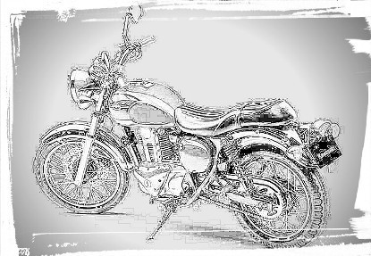
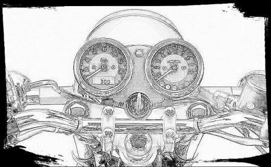

| アスファルトの上の、ウィンドインストルメント | |
| 犬江八吉 | |
| (2017) | |

アスファルトの上の、
ウィンドインストルメント
犬江八吉
「さわだなつこです」
歯切れの良い、それでいて、しっとりと落ち着いた声が、居眠りしかけている僕の脳を刺激した。
なぜだかわからないが、ほかの人とは違う印象をその声から受け、僕は、そのままの姿勢で、視線だけ上げた。
そのとき椅子に座っていた僕は、机に右腕の肘をついて立て、手の甲を上にしてだらしなく折り曲げた手首に、あごを乗せていた。そうしてぼんやりとした表情で、前の席に座る人の背中を眺めていた。
声の方を見る。
うわめづかいになった視線は、めがねの縁の上を通って、多分他人よりも濃いめであろう自分の眉毛の影と、伸びた前髪が見えた。
ホワイトボードの前にこちら側を向いて立つ声の主は、近視のせいで、ぼやけて見える。
それでも、形の良いまるい頭ときゃしゃななで肩が、なんとなくではあったが見てとれた。
西暦２００５年の、一月初旬。職業訓練校の初日、午前の時が流れていた。
僕はそれまで、京都市のある工場で、精密機械の組み立ての仕事をしていた。身分は契約社員だったが、機械好きの僕にとって、仕事はまあまあ面白かった。
経験は少なかったが、それでも、持ち前の好奇心で仕事を覚え、正社員の人たちと大差ないスキルの作業もこなせていた。
しかし、結局は「正」ではない社員。いつまでたっても給料は上がらず、ボーナスも無い状態だった。
会社には寮もなく、僕はアパートを借りて生活していた。京都は物価が高いと誰かが言っていたが、不動産は特に高めのようだ。
アパート代もそうだが、駐車場代も高くて、少ない財布の中身をさらに苦しめた。
通勤は地下鉄を利用していたし、京都くらいの街であればクルマは無くてもたいして困らないかもしれないが、そのときの自分の、唯一の趣味であるユーノス・ロードスターが、僕には欠かせなかった。
もう十年以上、僕のパートナーだ。
金銭的待遇の不満を工場長に相談して、正社員への登用を何度かお願いしてはみるのだが、いつも返事は曖昧だった。求人情報の欄には、正社員登用制度あり、と書かれていたのに。
勤めはじめて最初の年度末を迎える頃、一度目の相談にいったときは、まだ希望の持てる話を聞くことができた。
そのおかげで頑張ってこられたものの、けして景気の良くない今、簡単に正社員を増やせないのだろう。
そう思った僕は、三年目の更新のための、次の契約書を提出しなかった。
身近にいた工場の人たちはみな驚いていたが、中には、やっぱりな、と思った人もいたようだった。
それは僕のことではなく、工場長のことであった。
工場長は、それは名ばかりで、現場のことはなにも知らない人のようだ。恐らく工具の使い方すら知らないだろう、と聞かされた。
だから、毎月の売り上げさえうまくいっていれば汗水流して働く人のことなどどうでもいいのだろう、と。
僕は声に出さずに、表情だけで笑った。だってそれこそ、今の僕にはどうでもいいことだったから。
こうして、三十路になってまた、職を変えるはめになった。
二年前の、三十歳になる直前に、やはり失業して、ふらりと愛車で旅をした。
その途中、大人の修学旅行気分で立ち寄った、京都市宇多野のユースホステル。二泊して九州に向かうつもりだったが、毎日の観光が思っていたよりも楽しくて、結局、一週間そこに滞在した。
そのときは六月下旬で、梅雨どきの京都は蒸し暑かった。
そんな中、僕はバッグを背負い、ガイドブック片手に観光名所を見て歩いた。
クルマはユースホステルの駐車場に置いたまま、徒歩と電車で移動し、気に入った絵を見付けては、愛用していたコンタックスのシャッターを押した。
いかにも古都らしい祇園の町並みや清水の参拝道よりも、なぜだか、疎水沿いに散策路が続く「哲学の道」が気に入り、何日かそこに通った。
帰り道に、鴨川のほとりに腰を下ろして脚を休めることが、数日だけの日課になっていた。
夕暮れの川沿いにはよく、カップルたちがそれぞれ等間隔で座っていて、僕はいつも、彼らからはできるだけ離れて一席を確保した。
そして、強い孤独を感じながら吸ったたばこを携帯灰皿に押し込み、腰を上げたあと、観光客で賑わう四条の街を通って、帰路についた。
滞在中に、たまたま見たフリーペーパー求人誌に載っていた仕事が、その工場だった。
京都に住んでみようと、そのとき、そう思った。
そうして二年経った九月、僕は、引っ越しのためアパートで荷造りをしていた。
後悔はあったが、未練はなかった。
後悔というのは京都を離れることではなく、ここに来たことだ。田舎で育った僕に、この地はあまりに狭すぎた。
工場を辞めるとき、現場で良くしてもらった年配の先輩が、「京都で仕事探せよ」と声をかけてくれた。
たしかに雇用の少ない僕の田舎では、仕事探しに苦労するだろう。でも、高い家賃を払い続けながら、ここで職探しをする気にはなれなかった。
それに、京都への興味はとっくに失っていた。
移り住んでからはどこに行っても狭苦しさを感じるようになった僕は、休日にはよく隣の滋賀県、琵琶湖へ愛車で出かけた。観光客でごった返す市内へは、とても行く気になれなかったからだ。
晴れた日のオープンカーでのドライブは、僕の数少ない楽しみの一つで、いつも、凪いだ湖を眺めながら休日を過ごしていた。
職場に同年代の気の合う友人は何人かいたが、特別な付き合いのある人などはいなかった。酒も飲めないので誘われても断っていたし、人付き合いもいいかげんおっくうになっていた。
それに、よそ者扱いされることが時々あって、それがたまらなく嫌だった。
だから余計、転居に未練などあるはずもなかった。
けれども、冬は楽だった。
「冬の京都は底冷え」などと言うそうだが、東北出身の僕にとって、生まれ故郷に比べたら、ここは快適そのものだ。
日中の気温はいつもプラスだし、市内の道路が凍ったことなど一度もなかった。
京都の人は、「真冬日」なんてものを知らないだろう。
その代わりかどうかわからないが、ゴキブリのヤツにはよく悩まされた。
京都のアパートに越してきた初日、持ってきた荷物を整理しようとクローゼットを開けたら、僕より先に陣取っていただろうでかいヤツがそこにいて、京都での初仕事はゴキブリ退治になってしまった。
その後も何度か、部屋の壁を這い上がるものやトイレの床、キッチン下の収納スペースなどにそいつの仲間は現れて、格闘のゴングが鳴らされた。
工場にも時々出現するので職場の人に話すと、やはり、その人の家にも出るそうだ。京都の人たちは、ゴキブリと一緒に生活しているようにも思えてしまった。
もちろんここに限ったことではなく、ある程度温暖な土地であればそいつはいるのだろうが、僕の地元ではそんな光景はまず見られないし、見たことがない。
とてもヤツを素手で触る気にはなれないので、丸めた雑誌なんかで叩いて始末するしかないのだが、その度に、飛び散った体液のせいで、さらに嫌な思いをさせられるはめになった。
そいつはチョコレートボンボンの中身のようにどろっとしていて、ちょっと時間が経つとねばねばと固まってしまって、掃除が面倒だった。
しかし、そんなヤツとも、これでおさらばだ。
正確にいうと、この場所は故郷ではない。でも僕は、帰ってきた、という感覚に包まれていた。
以前住んでいた仙台市内のアパートの、２０５号室。
試しに大家さんに電話してみたら、ひと部屋空いているとのことだったので、契約したのだ。
昔は、２０２号室だった。
木造二階建てのアパートは古くて、もう、築二十年以上は経っていそうだ。一階は貸事務所になっていて三部屋あるが、平日でも人の出入りは少なく、わりと静かだ。
二階は五部屋で、階段手前側の２０１号室から奥の方へ続いて２０６号室まで。２０４号室がないことに、そのとき初めて気が付いた。
アパートの部屋は小さな玄関を入るとすぐにキッチンがあり、奥に六畳の和室と押入れ。バスルームとトイレは別で、風呂にはシャワーが付いていない。
周辺の道路は狭くて一方通行になっているが、そのぶん車の往来が少なくてやはり静かな環境だ。
近くに中学校があって朝と夕方は賑やかだが、それは平日だけ。しかも最寄りの駅までは徒歩で五分くらいだから、条件は良い。
それでいて家賃は良心的で、駐車場代を入れても四万円以下だ。
駐車場はただの砂利敷きで広くはないが、文句もない。
僕の生まれ故郷は、東北の、ずっと北の方。日本一景気の悪い土地にある。
今年の有効求人倍率は０．３、つまり求職者三人に対して求人は一社だけというありさまだ。
地元の専門学校を出てすぐに仙台で働いて暮らしていたので、ここは土地カンもあるし、地元には魅力ある仕事の求人はないだろうとふんだ僕は、再びここに住むことを決心するのに、たいして抵抗はなかった。
引っ越しを終えた僕は、区役所で転入届けを出したあと、その足でハローワークへ向かった。
そこで雇用保険の受給手続きを済ませ、早速、求人の検索をしてみる。閲覧用のパソコンはけっこうな台数があるように見えるが、利用者で埋まっているのは半分くらいだ。
タッチパネルになっている画面を操作して条件を入力し、検索ボタンを押す。
かなり検索条件を絞ったつもりだったが、ヒットした数は百件近くになった。
画面に出てきた一覧を見ると、最近の会社名はカタカナが多くて、なにがなんだかよくわからない。意味のある単語ならまだしも、社名だけで事業内容がわかる会社は少ない。
とりあえず、興味のある職種は手当たりしだい開いてみる。そして、しばらく検索を続けていて、気付いた。
人材派遣業の求人の多さが目立ち、僕は戸惑った。
三十一歳の今、やはり、安定した立場に、できれば立ちたい。
つまり、企業の正社員として雇われたいのだが、その求人数は少なく、その中にやりたい仕事、やれる仕事はこれといってなかった。
人材派遣業の会社への正社員雇用はあるが、結局現場は、派遣先と期間を定められた契約によって決められるものだ。
今となってはどこでもそうなのかもしれないが、特に人材派遣ではなおさら、永年勤続の望みは薄く思われる。
試しに年齢を「三十歳」として再検索してみる。
すると今度は、二百を超える求人が出てきた。名の知れた会社の正社員採用も多い。
「三十過ぎると、こうなのか......」
どうしようもできない現実にがっくりと肩を落として、僕は外に出た。
自動ドアを出ると、残暑の東風が、ぬるく体にまとわり付く。
そのとき、正面を横切る二車線の広い道路を、一台のオートバイが東風とともに右方向から駆け抜け、左へ走り去っていく。焼かれたアスファルトに、軽快で心地よいパルスの音が響く。
僕の目が、それを追う。
でも、頭はなにも考えていなかった。ただ、目の前で動くものを映像として捉えただけだ。
それでも、オートバイに乗る人が女性であることはすぐにわかった。
男の野生かどうかはわからないが、小柄なライダーの、背中から厚い腰へのラインがそう思わせたのだろう。
小さくなるその流面をただ見送って、僕はアパートに帰った。
後日、渡された雇用保険受給資格者証を見る。
氏名には「近江俊男」、フリガナに「オウミトシオ」とある。
受給日数は９０日となっているが、給付はまだ受けていない。離職理由が「自己都合」だからだ。
貰えるのは三ヶ月後の、年末あたりだろう。
それまでに仕事を見つけるか、節約して暮らしていかなければならない。
今年の東北地方は冬の到来が早く、十二月に入って早々に、仙台平野でも初雪が舞う光景が見られた。
今月、僕は誕生日を迎えてしまっていた。三十二歳、だ。
「毎年、冬はこうだ」
と、右の肩に左手を当てながら思った。
昔、仕事をはじめたばかりの頃に痛めた、右の肩だ。肩の、鎖骨の付け根。初めて働いた、自動車整備の仕事で痛めたものだった。
最初は、ただの疲労だと思って我慢していた。
それに仕事柄、腰とか背中とか体に不調を感じながらも、ごまかしながら仕事をしている人も珍しくなかった。
そんな中、新人の僕が、ちょっと肩が痛むくらいで仕事を休んで病院に行くことは、正直気が引けた。
そして無理がたたり、しまいには腕が肩から上にあがらなくなってしまった。
たまらず、病院に行って、痛み止めの注射をじかに関節に打ってもらうと楽になったが、数日するとまた痛み出していた。
通院しながら、仕事をしながら、という毎日がしばらく続き、半年でそこを辞めてしまった。
辞めた原因はもちろん痛めた右肩だが、それだけではなかった。
肩を痛めた事実を上司は知っていたが、「労災」の言葉は一言も聞かれなかったし、仕事量もそれまで通りで、体調を考慮されたり特別扱いされたりすることなど、一度もなかった。
だから、嫌になったのだ。
その後、しばらく通院を続けていたが、医者から「内視鏡」の言葉を聞いてからは、二度と病院には行かなくなった。
肩を切開して中を覗く、と言われたのだ。僕は、その言葉にすっかり怯えてしまった。
それに、少しずつではあったが、痛みは徐々にひいてきていた。
今まで何度か転職するが、それ以来、体力を酷使する仕事はできるだけ避けてきた。
今ではもう、日常的に痛むことはほとんどないが、気温が下がってくると、時々、鈍く痛んだ。
今年の冬のように、いきなり寒くなったときは、なおさらだ。
僕は、十月に二社、十一月には四社に履歴書を送っていたが、再就職はまだ決まっていなかった。
書類審査で落選したり、面接して不合格になったりもしていたが、中には、自分から応募を取り消した会社もあった。
面接を受けてみて、なんとなく違和感をおぼえた会社がいくつかあったのだ。
紹介も名乗ることもなく、誰で、どんな立場の人なのかまったくわからない。それでいて、僕の目の前で堂々と偉そうに座っている面接官を相手に、自分の経歴を細かく説明することに抵抗を感じたこともあった。
中には、繁忙期には二交代勤務になる、と軽く話す会社もあった。求人票には、日勤の時間帯だけしか書かれていない。
勤務時間は労働契約に関わる重要なことではないのか、と独り考えたりもした。求人票に、夜勤を書けない理由でもあるのだろうか。
一度、三十二歳までの条件の求人に応募したときには、不愉快な思いもさせられた。
そのときまだ三十一歳の僕に対し、「ギリギリですね」と、その会社の採用担当者が口にしたのだ。
年齢オーバーでケチをつけられるのならまだしも、条件に見合っているにもかかわらずそうして言われたことに腹が立った。
二十代の若者が欲しいのなら、最初からそういう条件にしたらいいのに。
しかし、どういうわけかそこは書類が通り、面接して、やっぱりこちらから断ってあげた。
求人への応募のとき、年齢制限だけではなく、学歴も、大学を出ていない僕を苦しめた。
昔と違って失業者があふれている現在、中途採用の応募の際には、事前に履歴書と職務経歴書を要求して送らせる会社がほとんどで、採用選考も長期化する。
今、僕は一社だけ、連絡待ちになっている。
「どうしようか......」
こんな独り言を、最近は言うようになってしまった。
連絡待ちになっている一社は、年齢条件が三十歳までとして募集していた会社で、ハローワークの窓口に頼んで、なんとか紹介を得て応募したものだった。
あんまり、結果に期待はできない。
その日、ハローワークは混み合っていた。
僕は、カウンターにあった受付機から番号札の紙切れを一枚抜き取り、出入り口のそばの壁に寄りかかって立った。順番待ちをしなければならなかった。
見渡すと、同じように待っている人が五人以上いるようだ。
僕は、その中の、一人の若い女性と目が合った。なかなかの美人だが、派手な髪の色が軽率な性格を思わせた。
そうしてすぐ、視線をそらした。
視線を向けた先の壁に、張り紙が何枚も並んでいる。
Ａ４の大きさの、コピーした紙のようだが、右端の一枚だけは紙の色がピンクで、それが不思議に感じられた。
僕は、めがねの奥で目を細めた。
ぐっと目をこらしても、離れた場所にある張り紙の文字を読み取ることができなかった。
「ポーン...大変お待たせいたしました」
受け付け機の方から、機械が発しているとは思えないほど流暢な女性の声が聞こえてきて、張り紙を見ていた僕の意識は、その声に集中した。
「じゅう、ろく、ばんのかた...」
十六番の人を、機械のお姉さんが呼んでいる。
自分の右手の中で、早くもしわくちゃになった紙切れを見た。
二十一番だ。
ピンクの張り紙の方へ、僕は歩み寄った。
その張り紙は、縦横の中央に太いラインが引かれて四つに仕切られていた。
一番下には「ポリテクセンター」とある。やはりカタカナが難しい。
左上から文字を読んでいく。
「ふんふん」
声に出さずに二回、軽くうなずいた。書かれている内容が理解できたからだ。
早い話、「公共職業訓練所」なのだろう。漢字で書いてくれればいいのに。
そこで、張り紙への興味は急速に失われていた。
そして、二十一番が呼び出された。
求人検索して、およそ三十分後、僕はパソコンの前を離れた。
この日も、応募したくなるような求人は見つからなかった。
「収穫無し、か......」
心の中で深いため息をすると同時に、こう思っていた。
その場を立ち去る前に、ピンクの張り紙の所で、僕はもう一度立ち止まった。
今度はもう少しじっくり読んでみると、受講者の資格のところに、仕事を探している人で雇用保険受給期間中の方、と書いてあることがわかった。
訓練期間は六ヶ月。
受講科目は四つあり、右下に書かれた「ビジネスワーク科」に、僕の目は走った。
講義内容は事務的職業に関するもので、自分のこれまでの経歴からすると、明らかに畑違いだった。事実、総務・労務・財務・税務・経理・給与計算などと、単語の意味はわかっても、その業務内容はいずれもさっぱりわからないものばかりだ。
「パソコン実習」と最後に書かれている。
僕は、パソコンもよくわからない。
再就職に苦労している今、僕は、なにをやりたいのかよくわからなくなっていた。
そして、今の自分になにができるのだろう、と考え込むときもあった。
「それならば。少しでも、なんでもやれるようにしておいたら......」
ハローワークで求人検索をし、帰りに、本屋さんで求人誌を立ち読みしながら時間を潰す毎日に、飽き飽きしていた。
振り返った僕は、ピンクの張り紙に書かれていた、受け付けの窓口を探した。
「さわだなつこ」という響きに、ずり落ちかけていためがねをなおし、レンズを通った視線を彼女に向けた。
なぜか「夏のゆかたが似合う女性だ」と、さわだなつこにピントを合わせたトシオは、感じていた。
切れ長の瞳は、ちょっと垂れているだろうか。その目は少し細めで、ひとえまぶたのように見える。
自己紹介に照れて、はにかむ仕草がかわいらしかった。その笑顔に、化粧っけは見て取れない。
染めている感じのない、それでいて自然なこげ茶色の髪の毛は、後ろで一つにまとめてお団子のようになっている。
ポニーテールが似合いそうな、形の良い後ろ頭がわかる。
体つきは線の細さをうかがわせ、ふくらみはわずかばかりだ。腕も胴まわりも細く、スポーツを連想させない。
身長もあまり高くなく、二十代前半の年頃に見えた。
そして、女性としての色気もほとんど感じさせなかった。
「......めんこいなあ」
トシオは彼女を見て、めんこいと思った。
めんこいとはかわいいといった風な意味で、トシオの故郷の方言だ。
十年以上も郷里を離れて暮らしてきたせいで、地元特有の訛りはほとんど抜けていたが、「めんこい」だけはどこに行っても、トシオはよく使っていた。
けれども彼女の、見た目と違う、顔や体格に似合わない、とても落ち着いた発声で、そのギャップが、なにか不思議なものを感じさせていた。
ひととおり分析が終わると、さわだなつこの自己紹介も終了して、彼女は席に戻った。
トシオは、ずっと手首にあごを乗せていたせいで、すっかり右手が痺れてしまっていた。
なつこの席は、トシオの左側真横の、二つ先にあった。
トシオは前から二番目、右から二列目だ。
右から縦一列目は九月期生、その隣の、トシオが座る二列目は一月期生、トシオとなつこのあいだの三列目は九月期生と、去年の九月に入所した受講生と、トシオと同じく今年一月に入った人たちとが、互い違いに隣り合うように席が決まっていた。
つまり、同じ教室の半数は、すでに三ヶ月の講義を終えている先輩なのだ。さわだなつこは、一月期生だ。
教室にはそれぞれ十五人ずつ、合計三十人分の机があるが、五ヶ所は空席になっていた。
いずれも九月期生の席で、訓練の途中で再就職が決まって退所していった人たちだ。就職が決まってする途中退所は、もちろん歓迎される。
事務的な仕事の勉強ということもあってクラスには女性が多いが、トシオを含めて九人の男性がいた。
全員の自己紹介を聞いていると、事務職の経験者はあまりいないようだ。
年齢は二十代から三十代前半の人がほとんどで、どう見ても四十を越えているだろうという人は、約二名だった。
「今にも降ってきそうだ」
トシオは、自分の吐いたたばこの煙の先にある、灰色で低い、雪雲を見て思っていた。
今朝の天気予報で映されていた、北日本全体を覆う、青い色をした寒気を思い出した。
「降りそうですね」
隣にいた体格のがっちりした男が、トシオに話しかけた。
講義の合間の休憩中、トシオとその男は、訓練校の裏口に設けられた喫煙所にいた。
「ビジネスワーク科の人ですよね」
男は言うが、トシオは彼を知らない。
年齢は、トシオと同じくらいだろうか。頑丈そうな顎で人懐こそうに笑っている。
「そうです。あなたも？」
「ええ。オウミさんの、二つ後ろの席ですよ」
自分の真後ろに、若い今風の男が座っていたのは覚えていたが、彼のことを思い出すのには少し時間がかかった。
そして、自己紹介でみんなの笑いをとっていた男のことを、少しだけ思い出した。
「ああ。たしか、カーディーラーでセールスしてた」
「ええ。降ってきたら積もりそうですね」
男は、話題を雪に戻した。
彼の話では、どうやら車のスタッドレスタイヤが、履き潰すために去年の冬からずっとそのまま使っているもので、この冬には新品に履き換えるつもりだった、ということらしい。
つまり、ひと夏を冬用のタイヤで過ごしたのだ。だいぶ、山は減っているだろう。
そもそも、冬用として寿命を感じたために、夏場も使用して終わらせるつもりだったろうから、そのタイヤで雪道は危険かもしれない。
「オウミさんは、車ですか？」
「いや、僕は電車なんですよ」
駐車場のスペースのせいなのか、交通機関を利用しての通所に不便がないからか、車の許可がトシオには下りなかった。
「私はバスでも来られるんですけどね。腰を痛めてまして、病院通いしてるもんで、車で申請したんですよ」
「腰が痛いんじゃ、運転もつらいでしょう」
たばこをふかしながら、トシオは話した。
男は、持っている火の点いたたばこをあまり吸っていない。
たばこを持った左手の薬指に、煙にまかれた指輪が見えた。
「腰痛で会社をクビになっちゃいましてね。タイヤも買えなくなりましたよ」
笑いながら、男は話す。
クビは言いすぎだろうが、後半は理解できた。
「どこのディーラーですか？」
トシオが訊くと、男の口から、トヨタ系列のディーラー名が答えられた。
「なんのクルマに乗ってます？」
興味から、トシオはさらに尋ねた。
流行りの、コンパクトカーの名前が返ってきた。
ああ、と軽く相づちして、たばこをふかしたあと、灰皿でもみ消す。そろそろ次の講義がはじまる時間だ。
男も、トシオに続いた。
根っからのクルマ好きって最近見ないな、とトシオは思っていた。
その日、日が暮れてから、静かに雪が降りはじめた。
朝、寒さで目を覚ました。
目覚まし時計が鳴る前に起きるのは、久しぶりのことだ。
いつもの起床時間の、十分くらい前だった。
布団から一旦出て、温風ヒーターのスイッチを入れたあと、また、温もりの残るねぐらに潜りこんだ。
この間数秒だったが、ティーシャツ一枚ではとても寒すぎた。
ティーシャツ一枚、というのは正確な表現だ。
トシオはパジャマを着る習慣がなかったし、パンツを脱いで寝る癖があった。
寝相の悪いトシオにとって、寝返りをうったときに体にまとわりつくパジャマは睡眠の邪魔そのものだったし、パンツのゴムの、締めつけ感も嫌だった。
時々パンツを履いて寝てはみるものの、朝には脱げていることがほとんどだった。なぜパンツが脱げるのかは謎だが、脱げたパンツは布団の中の、たいてい決まった辺りで発見できた。
ヒーターが点き、バーナーで燃える炎の音が、二度寝のトシオを優しく包んだ。
トシオは、浅い夢を見ていた。
セットしてあった目覚まし時計のアラームが、夢の中のトシオを呼び戻す。
反射的に腕を伸ばして２コール目が鳴るのと同時にストップさせると、その手は静かに、布団の中へと吸い込まれていった。
五分後、また、アラームが鳴る。
さっきとは違う音色で、さっきとは違う位置で鳴っていた。今度は携帯電話のアラームだ。
携帯電話はテーブルの上だ。これを止めるには、起き上がらなければならない。
トシオは観念するように、被っていた布団をはぎとった。
部屋の寒さはいくぶん、やわらいでいる。
そのままの姿で携帯電話のアラームを止め、頭をかいたあと、トシオは、布団の中のパンツを探した。
紺色の遮光カーテンの隙間から漏れた、朝日の光が部屋に差し込んでいる。
テーブルの上に置いてある、ブルーのたばこのパッケージから一本取り出して口にくわえ、ジッポのライターを手に取り、気が付いたように、施錠してある窓の鍵を下ろした。たばこを吸うときには必ず、換気のために窓を少し開けていたからだ。
いつものように窓を引いたのだが、隙間は開かなかった。
少し強く、力を入れて窓枠を引く。
パリッと音がして、引きずるような感触で窓が開いた。サッシ下部の滑車が、正常に回っていないようだった。
透明なはずの窓が、今は曇りガラスのように真っ白になっていて、下の方で凍りついているのが見てわかった。
昨晩に結露した水滴が溜まり、寒さでそのまま凍ったのだろう。
空は、水色に晴れている。
日差しがまぶしいくらいあるにもかかわらず、冷やりとした空気が部屋に流れ込んできた。寝起きの体に触れる冷気が風を感じさせたが、外に見える街路樹の葉は揺れることなく穏やかだ。
ベランダにとまった二羽のスズメは、その羽毛をまるまると膨らませて、体温を蓄えている。
土曜日のその日、トシオは退屈していた。
訓練校は休みだし、ハローワークもやっていない。東北に住んでいながら、ウィンタースポーツの趣味もない。
冬は一番、退屈な時間だ。
革のキーホルダーに掛けられたユーノス・ロードスターの鍵を取り、部屋を出て、裏の駐車場に向かった。
クルマの上には雪が５センチほど積もっていて、ボディがひとまわり大きくなっている。ワイパーブレードは、左右とも直立に立たされていた。
運転席側の幌の雪を手で払いのけ、ドアを開けて乗り込む。
ドアに、鍵はかかっていない。
何年か前にキーシリンダーが壊れて馬鹿になってしまい、施錠できない状態だった。
修理に出すつもりもなかった。
車上荒らしの心配はあったが、盗られて困るものは車内には置かなかった。
カーコンポは純正で、ちょっとした衝撃を拾ってはよく音飛びする旧式のＣＤプレーヤーと、ラジオだ。それに、音楽を聴きながらドライブすることはほとんどなかった。盗まれても困らない。
ロードスターはノーマル状態で、マフラーも純正のままだ。
しかし、このマフラーが奏でるエキゾースト・ノートが、トシオは好きだった。
不快なうるささもなく静かすぎるでもなく、ちょうど良いサウンドを、このクルマは発する。
車両盗難の心配もあるが、型遅れで高価なクルマでもないし、マニュアルミッションの車を、悪い中高生がいたずらして乗り回すことも考えづらい。
いずれにしても、ドアは誰にでも開けられる状態なのだから、鍵を持たない者がクルマに乗り込もうとして、カッターナイフで幌を切り裂く必要はないわけだ。高い修理代を払って、幌を交換するはめにはなりたくない。
車検証は、後ろのトランクルームに入れてある。車内にトランクオープナーは無く、開けるためには、直に鍵を使わなければならない。
ホイールは黒のワタナベを履いていたが、今は、スタッドレスタイヤが組まれたシルバーの純正品だ。
サスペンションもノーマルでワインディングでは少し頼りないが、コーナリング中の適度なロールがトシオは気に入っていた。
あちこちにシワができた、タンカラーの本皮シートに乗り込み、ドアは開け放ったままで右足は地面の雪の上、左足でクラッチペダルを踏み込んで、サイドブレーキを引いた。
駐車中にサイドブレーキはかかっていない。ブレーキワイヤーの凍結防止なのだが、癖で夏場でもかけない。
その代わり、ギヤはリバースに入っている。今も入ったままだ。
車内は冷やりとしていて、とても静かに感じた。クルマを覆う雪が、周囲の音を吸収しているせいだ。
まるで、静寂の冷蔵庫だ。
ステアリング中央のナルディマークのホーンボタンが、トシオの息で白く曇った。
メインスイッチに差し込んだキーをひねる。キュンキュンと回るセルモーターは、ちょっと力ない。
五回目のクランキングでエンジンが目覚める。少し長めのクランキングだった。
タコメーターの針は一気に二千五百回転を指したあと、千八百回転辺りで落ち着いた。
気温が低いせいで、わりと高めにチョークが効いている。水温が上がるまでに、十分以上はかかりそうだ。
動きが一定になったタコメーターの針を確認したあとで、ギヤをニュートラルにし、クラッチペダルを踏んだ足をゆっくりと戻す。
一瞬エンジンの回転が落ち、また復帰して、安定した。
カチカチと聞こえてくる異音に気付く。
エンジンヘッドのバルブからの音であることがトシオにはすぐわかったが、少し大きすぎる。
「そういや、久しぶりだな」
季節が冬になってから、すっかりドライブにも行かなくなってしまった。
クルマに乗るのは三週間ぶりだ。ヘッド廻りのオイルはほとんど落ちてしまっただろう。
自動で調整されるはずのバルブクリアランスが狂っているなと、トシオはカムシャフトに叩かれて動くバルブをイメージしながら思った。
バッテリーも弱っているようだ。
平日はほとんどクルマに乗ることがないし、今搭載されているバッテリーは一度も交換したことがない。新車のときからのものだ。
十年以上もっている働き者のこのバッテリーは、メンテナンスフリータイプで、エンジンルームではなく、後ろのトランクの中にある。
ただでさえ狭いトランクルームの中の一角を陣取っているバッテリーだが、カバーされていてその姿を見たことがない。
トランクにはそのほか、ホイールナット用のレンチとジャッキ、緊急用タイヤが収められていて、軍手や車検証と、幌をたたんだときに被せるスタイリッシュカバーを、一緒に積んでいた。
トシオは、ボンネットのオープナーを引いた。
クルマのノーズから音がしてボンネットが開いたことがわかったが、車内からは確認できなかった。
ヒーターのスイッチを「１」に回し、レバーを「デフロスター」にする。ウインドウの曇り止めに利用するときの位置だ。
まだヒーターの風は冷たいが、水温が上がれば、フロントウインドウの雪を溶かしだすだろう。
クルマから降りてドアを閉めると、雪の積もった幌の屋根が浮き上がる様子が見えた。
横から手を伸ばして二本のワイパーを寝かせ、クルマの前にまわって、アルミ製の、軽いボンネットを開ける。
バルブの異音がどうしても気になったのだ。もちろん、エンジンを眺めるだけでは中身のことはわからない。
エンジンルームは比較的きれいだ。洗車のたびにボンネットを開けて、中をウエスで拭いていたおかげだ。
ファミリアベースの１６００ｃｃのエンジンは、ツインカムがわかりやすいようにデザインされたヘッドカバーが被されている。
きれいに磨かれたヘッドカバーからは、四本の青いプラグコードが伸びている。
そういえば、このプラグコードは純正ではない。
昔、ドライブをしている途中で、急にエンジンパワーがなくなって失速してしまったことがあった。
排気音もこもっておかしくなっていたし、発進のときにいつもより回転を高くしないと、すぐエンストしてしまう状態だった。
感覚的には、エンジンパワーは半分になってしまった印象を受けた。
原因は、エンジンの一番奥、最も長さが短い四番のプラグコードだった。劣化で電気抵抗が異常に高くなり、プラグにまともな電圧がかからず、スパークできない状態になっていた。
一発死んだため、四気筒のエンジンは三気筒になってしまった。それでも、四番のピストンが回っているために抵抗となり、さらに大幅なパワーダウンを強いられたのだ。
あのとき、プラグを四本ともと、社外品のプラグコードに交換した。
想い出を思い出して、トシオは気が付いた。ヘッドカバーを固定するボルトの頭が汚れている。
指で撫でて、それを見る。
「オイルだ」
エンジンをできるだけ横から覗いて、注視する。
ヘッドカバーの下、エンジンヘッドとの境目あたりから、下に向かって汚れているのが確認できた。
「オイル漏れだ...」
トシオはつぶやいた。多分、ヘッドカバーパッキンが劣化したのだろう。
もう十年以上乗ったクルマだ。走行距離はまだ八万キロを少し越えた程度だが、故障してもおかしくはない。
今年の四月上旬には、五回目の車検がひかえている。
まる十一年、乗ることになる。
「車検か......」
トシオは考えていた。それは、車検をとらないことだった。
オイル漏れは初めてではなかった。
前に二回、オイルレベルゲージが刺さるガイドパイプのつなぎ目から漏れていたこともあり、トシオはそれを、自分でオーリング交換して修理した。
故障は、ほかにもあった。
運転席側のパワーウインドウの動きが鈍くなり、しまいには中のワイヤーが音を立てて切れて、窓ガラスがドアの中にすっぽり落ちてしまったこともあった。
修理工場で見せてもらったそのワイヤーの断面は錆びていて、反対側ウインドウの故障を懸念するはめになった。
その助手席側は、今のところまだ壊れていない。
シフトは二速への入りが悪い。これは新車のときからだったような気がする。
できるだけ静かなシフトチェンジを心掛け、さらに、車検毎にミッションオイルを交換してきたが、調子は相変わらずだった。
バッテリーも弱っている。
オイルは漏れている。
ドアの鍵はかからないし、ギヤの調子も悪い。
クラッチだって、そのうちオーバーホールしなければならないだろう。
タイミングベルトもじきに交換だし、幌もくたびれていて、時々雨漏りもしていた。
どこがいつ壊れても、おかしくない。
「廃車」の二文字を、トシオは思い浮かべた。
貯金はまだあるが、失業中で余裕などない。
職業訓練校へは電車通いだし、雇用保険といっしょに定期代も出ている。クルマがなくても、今の生活に影響は少ない。
「でもなぁ......」
でも、愛着はある。
こいつは、初めてのマイカーだ。
もともとトシオは、バイク乗りだった。
高校三年生の夏に、普通自動車免許を取るため教習所へ通いはじめ、そのとき高校の許可を得て小型二輪免許のコースにも出て、真っ先に小型二輪の運転免許を取得した。
「事故のときの責任をどうするんだ」と言われてバイクに乗ることを親に反対されたトシオは、貯めていたわずかな自分の貯金をはたいて中古のバイクを購入するという強行に出て、念願だったライダーの仲間入りをした。
１２５ｃｃの、ヤマハの白いオフロードバイクだった。
もちろん、自腹で任意保険にも入った。
トシオは、高校を出て専門学校に通うようになると中型二輪免許を取り、アルバイトをはじめてホンダの２５０ｃｃを購入した。
当時流行っていた、アルミフレームにフルカウルをまとったレーサーレプリカだった。
そしてほぼ同じ頃、トシオは一台のクルマを目撃して、その虜になる。
それが、ユーノス・ロードスターだった。
少なくとも、そのときのどの車にも似ていない、とても個性的なクルマに見えた。
社会人一年生になったトシオは、ホンダを売却し、それを頭金にしてローンを組み、ロードスターを手に入れた。
二人乗りの小柄なオープンカーは実用性に乏しく、これまで何度も買い換えを考えたが、これといってトシオを動かせるクルマもなかった。
それにそのぶん、趣味性を強く感じさせるこのクルマが、とても気に入っていた。
まさに、愛車そのものだった。
冷えきった朝の空気の中に、「バゥーン」というバイクの甲高いエンジン音が、駅前で響いた。
聞き覚えのあるその音にトシオはすぐ反応して、入りかけた駅の扉の前で立ち止まり、振り向いた。
周囲にいた女子高生のほとんどと、スーツの上にコートを着た男の何人かが、トシオと同じ行動をした。
トシオが、アパートから歩いて通っているその駅は、造りが古くてあまり大きくなく、駅前には車が三台ほど停められるスペースがあるだけだ。
タクシー乗り場にもなるそのスペースに、通勤通学客で賑わう朝の時間帯、その姿はなかった。
トシオは音の主であろう、バイクを探した。多分、いや、きっと２サイクル単気筒のバイクだ。
間違いない、と確信しながら、駅前の道路に目を走らせた。
日陰の中に、ライムグリーンが、低い位置に見える。
転倒したようだ。
駅のすぐ隣にあるマンションを見上げる。
朝日はそのマンションに隠れていて、まぶしくともなんともない。トシオが立っている場所も日陰になっていた。
ライダーは立ち上がって、バイクのハンドルに手を掛けて起こそうとしている。
足が滑って踏ん張れない様子が見えた。
駅前はきれいに除雪されていて乾いたコンクリートになっているが、あそこだけ、路面が凍っているようだ。
道路にも雪はほとんど見られないが、路肩には白いかたまりが所々にあった。
一度溶けた雪が寒さで凍り、日陰で残っていたその氷に、彼は乗り上げたのだろう。
ライダーはバイクを起こし、転倒した辺りを見ている。彼の所持品も、バイクのパーツも落ちていないようだ。
痛がっている様子も見られなかった。擦り傷ていどで済んだだろう。
再びシートに跨ったライダーが、右足でキックレバーを踏み下ろす。一回、二回、三回。まだかからない。
さらに三回キックすると、ぐずるようにエンジンが目覚めた。
軽やかな排気音とともに、多めの白煙が後ろに吐き出される。近くにいる人は、焼ける２サイクルオイルの匂いを嗅がされていることだろう。
ライムグリーンのバイクは、こちらに背を向けたまま静かに走り出して、見えなくなった。
そのときかすかに、マフラーからのオイルで黒く汚れた、ピンク色のナンバープレートが確認できた。
１２５ｃｃのオフロードバイクだ。
そのことに気が付いたのは、トシオだけだった。
ほかの人たちにとってはバイクなどどうでもいいことで、立ち止まっているのは一人だけになっていた。振り返ったトシオは、駅に入っていった。
「痛くても、やせ我慢してたのかな」
改札をくぐりながら、転倒したライダーのことを思い出して、トシオはにやけた。
電車は、十分ほど遅れて運行していた。
聞きとりづらい駅のスピーカーから、「ポイント」「凍結」の言葉が、繰り返された二度目のアナウンスでわかった。
気温は低かったが、積雪そのものはたいしたことはなかった。
「ビジネスワーク科の先生、どなたかお願いします」
ホームで電車を待っていたトシオは、革ジャンのポケットから携帯電話を取り出し、訓練校に電話をかけた。担当の指導員は二人いるが、遅刻の連絡はどちらにしても良いだろうと思った。
いつもぎりぎりなのだから、今日の遅刻は明らかだ。
「十五分くらい遅れます」
訓練校近くの駅から少し速めに歩いていったなら、多分十分も遅れることはないだろう。しかし、教室に入る前にする一服の時間を加算して、十五分と伝えた。
その後、いつもよりも多めの乗客を乗せて、電車は到着した。
予定通りの、十分遅れだった。
一人きりの訓練校の喫煙所でたばこを吸い終えて、トシオは教室に向かった。
静かにドアを開けるが、教室の中には誰もいない。
ホワイトボードになにか書かれている。
革ジャンを脱いで椅子に掛けながら、それを読んだ。
「パソコン室」
教室もパソコン室も、二階にある。
一階には施設の事務室があって、その隣には受講生用の男子更衣室がある。訓練科によっては作業服を着用して行う実習もあるようだ。
女子更衣室もあるはずだが、どこにあるのかはわからない。
ビジネスワーク科の講義では着替える必要はないのだが、ロッカーは全員に割り当てられていた。
鍵も渡されていて、みんなは上着や私物を入れて利用していたが、トシオは使ったことがない。
だから革ジャンは、いつも椅子の背もたれに掛けられた。
「ロッカーの鍵、どこいったろう」
そう考えながら、必要なテキストを取り出そうと、教室後ろの書棚を探した。
今週は、ワープロ活用の勉強のはずだ。
書棚にはワープロ用のほか、表計算や検定試験用のテキストが何冊も並んでいた。
テキストの表紙には、番号がふってある。
トシオの名簿番号は一月期生の中の二番だったが、パソコン実習では九番になっていた。
パソコン室は縦長になっていて、受講生用のパソコンが四列に配置されている。
廊下側と隣の列は七台ずつ、窓側の二列は八台ずつの、合計三十台。
トシオは廊下側から二列目の、前から二番目だ。
廊下側の前から順に番号を追っていくと、トシオは九番目になる。「０９」と書かれているテキストが、トシオのものだ。
ワープロテキストは十冊くらい残っていた。そのぶん遅刻者がいるか、講義そっちのけで自分の課題をやっている人たちのものだろう。
その課題がまともなものなのか、インターネットとかなのかはわからない。一日中、ゲームをして過ごす受講生もいるようだ。
「０９」のテキストを探し出して席に戻り、バッグからノートと筆記用具、各自に一枚ずつ手渡されたフロッピーディスクを取り、教室の扉に手を掛けた。
そのとき、扉の曇りガラスに人影が写り、反射的にドアノブから手を放した。
教室の中から廊下に出るためには、ドアを押さなければならない。
トシオは、相手にドアを譲った。
そっとドアが開いて、声がする。
「あ、......おはようございます」
さわだなつこ、だった。切れ長な垂れ目が印象的だ。
彼女も遅刻したようで、外の寒さからなのか、急いで来たせいなのか、頬が赤くなっていた。
「めんこいなあ」
もちろん、声には出さない。
「おはようございます」
トシオがそう言うと、なつこは少し頭を下げて教室に入り、席に向かった。
そのとき、まあるい頭と後ろのお団子が、目の前を通りすぎていった。
「そういやなっちゃんも、いつもぎりぎりだな」
どこから来ているのだろう、と考えながら、トシオはパソコン室に向かった。
講義は、とっくにはじまっていた。
朝の冷えこみはまだ厳しいが、日中はだいぶ暖かく感じるようになってきた。
「こはるびよりだね」
クラスの若い女性が、近くの女の子に話している。
「それは違うだろ」
トシオは、心の中で指摘した。春に「小春日和」とは、日本語がおかしい。
三月のその日、職業訓練校では、新しく入所予定の、四月期生に対する説明会が開かれていた。トシオを含めた一月期生も、去年の十二月に説明を受けている。
指導員はそちらに参加して、午前中はパソコン室で自習となっていた。
トシオの目の前にあるモニターは、起動してある表計算ソフトが画面に出ていた。
手元には、テキストブックが開かれている。
「３０時間でマスター」などと書かれているそのテキストは、トシオの手にかかると、６０時間は必要なくらいのボリュームがありそうだ。
それでも、これまでのパソコン実習により、素人のトシオでも基本操作くらいはできるようになっていた。
しかし、関数を使いこなすまでにはなっていなかった。講義の途中から、ついていけなくなっていたのが原因だった。
教える側の指導員は、テキストを見ながらパソコンを操作して、受講生に説明をする。
教わる側は、テキストと自分のパソコン、そして、プロジェクターによって映し出された指導員のモニターを見なければならない。
不慣れでキーボードの打ち込みが遅い人や、手間取って二種類の画面を見比べたりすると、必然的に操作が遅れ、その課題を断念して、理解不足のまま次に進むはめになっていた。
トシオは、隣の席に座っている女性のパソコンを、なにげなく覗いた。表が一つ、グラフが二種類映されている。
「ベテランですね」
話しかけたその女性は、トシオより少し年配に見える。三十台の後半くらいだろうか。
「いえいえ、そんなことないんですよ」
やわらかい話し方だ。
「そういう仕事をされてたんですか？」
「いえ、違うんですよ。パソコンは、ここに来るようになって初めてさわるんです」
「すごいな」
彼女の成果に、トシオは感心した。
「講義のあと、パソコン教室に通ってるんです。資格取ろうと思って」
「なるほど。頑張ってますね」
そこで、会話が途切れた。
いつも隣にいながら、朝に挨拶するくらいで、彼女とはまともに話したことはなかった。
共通の話題などなかったし、その女性も、自分からこちらに話しかけてくることはほとんどなかった。
「講義のペース、速いですよね」
「うーん、そうですねぇ」
トシオが話しかけるが、そっけない返答で、また、会話が途切れる。
トシオは、特別誰かと親しくするわけでもなく、淡々と毎日の講義を受けていた。
喫煙所で男性陣が何人か集まって雑談することはあったが、馬鹿な話をして盛り上がったりするようなことなどもなかった。
女性の方も、休み時間には２～３人のグループになって過ごしている様子だったが、みんなで和気あいあいという感じはあまりしなかった。
訓練生とはいえ、みんな社会人だし、資格取得や再就職に向けて、人それぞれ頑張っていた。
トシオも、もちろん再就職が目標だが、最近は就職活動らしいこともしなくなっていた。
「......ボキ」
しばらくしてから、トシオは思い出したように、また隣に話しかけた。
「え？」
「簿記の講義は、どうでしたか？」
九月期生は、九月から十二月まで、簿記を中心とした講義を受けていたはずだ。
一月期生のトシオたちは、四月から、その予定になっている。
「ああ。大変でしたよー。今よりずっと大変」
大人の女性といった感じの、声と話し方だ。既婚者なのだろうか。
「試験、受けました？」
「簿記検定？三級受けて、なんとか合格だったの」
「へえ」
「ペース、速いですよー。頑張ってくださいね」
「はあ」
簿記がどういうものか知らないが、計算は得意だ。
数学はわりと好きだったし、設計の仕事もしたことがあるから、電卓はよく叩いていた。しかし講義についていけずに落ちこぼれるのはいやだな、とトシオは考えながら席を立った。
十時半をまわっていた。自習の時間、休憩は各自の自由だった。
隣の席の後ろを通り、パソコン室の横中央の扉に向かった。
トシオの列の、一番後ろにあるモニターの上から、まるい頭がちょこんと見えた。さわだなつこだ。
教室とは違い、縦に長いパソコン室。パソコン実習が続いていた最近は、彼女の姿をあまり見ていなかった。
「なっちゃん」
心の中で彼女を呼び、トシオはパソコン室を出た。
訓練校の喫煙所は、施設内に何ヶ所か設置されていた。そのうちの一つは実習棟の中にあって、そこにだけ暖房とテーブル、椅子がある。
トシオが普段利用する裏口の喫煙所には、灰皿だけしか置かれていない。
トシオは、椅子と暖房を目当てに、実習棟の喫煙所に向かった。
中に入ると若い男が四人、一つのテーブルを囲んで談笑している。別の科の訓練生だろう。
トシオは離れた位置の椅子に座り、自販機で買ったばかりのホットな缶コーヒーのタブを引き、一口飲んで、たばこをふかした。
テーブルの上には灰皿が二枚置いてあり、その横に、トシオの青いたばこのパッケージとジッポを、並べるように、財布と携帯電話を置いた。
携帯電話を取って開く。着信は、いつもない。
メールの受信ボックスを開く。すでに読み終えた、くだらないメールばかりだった。
すべて消去しようと思ったとき、一件だけ、送信者の名前がないメールがあることに気付いた。
携帯電話の電話帳に登録してあるアドレスからのメールならば、送信者の名前が表示される。しかし登録されていないところからのメールは、送信者のアドレスがそのまま出てくる。つまりそれは、自分にとって未知の人であることが多い。
その名前のないメールも、送信者のメールアドレスが表示されていた。
「既読」になっているが、不思議に思って開いてみる。
件名は「テスト」とあり、本文には「送信完了」と書かれていた。
添付データはなく、アドレスは英数字が並んでいる。その羅列の中に「０９」があることを発見し、ああ、と思い出した。
パソコン実習がはじまって間もなくの頃、初心者向けの入門的な講義があった。そのときのＥメール機能の講習で、トシオが、自分の携帯電話に練習メールを送ったものだった。
パソコンは各自に割り当てられていて、訓練期間中は、ほとんど専用に利用できる。
各パソコンはインターネットにも接続されていて、それぞれＥメールアドレスを持っていた。「０９」はトシオのパソコン固有の番号で、アドレスにも使われている。
トシオは、たばこを吸いながら画面を眺め、削除の代わりに返信ボタンを押した。
本文に、「毎日の受講おつかれ様です。自習、退屈していませんか？よろしければメールしませんか？」と打った。
アドレスは、座席の数を頭の中で数えたあと、「０９」を「１４」に変更。件名には「なっちゃんへ」と入力した。
自分の名前はどうしよう、と考える。名乗っても、彼女にはよくわからないかもしれない。
自分だって、二ヶ月以上通っているのにまだ話したことのない人ばかりだったし、顔と名前が一致しない人もいまだ多い。ときには、こんな人クラスにいたのかと思うこともあるくらいだった。
たばこをもみ消しながら、送信。
軽い気持ち、だった。
それはそのまま、匿名のメールにしていた。
もしメール交換が続いたのなら、そのうち名乗る機会があるだろうとも思った。
その日の午後は通常の講義になって、一日の訓練が終わった。
トシオは、メールのことをすっかり忘れてしまっていた。頭の中は、「ユーザー車検」のことでいっぱいだったからだ。
午前中の自習のとき、休憩を終えて退屈していたトシオは、インターネットを開いて「ロードスター」を検索した。
マツダ車やロードスターオーナーのホームページを眺めて、「安くあげる車検」の広告を見付けてクリックした。代行車検の宣伝のようだ。
それを見て、ユーザー車検を思い付いた。ディーラーや整備工場に出すのではなく、自分で車検ラインを通すので、ユーザー車検は割安な費用で済む。
トシオは過去に二度、ユーザー車検を経験していた。
ロードスターの車検の、一回目と二回目だ。
そのときは電車通勤だったために走行距離も少なく、故障もなくて快調だった。
車検制度が変わったあとということもあって、ユーザー車検に関する本がたくさん販売されていたし、陸運局も専用窓口を設けて対応していた。
トシオはまだ、愛車のことで悩んでいた。
帰り道、訓練校から駅にたどり着いて、携帯電話にメール着信があることに気が付いた。普段から腕時計をしていないので、時刻を確認しようとしたときだ。
送信者には名前ではなく、英数字が並んでいる。そのことから、電話帳未登録者からのメールであることがわかる。
「件名なし」、そして、本文にはこう書かれていた。
「クラスの方ですね。いきなり、なっちゃんへ、だったので驚きました。お互い頑張りましょう。 沢田」
さわだなつこからのメールだった。
パソコン室は夕方でも利用できる。講義が終わってから、パソコン室でメールを送ったのだろう。
なんだかうれしくなって、すぐに返信メールを打つ。
内容は、たわいのないものだった。質問ばかりで、どんな仕事をしていたのかとか、どこから通っているのかとか。そしてまた、匿名で送信した。
これが、いけなかった。
メールは二度と、返ってこなかった。
翌週のある日、トシオは、パソコン室で昼休みを過ごしていた。
パソコン室内は飲食厳禁とされているので、弁当は教室で食べなければいけない。今は食事を終えた数人が、パソコンの前に座っている。
トシオは、食堂で昼食を済ませてきていた。
モニターはＥメール作成の画面になっていて、宛先のアドレスの中に「１４」が打たれている。
トシオは謝ろうと思っていた。軽率な、匿名メールのことだ。
悪気がないとはいえ、得体の知れないメールだ。受け取った方は多分、変なヤツに監視されているかのような気分を味わったかもしれない。
しかし、直接詫びることは難しかった。
あの教室のいつもの雰囲気では、離れた席の人に話しかけることは、かなり目立つ行為だったからだ。
メール画面を前にして考えても、ありきたりなお詫びの言葉しか思い浮かばなかった。打った内容を読み返してしばらく悩み、悩むほど言葉が思い付かないことに気付かされた。
そして、諦めたように送信をクリック。
「はっ」
声にならない音が、口から漏れた。
クリックの瞬間、不安に襲われたのだ。間もなく「送信完了」の文字が表示された。一秒も経っていない。
慌てて、送信した内容をチェックする。
「しまったあ」
署名していないことが、すぐにわかった。うっかり、だ。また、匿名メールになってしまった。
しかし匿名とはいっても、今回は施設のパソコンからの送信だから、アドレスを見れば多分わかるはずだ。同じ講義を受けているのだからこのアドレスには見覚えあるはずだし、「０９」で誰が送信したのかは判別できる。
しかし、署名なしは失礼だ。
トシオはメール画面を閉じて席を立ち、喫煙所に向かった。
気分は、自己嫌悪そのものだった。
昼休みのこの時間帯、施設裏口に設けられた喫煙所には十人以上の人がいて、二つのグループになっていた。
見ると、半数以上は喫煙しない人だ。
晴れた日中、裏口の外は陽だまりになる。ひなたぼっこには最適だろう。
日差しに負けまいと、時折春らしく吹き抜ける西風はまだ冷たいが、三月も半ばになった今は、爽やかそのものだ。
トシオの気分とは、まったく対照的だった。
昼休みの後半ほとんどを、トシオは外で過ごした。
誰かと話をするわけでもなく、ただ、たばこを吸っては空をぼうっと見上げたりしていた。上着は着ていなかったが、寒くはなかった。
そして、午後の講義がはじまる五分くらい前に施設に入って、二階の教室に向かった。
階段をのぼっていると上から足音が聞こえてきたので、トシオは壁際に寄り、うつむいて足元を見ていた顔を上げた。
その瞬間足早にすれ違ったのは、さわだなつこだった。なつこは、トシオに気付いていない。
「あ、さわださん」
トシオの声に反応して、階段の途中でなつこが振り返る。垂れ目をうわめづかいにして、トシオを見ていた。
「あーっ。メール、オウミさんでしょー」
さっきのメールをすでに見たようだ。目を細めて言うなつこの表情が、不機嫌な様子をわかりやすく伝えた。
「あの、迷惑だったでしょう。もうしません。......すみません」
トシオが言い終えるのを待たずに、なつこは階段を駆け下りて、消えた。
「はあ......」
最近、ため息ばかりだ。
「なっちゃん、どこ行くんだろう」
もうすぐ講義がはじまる。
「トイレかな」
そう思いながら、トシオはゆっくりと階段をのぼった。
日曜のショッピングセンターは、就職や新入学などの、春の特別セールで賑わっていた。
トシオは、スーツ売り場にあった赤い色のネクタイを手に取って柄を眺めたあと、それを元の場所に戻した。
「そうだ、ボールペン」
訓練校で使っている、ボールペンのインクが残り少ないことを思い出したトシオは、書店へと足を向けた。
文房具売り場は、書店わきに隣接している。
書店に入ったトシオは無意識にカー雑誌のコーナーに行きそうになり、店内でＵターンして、ボールペンを探した。
ペンの置いてある所は、すぐにわかった。
色とりどりのマジックペンが、離れた場所からでも見える。近づくとその手前に、たくさんのシャープペンと並んでボールペンが立てられていた。
トシオは、もっともシンプルで一番安い、赤のボールペンを一本取り、レジと反対方向の店の奥に向かった。しかし、ほかの探し物はこれといってなかった。
突き当たりで棚の反対側にまわり、今度はレジのある方へと歩く。
ペンが置かれていた棚の反対側には、ノートやレポート用紙が並んでいた。その中に履歴書用紙が置かれていることに気付き、思わず苦笑してしまう。
歩きながらふと、青いノートに目が留まる。
その青は、鮮やかなブルーではなく、水色に近い、淡いものだった。
青は、好きな色だ。
手に取ると、それは透明のフィルムで梱包されていた。ノートやレポート用紙ではなくて、それは青い便箋だった。
紙の上の方から少しずつ青が薄くなり、濃いめの青にはところどころに白が混じる。
「雲だ」
紙全体に、空が描かれていることがわかった。
晴れた、きれいな青空だ。
棚の上には封筒が並んでいて、トシオはその中から「空」を探した。
見つかったそれは、外側は真っ白で一見普通の封筒だが、内面には、雲が浮かぶ青空が一面に広がっていた。
しばらく、トシオはその二つの空を見つめていた。
何分くらい経っただろう。もし店員が気付いていたなら、恐らく不審に感じたであろうくらいの時間、トシオは同じ場所に立っていた。
そしてトシオは、三つの品を購入した。
訓練校での昼休み、トシオはパソコン室にいた。室内には何人かの訓練生が座っていたが、それぞれモニターを見つめていて、とても静かだ。
トシオの隣は、誰もいない。
そっと、振り返る。
真後ろは空席。二つ後ろに、ディーラーマンが座っているのが見えた。
少し顔をずらすと、一番後ろに、なつこのまるい頭がちょこんと見えた。
前に向きなおしてモニターを見つめ、インターネットの検索を開始する。小さな入力欄には「ラブレター」と打ってあった。
検索結果を見ても、思ったものが出てきていないようだ。
トシオはスペースキーを叩いたあと、「恋文」と打った。
検索結果の中から「恋文の書き方」とあるのを見付け、クリックした。
個人開設のそのホームページにはたくさんの文字が並んでいて、全部読むには時間がかかりそうだ。
少しして、トシオはその画面を慌てて閉じた。右後ろの席で足音がしたのだ。間もなくその方向から、パソコンの起動時に発せられる電子音が聞こえてきた。
閉じてしまったホームページの内容を思い出してみるが、読みきれなくてほとんど頭に入っていなかった。
覚えていることは二つだけ。
｢丁寧に｣と、「簡潔に」だ。
たしか、ワープロより手書きとあった気がする。そして、長い文章で相手の読む気を失わせては駄目、だったような。
その夜トシオは、空色の紙の上にペンを置いていた。
文章を綴ることの難しさをあらためて思い知らされ、ペンが動き出すまでにはかなり時間がかかった。
けれども、一度走りはじめたペンは、一気に想いを記していった。
まず、無礼なメールを送ったことを、再びお詫びする文章を書いた。
そのあとには、自分が抱いている彼女の印象だけを、正直に、飾らないで綴った。
一方で、恋愛に関する言葉などは一切使わなかったし、使う気にもなれなかった。そのため、恋文らしくない手紙になってしまった。
書き間違えたり、書いた字がへたくそだったりして、何度も書き直した。
交際は、考えられなかった。
もちろんそうなることは大歓迎だが、おそらく、彼氏くらいいるだろうことは、容易に想像できた。
魅力的な女性にパートナーがいることくらい経験でわかっていたし、休憩中に携帯電話をチェックしているなつこの姿を何度か目撃していた。多分、彼からのメールだろう。
ではなぜ、手紙を書くのか。
トシオにも、よくわからなかった。
日付が変わる頃、最後にしっかりと記名して、二枚だけの手紙が完成した。
白紙の、空色の便箋を一枚取り出して、文字を綴った二枚の下に重ね、丁寧に三つに折った。
三枚の便箋は、空色の封筒に収まった。
翌日の昼休み、教室での午前の講義を終えてすぐ、トシオはパソコン室に入った。
すでに一人の女性が、窓際にあるパソコンを操作している。
それを無視して席に着き、電源を入れて、パソコンがたちあがるのをじっと待つ。しかし、待っているのはそれだけではなかった。
一番後ろの扉が開く音が聞こえ、静かに振り返る。
その扉の近くにある自分の席に着いた、さわだなつこの姿が見えた。
邪魔だ、と最初からパソコン室にいた女性のことを思った。
トシオは立ち上がり、三つあるうちの真ん中の扉から廊下に出た。そしてすぐに、忘れ物をしたことに気が付いた。キーボードの手前に、普段使っているノートを置いたままだった。
「まあ、いいか」
忘れ物をそのままに、教室に戻ったトシオは、バッグからペットボトルを取り出して、立ったまま口に含んだ。いつも持ってきているストレートティーだ。
教室では、多くの受講生が雑談しながら持参の弁当を食べていて、賑やかだった。今日も、昼寝は無理そうだ。
食堂に行こうと教室を出たトシオは、引き返して、また、パソコン室へ向かった。
今度は、いつも出入りする中央の扉ではなく、後ろの扉から入ってみる。
すぐ、まるい小さな後ろ頭が目に入った。
窓際には誰もいなくなっていた。今、パソコン室にいるのは、トシオとなつこの二人だけだ。
歩き出したトシオは、なつこのモニターを視線だけ向けて覗いた。メール画面が開かれている。
「誰とメールしてるんだろう」
文字は小さすぎて読めなかったし、読む暇もなく、なつこの横を通りすぎた。
自分の席に置き忘れたノートを手に取って振り返り、歩いてきた通路をそのまま戻った。
そして、なつこが座る左斜め前の位置で、トシオは立ち止まった。
なつこの右手に握られるマウスの動きが、ぴたりと止まる。
それを見たトシオは、まるで時間が止まってしまったような、不思議な感覚に包まれた。
なつこは、モニターを見たままだ。
「あの......」
やっと出たトシオの声に、なつこはたった今気が付いたように反応した。
トシオが、続けて話す。
「あの、さわださんって......結婚されてます？」
「えーっ！？」
突然の質問に、なつこは驚いている。
言ったトシオも、少しビックリしていた。こんなことを尋ねるなんて、自分でも思っていなかったからだ。
それでも、受講生のうち何人かは既婚者だったし、シングルマザーですと自己紹介した人もいたことを考えると、聞いておいた方がいいのかもしれない。
「してませんよ」
その返答に、トシオは何とも思わなかった。心臓が耳元で鳴っているかのようにドキドキして、それどころではなかった。
平然を装うことを、頑張っていた。
そして、持っていたノートの中へ挟みこんでいた封筒を取り出して、差し出した。
「これ...読んでください」
一見普通の白い封筒には、「沢田奈津子さんへ」と書かれていた。
それを見たなつこは、手紙を見ずして、中身の内容を一瞬のうちに理解してしまった。
「ダメです」
その声は少し低く、落ち着いた感じのものだった。そのために、「駄目」の二文字が余計に、胸に深く突き刺さってきた。
「いや、そういうことは書いてません」
言ったトシオは、自分の日本語はおかしいなと感じ、続けて言い直した。
「読んでくれるだけでいいんです。お願いします」
なつこは左手で、差し出されたままの白い封筒を受け取り、それをキーボードの上に置いてしまった。
「返却されるとつらいですから、不要ならそちらで処分してください」
いったいなにを言ってるんだ。そう思いながら、トシオは頭を下げた。
正面を向いたなつこは、無言のままだ。
なにごともなかったかのようなふりをして、トシオはパソコン室を出た。
昼休みだというのに、喫煙所には誰もいなかった。みんな、まだ食事中なのだろう。
トシオは、昼食をとる気分になれないでいた。
たばこを吸って肺の中に溜め、上を向いて、煙をゆっくりと吐いた。
煙は真っ直ぐ昇ったあと、東の方角に向かって流れていった。
流れた煙はあっという間に消えて、見えなくなった。
トシオは、たばこの煙で、ため息をごまかした。
煙が消えたあと、晴れた空と、ふわりと浮かぶ雲だけが見えた。
「きれいな空色だ」
そう、思った。
三月下旬。教室の雰囲気が、ちょっとだけ変わった。
前から五つずつ縦に六列に配置されていた席が、突然変更されたのだ。狭い教室なのでがらりとは変わらないが、六列はそのままに、今まで五席ずつだった廊下側の一列目から四列目までの席が六つになり、そのぶんだけ窓側二列が三つずつの席になった。
大きく空いた窓際の後ろのスペースには、真新しい書棚が置かれていた。中にはまだ、なにも入っていない。
なつこは、一つ前に席を移していた。一番前の席だ。トシオの席は、そのまま変わらない。
トシオからは、なつこの右後ろが見えるようになった。チェスで言うなら、ナイトで飛べる位置だ。
以前は、一人挟んだ真横だったのでほとんど見えなかったが、今は、なつこの姿が意識しなくても視界に入ってくるようになった。
少し、複雑な気分だ。
その日の講義中、トシオは、なつこばかり眺めていた。
形の良いまるい頭が、真後ろで一つにまとめられた髪で表現されている。その髪の毛は結われたあと、途中で折り曲げられて同じ所で留められていた。結いゴムは、黒か濃い茶色の、あまり目立たないものだ。
少し伸びた髪の毛を見て、ポニーテールにしたらめんこいだろうなと思った。
耳にピアスはなかった。白いうなじが印象的で、いつまでも見ていたい気持ちにさせた。
ぼうっとなつこを見ながら、トシオは、空色の手紙のことを思い出した。
「読んでくれただろうか」
多分もう、話すことはないだろうな。なんとなく、そう思った。
両肘を机について座っているなつこの、右肘の後ろ辺りで、彼女の左手が遊んでいた。細い指が、まるで決まった順番のように、一本ずつ小刻みに動く。それを見たトシオは、楽器の演奏を連想した。
「ギターかな。ピアノとか」
まるで、指で弦を押さえている様子にも見えた。
じっと見ていると、今度は右手を使って走らせていたペンを止め、左手で消しゴムを取った。
その動作を見ていたトシオは、次の瞬間、少し驚いた。
なつこが、左手で消しゴムを使っていた。
消しゴムで、書いた文字を消す。なんてことのない作業が、見ていてひどく違和感があった。
トシオは、自分の手元を見た。試しに、消しゴムを取ってみる。
なにげなく掴んだ消しゴムは、右手に持たれていた。そのまま、字を消すふりをする。自然に、左手が紙の上を押さえていた。
今度は、左手に消しゴムを持ち替えてみる。消しゴムを動かしてみるが、とてもぎこちない。
なつこを見ていると、また左手で消しゴムを使いはじめた。
器用だな、と思った。なつこを見ていて、ぜんぜん飽きなかった。
職業訓練校にも、春休みなんてものがあった。
明日から一週間、施設は休館となる。
三月最後の訓練日。その日は午後からの出所になっていた。午前中は九月期生の修了式が行われたはずだ。
教室では一時間の予定で、施設にいる、多分どっかからの天下り職員であろう偉い人のセミナーが開かれた。資料を配布したあと、現在の失業率やら雇用情勢やら、あとはニートとかの話題を満足げに話して、予定時間をオーバーしていることにやっと気付き、ようやく帰っていった。
トシオはひどく、眠たかった。
「やっぱり少し、寂しいですね」
前に立った指導員が話した。
教室にいるのは一月期生だけだ。九月期生がいないので、受講生の数は半分になる。
「では、休み中は事故のないよう。就職活動の方もよろしく」
指導員がそう言って、解散となった。
トシオは、荷物を持ってパソコン室に入った。昨日のパソコン実習で、指導員が言っていた言葉を思い出したからだ。
新しい会計ソフトを組み込むので、九月期生はパソコンの中身を整理しておくように。一月期生も、パソコンは六月下旬まで講義で使わないから、今までのものは消しておいてもいいですよ。と、言われていた。
講義で使わなくても昼休みとかにパソコンを利用するだろうから、データの整理などあとでもよい気はしたが、どっちでもいいなら今やっておいてもいいかな、と思った。
誰もいないパソコン室の席に着いて電源スイッチを押し、背もたれに寄りかかって脚を組み、トシオは、窓の外を眺めた。パソコンがたちあがるまで、数分待たなければならない。
桜の木が見える。
つぼみはまだ硬そうだが、開く花はピンク色であろうことが見てわかる。
空は薄く曇っているが日差しは充分で、今日も暖かな一日だ。
今年の春は、少し早くやってきそうだ。
パソコン室の一番後ろの扉が開いて、人が入ってくる気配がした。指導員が入ってきたと思ったトシオは、それを無視して外を見ていた。
「オウミさん」
その声に、トシオはドキッとした。その様子は、誰が見てもわかりやすい反応だった。
椅子から立ち上がって振り向く。
入ってきた人物がなつこであることは、振り向く前に、その声でわかっていた。
「はい」
まるで、なつこ先生と生徒のトシオだ。
「お手紙、ありがとうございました」
「はい」
完全に不意をつかれたトシオは、明らかに動揺していた。
「良い返事はできませんが」
そう言って、なつこは、小さめの封筒を両手で差し出した。
トシオも両手で受け取る。
封筒の中身や「悪い返事」の発言はどうでもよかった。目の前に、さわだなつこがいる。そのことだけで、トシオは充分すぎるくらいに満足だった。
「お休みは、どうされるんですか？」
「とりあえず、うちにいます」
トシオは、つまらない返事をした。
「実家に帰らないんですか？」
「ええ。帰っても、まだ寒いだけだし」
なつこは、トシオが青森県出身であることを知っていた。教室で、後ろの男に話していたのが聞こえたのだろう。
「さわださんは？」
「盛岡で、就活してみます」
なつこは、岩手県盛岡市の大学を出てそのまま働いていたことを、簡潔に話した。
「友人もたくさんいますし」
友人？彼氏？その二つの単語が、トシオの頭の中を巡った。
「盛岡も、いいとこですね」
口からでまかせだ。トシオは、盛岡のことは詳しくはない。二度、足を踏み入れただけだ。
一度目は、わんこそばを食べに行った途中でなぜか気が変わり、盛岡じゃじゃ麺を食べたとき。
二度目は、冷麺を食べようと立ち寄った焼肉屋が混んでいて、その店を諦めて出て、やっぱりじゃじゃ麺を食したときだ。
トシオは、盛岡じゃじゃ麺が好物になっていた。少しピリ辛の肉味噌を思い浮かべながら、なつこに尋ねた。
「自宅は仙台ですか？」
「今は、いしのまきなんです」
「へえ、港町ですね」
「ええ」
「僕の、実家の街に似ていますよ」
これはでたらめではない。
「漁港あり、工業港あり、大きな製紙工場もあって、雰囲気はそっくりです」
うんうんと、なつこは軽くうなずく。トシオはよく、海沿いの道をドライブルートにしていた。石巻市は、何度か通過している。
なつこの切れ長で垂れ目がちな瞳を、トシオはずっと見ていた。素早くまばたきするひとえまぶたが、めんこかった。
ふと下ろした視線の先に、光るものが見えた。
落ち着きかけていたトシオの心が、また、ひどく動揺しはじめた。
なつこの左手に、シルバーに輝くリングがあった。
その指輪は中指にはめられていたが、大切な指輪ではないかと思わせた。
なつこは、目立つような化粧をほとんどしていなかった。普段からそうだ。ピアスなどの飾りも身に付けることはなかったし、いつも髪を束ねているゴムすら地味なものだった。
そんな彼女が、指輪をしている。それはトシオにとって、衝撃的だった。
「仙台は、長いんですか？」
なつこの質問で、トシオは顔を上げた。
「若い頃、住んでました」
解答になっただろうか。
「若い頃って言いますが、今は何歳なんですか？」
「多分、トオ（十）も離れてないと思いますよ」
答えになっていない。
「三十二、です」
続けて答えた。
「私は、二十六になりました」
「まだ若い」
もちろん良い意味で、トシオは言った。
「......じゃあ、また四月に」
なつこからの、お別れの合図だろう。
「また」
トシオはその場に立ったまま、なつこの後ろ姿を見送った。手には、渡された封筒が握られたままだ。
なつこがパソコン室から出て見えなくなるとすぐ、トシオは、彼女を追うように小走りで扉に向かった。そして、扉にたどり着く前で立ち止まり、うつむいた。
いっしょに帰りましょうと誘えなかったことを後悔して、彼女の言葉を思い出した。駄目と言われたじゃないか。良い返事はできないと言われたじゃないか。そう思って、後悔をやめた。
「これでいいんだ」
そう思った。
パソコンは、とっくにたちあがっていた。
席に戻って、封筒を見る。
絵柄のある白い封筒には、細かいアルファベットのような文字がいくつも印刷されている。英語ではないようだ。英語だとしても、トシオには意味がわからない。
宛名は書かれていない。
封筒の端っこには、デフォルメされた動物のイラストが描かれている。オレンジ色の体で、黒い線が縞模様になっている動物。......虎。いや、トラ猫だろう。
のり付けされていない封は、シールで止められていた。
トシオはシールを丁寧に剥がし、中から手紙を取り出した。
二つに折られた小さな手紙を開き、目を通す。
「近江さんへ」
文字は続く。
おはようございます！
お手紙をいただいたまま、返事もしないでいて、すみませんでした。やはり、普段お話しでもしなければ、あの教室で声を掛けるのは至難の技ですよね。だからと言って黙っているのも、シカトをしているようで感じが悪いしー、と思い、私も手紙に挑戦しました。
そのあとに、以前トシオが送ったメールや手紙に、かなり驚かされたということが書かれていた。
そして、お付き合いしている人がいて、良いお返事は出来ませんと続いている。
手紙は二枚だった。
一枚目を読み終えて二枚目の下に重ね、読み続けていたトシオは、思わず声を出した。
「えーっ！？」
二枚目には、トシオの故郷のことが書かれていた。そして、なつこが高校を卒業するまで、その場所で暮らしていたことが綴られている。
※私は宮城や岩手の人ではありませんし、「だすけ～」だって使います。
「だすけ」とは、トシオの地元特有の方言だ。「...だから」の意味で「...だすけ」と使われる。
なにも接点がないものと思っていた人に意外な共通点があったことを、とても驚いた。
「......だすけ、は使ってほしくないもんだな」
めんこい女性が田舎方言丸出しではめんこくないなあと、勝手なことを考えた。
最後に「沢田」と書かれ、その下には日付の数字が並んでいた。しっかりしている、と思わせた。
充分すぎるくらいに仕事を果たした二枚の手紙は、トシオに二種類のショックを与えたまま、バッグにしまわれた。
わかっていた結論と知らなかった事実が、文字となって現れた。
「いっつも、こうなんだよなあ」
昔、片思いをした相手にフラれたことを、思い出した。
自動車整備を辞めて設計の仕事をしていたとき、同じ会社の、隣の部署にいた女性に惹かれていた頃があった。彼女は入社三年目で若かったが、細身の長身で愛嬌が良く、誰よりも光っていた。
トシオは、彼女にフィアンセがいることを知らずに、想いを打ち明けた。
もちろん、玉砕している。
このくらいの歳になると、いいなと思った女性には、たいてい、何かしらの形でパートナーがいた。不思議なことではなかった。
そんなトシオにも、これまで付き合った彼女がいなかったわけではない。自慢できるほどの数ではないが、中には半同棲状態になって結婚まで考えた相手もいた。
トシオは、今までの女性を思い出した。
付き合った人や付き合わずしてフラれた人、片思いだけで終わった人を、初恋の相手から順番に思い出す。そして最後に、なつこの顔が浮かんだ。
そこで、あることに気が付いた。そういえば、ひとえまぶたの女性に惚れたことは初めてだ。
「歳とって、女の好みが変わったかな」
仕事をさせてもらえないでいたパソコンの電源を落とし、その場にため息を一つ残して、施設をあとにした。
春休み初日、三月最後の平日に、トシオは別れを決意していた。
その日トシオは、郊外にある、一見小さな自動車修理工場に愛車で乗りつけていた。マツダ車を得意としているその工場は、ロータリーエンジンのチューニングショップとしても知られている。
表には、車検待ちの車とピカピカに磨かれた中古車が数台並んでいる程度だが、トシオが立っている裏の工場には、何台もの部品取り用の汚れた車や、そのパーツがあちこちに見られた。
工場内にはオイルの匂いが充満している。トシオにとっては懐かしい香りだ。
一台のＲＸ－７が見える。
ボディが青いメタリックのそのクルマは、少し埃をかぶっていて白っぽくなっている。
リヤには大きなウイングが装着されていたが、そのパーツだけは綺麗だ。それ以外のエアロパーツは付けられていないが、フロントバンパーの開口部からは、あとづけの、シルバーのインタークーラーが覗いて見えた。
アルミホイールはリムが鮮やかなブルーで目立ち、黒い三本スポークは形こそ違うが、その三つの頂点からロータリーエンジンを連想させる。車高も低く、地を這うようにコーナーを駆け抜けていく、このクルマの姿が目に浮かぶ。
一つのかたまりが、離れた場所にあるハンガーに掛けられている。
ロータリーエンジンだということがすぐにトシオにはわかったが、少し大きい。
ポートがぽっかりと三つ明いていることに気付いて３ローターだと判断できたが、それでもあえて、近くで作業をしていたメカニックらしき中年の男に尋ねてみた。
「２０Ｂ、ですか？」
「ええ。コスモです」
ユーノス・コスモのことだ。とっくにユーノスブランドはなくなっていて、最近は走っているコスモを見たことがない。
２０Ｂとはそのとき、コスモにだけ搭載されていたエンジンの型式だ。コスモよりはよく見かける、マツダのＲＸ－７やエイトは２ローターだから、このエンジンは特に珍しい。
ここにいては仕事の邪魔だなと感じたトシオは、それ以上話しかけるのをやめ、もう一度３ローターエンジンを見やったあと、男に背を向けて、黙って工場を出た。
ショップの敷地を出てしばらく歩き、振り返る。
見覚えのある、ユーノス・ロードスターのテールが見える。ついさっきまで、トシオの愛車だったクルマだ。
車検証などを渡して、廃車手続きは済ませてあった。
価値のない十一年落ちのクルマだったが、お店からは一万円札を数枚貰った。年式のわりに状態がいいので、部品取りか、少し手を加えれば売りに出せるかもしれないと、店の社長は話していた。
おまかせします、とだけ言っておいた。
埃っぽい春の風が背中から吹きつけ、トシオは目をつぶった。
開いた目は、二度とそのクルマを捉えなかった。
四月になっていた。
退屈していたトシオは、アパートを出て駅に向かった。平日のこの日、久しぶりにハローワークの求人を覗いてみようと考えて歩き、ふと気付いたように引き戻して、アパートの階段を駆け上がった。
部屋に入ったトシオは、おもむろに、着ていた革ジャンを脱いだ。暑すぎたのだ。
少し悩んでＧジャンに袖を通し、アパートを出たトシオは、今度は、駅とは違う方向に歩き出した。
上着を着替えた途端、さっきとは違うことを考えていた。
中学校の横を通ると、校庭を囲むように植えられた桜並木が見える。
夜は相変わらず冷えるが、連日の陽気でつぼみはかなり膨らんでいる。桜の木にとって、そろそろ積算温度が充分になってきようだ。
通りを挟んだ正面に、小さなバイク屋さんが見えてくる。
狭い店の半分以上には自転車が並べられていて、バイクの数は少ない。外から見えるのは何台かのスクーターと、数台のビジネスバイクだけだ。
寄ってみようかと思ったがそれを諦め、通り沿いに歩き出した。
国道に出れば、大きなバイク屋がある。あそこまで歩くと三十分以上はかかりそうだったが、トシオは、あまり深く考えずに足を向けた。
途中に、スズキの看板を掲げたバイク屋があった。最近出来たようで、トシオはこの店を知らない。京都に行っているあいだに出来たかな、と思いながらちょっと覗いてみる。
中では客らしき三人の男が雑談していたが、店員は見当たらなかった。三人の中の誰かが店員かもしれなかったが、誰が店員なのかわからなかった。
店内を見渡すが、展示されているのは新車ばかりで、中古車は無いようだ。
すぐに外に出て、並んであるバイクを見るが、どれが売り物なのかわからない。修理に出されている客のバイクも混じっていそうだ。
その中の、黄色いオフロードバイクが目に留まる。
そこにあったバイクは２５０ｃｃだが、高校生のときに同じカラーの１２５ｃｃに乗っていたやつがいて、そのことを思い出した。
アルバイトして新車を買ったそいつが、いつもうらやましかった。
「古河圭二、だったな」
みんなからケージと呼ばれていたやつの名前と、いつも笑っていた彼の顔を思い出して満足し、また歩き出した。
目当てのバイク屋までは、まだかなりの距離がある。トシオは通りからはずれて、住宅街の方へ歩いた。なんとなく、そっちの方向が近道だと思った。
背中にうっすらとかいた汗を感じながら、トシオはケージのことを考えていた。
高校では二年生からバイクに乗ることが許可されたが、それはまれなことだった。
よほどの理由がない限り二年生に許可が下りることはなく、バイクが好きだから、といった理由は三年生になってからでないとなぜか通用しなかった。
それから、比較的簡単に取れる原付免許では駄目だった。自動車教習所に通って取得する、当時の小型二輪免許でなければいけなかった。
両親の離婚で祖父母と暮らしていたケージは、新聞配達をして家計を助けていた。配達用のバイクに乗るという理由で、彼はいち早く、二年生で小型免許を取得したのだ。
トシオは、そのことを知らなかった。同じクラスではあったが中学校は別だったし、席も離れていたので、話すことがほとんどなかったからだ。
ある日突然、トシオとケージは友達同士になった。
「バイク、買おうと思うんだけど」
トシオは、ケージに相談を持ちかけられた。
バイクが欲しいのだが原付は嫌なので小型にしようと考えている、とのことだった。トシオはバイク好きでクラスでは有名だったし、あまり詳しくないケージは、なにを買ったらいいのか悩んでいた。
オフロードバイクがいい、とトシオは話した。
１２５ｃｃではパワーが小さいから、ロードスポーツに乗って不満を感じるよりオフロードバイクで遊んだ方が楽しい、とトシオ自身が思っていたことを話した。
ケージも共感した。
ライムグリーンのカワサキとイエローのスズキが候補に挙がったところで、「好きな方に乗ったらいい」とアドバイスをやめた。
「買ったら、後ろ、乗せてくれ」
最後に、トシオは言った。
夏休みに入って間もなく、トシオは、ケージに呼び出された。
待ち合わせたその日、高校近くの書店の駐車場には、二つのヘルメットを持って立っている笑顔のケージと、朝日を浴びた、黄色の車体に青いラインが鮮やかなスズキが停まっていた。
二人乗りをして、海岸線の国道を走った。海沿いに南下して岩手県に入り、峠を上がって、断崖絶壁から陸中海岸を望んだ。
ナナハン階段を、二人で降りた。
正確な名前は違うだろうが、その階段はおよそ７５０段あって、展望台からはるか下の海岸にまで伸びていた。
当時、ライダーが憧れた７５０ｃｃのバイクに乗るためには、難関の限定解除試験を公安で受けるしかなかった。
バイク雑誌のツーリング記事でこの階段が紹介され、「限定解除にチャレンジする人にお勧め」と書かれていた。意味がよくわからない。
行きはよいよい、帰りは、つらかった。
二人とも汗だくになって、延々と続く階段をやっとの思いでのぼり、上に辿り着くと脚が震えて立っていられなくなった。日陰で冷えた芝の上に寝転がって、意味もなく二人で笑い合った。
三年生になってトシオがバイクに乗るようになると、自然に四人の仲間ができて、よくつるんでツーリングに出かけた。
トシオは、「オウミ」と名字で呼ばれることが多かったが、ケージだけは「トシ」と人懐こく呼んだ。
ケージは人気者で、生徒会長にもなった。よくファッション誌をチェックしていてお洒落に気を遣い、いつも笑顔だった。
トシオは、ケージの怒った顔を見たことがなかった。
高校を卒業すると、多くの人がそうしたようにケージも地元を離れ、東京に就職した。正月に何度か会って話すことがあったが、相変わらずの好青年だった。
トシオが仙台で働くようになってから、しばらく会っていない。十年ちかく、会っていないだろうか。
しかし、風の便りにケージのことは少し聞いていた。
勤めていた会社を辞めて、アルバイトをしながら劇団に入って頑張っていることを、トシオは知っていた。
どこかのコンビニのコマーシャルに出ているとも聞いたが、ちらりとしか映らないようで、トシオは見たことがない。その数年後には、なにかのドラマにチョイ役で出ているとも聞いた。たしか、アイスホッケーの選手の一人だと思ったが、やっぱりそれも見ていない。
そもそも、そのドラマをまともに観たことがなかった。ケージがアイスホッケーをしていたという記憶はないが、地元はスケート競技が盛んだ。たいていの人は、アイスリンクの上を滑ったことがあるだろう。
想い出にひたってとっとこ歩いていると、いつの間にか住宅街を抜けていた。
国道に出ると、大きなバイク屋の建物が見える。
「ホンダの、２５０のオフロードだったかな？」
ケージが東京で買い換えたバイクが何だったのかを思い出せないまま、トシオはバイク屋に入っていった。
店の外の壁沿いに、値札の付いた中古車が並んでいる。その中に、オフロードバイクを見付けて近寄った。
それを見て、あまり状態が良いとは言えないことに、トシオはすぐに気付いた。
アスファルトではない道路も走ることができるそれらのバイクは、どれも傷が目立ち、フレームには錆びが浮いている。フロントフォークに土埃がこびり付いて汚れたままのものもあった。多分サスペンションの、オイル漏れの跡だ。
オフロードバイクなら乗ってもいいかなと考えていたトシオは、少し落胆してしまった。自家用車を手放した今、なにか下駄代わりになるバイクが手元にあってもいいなと思っていたのだ。
店内に入ると、たくさんの新車が整然と並んでいた。
どれもぴかぴかに輝いていて、中には「乗車厳禁」と張り紙された、赤いイタリアのバイクもある。大型車が多く、外車や国産の逆輸入車が目立つ。
トシオは、大型二輪の免許も持っていた。
免許制度改正のあと、近くの教習所が大型二輪の教習コースを開いたので、そこに通って取ったものだ。
そのときは特に、バイクに乗りたい思いで通っているわけではなかった。もしかしたらいつかは、ていどにしか考えていなかった。
昔と違って日曜日も教習があったから通いやすかったし、トシオは、休日の土日だけを利用して教習所を卒業していた。
最高時速３００キロを出せるバイクの周りをぐるりと歩いて、二階に向かった。
少なくとも、今のトシオに新車は考えられなかった。
中古の、車検の必要がない２５０ｃｃを探した。
二階は中古車の展示場になっていて、狭い。
スペースが狭いのではなく、バイクが多すぎるのだ。通路はひと一人通るのがやっとで、時々、バックミラーを体に引っ掛けそうになるくらいだった。
手前に大型車があって、その横にアメリカンタイプが並ぶ。奥に行くほど、排気量が小さいものになっていた。
ここには、オフロードバイクは見当たらない。外の、あれだけのようだ。
綺麗なブルーメタリックが目に入った。細身のシングル（単気筒）スポーツだ。パワーは大きくないが車重が軽いので、走りは軽快なはずだ。
垂れたセパレートハンドルと深くえぐれたシート、高い位置にステップがあって、レーサーのようなライディングポジションになることが想像できる。カウリングの無いそれは、カフェレーサーを思わせた。
小さくて軽い。トシオの好みだった。
しかし、それは購入候補にならなかった。
なぜなら、ブルーメタリックだったからだ。
色は、好きな色だ。ただ、その色は３５０ｃｃを表していた。
同じ形のオートバイで２５０ｃｃがあるのだが、そちらには青が設定されていないことを知っている。この色は、３５０ｃｃ専用カラーだ。
３５０ｃｃのオートバイは、車検がある。
そのバイクはナンバープレートがはずされていたので、車検切れであることがわかる。つまりそのぶん、出費がかさむわけだ。車検が残っていたとしても、維持費を考えて、多分候補にはしないだろう。
あくまでも予定だが、再就職をして落ち着いたあとには車を買うつもりだし、バイクに乗る機会が減るうえ車検となると、維持していく自信がなかった。
青の隣に、負けないくらい綺麗なグリーンが見える。あれは、ヤマハの２５０ｃｃだ。
Ｖツイン（二気筒）のそれは空冷で、ホイールはワイヤースポークだ。新車のときには付いていないはずの、小さな透明のスクリーンがヘッドライトの上に装着してあって、とても似合っている。
おとなしめのオートバイだが、磨く楽しみもありそうだ。ポジションも楽で、のんびりとツーリングするのにもいいかもしれない。
トシオは、そのヤマハを見つめた。
そのとき、なんか知らないけど楽しいな、とケージがトシオの頭の中に声をかけた。
「なんか知らないけど、楽しいな」
バイク雑誌を二人で見ながらケージが言った、あのときの言葉を思い出した。
「そうか？」
「うん。まだ、買ったわけじゃないのにな」
「なに買おうか悩んでるときが、一番楽しいのかもな」
「......。トシー！」
「なんだよっ」
無邪気にじゃれあった高校時代が、ひどく懐かしい。
「数少ない、親友だったな」
あらためて、トシオは感じていた。
「どんなのをお探しですか？」
その声で、トシオはハッとした。
振り返ると真後ろに、いつのまにか、赤いジャンパーを着た小柄な店員が立っていた。若い兄ちゃんといった感じだ。
「あ、いや。見に来ただけだから」
「こういうのもいいでしょう」
店員は、トシオが見ていたヤマハを指差した。
「ああ、いやいや。冷やかしになるから」
そう言って、トシオは店員に、やわらかく「邪魔するな」と伝えた。
「ごゆっくり、どうぞ」
笑顔を作った兄ちゃんは、奥の方に立ち去っていった。
二階の奥は、黄色いプラスチック製のチェーンで仕切られていて、客が立ち入ることができないようになっている。
さっきの店員はその中の、一台のオートバイのそばでなにやらやっている。その横には、搬入用のエレベーターが見える。
トシオは目をヤマハに戻し、メーターを覗きこんだ。オドメーターの数字を読む。走行距離は一万五千キロをはるかに超えている。
そこで、それも候補からはずれた。トシオにとっては、過走行の中古車に感じられたからだ。
その場で周りを見渡すが、特に気になるバイクは見当たらなかった。収穫無し、と思われた。
そのとき、エレベーターの奥にトイレがあることを発見し、トシオはそちらに向かって通路を歩いた。
さっきの店員は、トシオに尻を向けている。手には、柄の太いドライバーを持っていた。
チェーンの中のバイクは、どれもハンドルに値札が付いているものの、値段は読み取れないようになっていた。「売約済み」の赤いシールが貼られているからだ。
店員はおもむろに、オートバイのナンバープレートのボルトを回しはじめた。
メッキされたリヤフェンダーがわかる。
スポークホイールには細身のタイヤが装着されていて、山は充分にある。
シート高は低く、車体全体も小柄だ。
黒地のガソリンタンクのサイドは、青く塗装されている。
黒と青が、小さな車体をよりいっそう引き締めて見せた。
エンジンを見て、そのオートバイがカワサキであることがすぐにわかった。知っているオートバイだ。
単気筒の２５０ｃｃエンジンは、空冷フィンが等間隔で順に重なり、その造形は見た目にも綺麗だ。
左側のクランクケースは角の丸い逆三角形になっていて、このオートバイの特徴にもなっている。
このエンジンの形が、トシオは好きだった。
車体の右側へ、キャブトンタイプのマフラーが一本だけ伸びていた。
言うとしたら「ネオレトロ」的スタイルのそのオートバイは、エストレヤであることは間違いなかった。
カスタムベースとしても人気があるが、見た感じ、改造はされていないようだ。
「売れたんですか？」
ハンドルに値札がないことに気付いて、店員の尻に訊いてみた。
「いえ、入ってきたんですよ」
そういえば、ナンバープレートはたった今はずされたばかりだ。売れたのなら、逆に付けていることだろう。
「下取り？」
「ああ、いや。買い取りです」
「距離は？」
トシオには、メーターの数字が読み取れない。
「ええと、四千です。四千、四百、かな」
まだまだ、だ。それに、中古のわりに全体的にも程度が良さそうだ。
「キレイですね」
「屋内保管だったようですよ。ガレージとか」
「どんな人でした？」
「結婚して乗らなくなるからって言ってました。うちのお客さんです」
「結婚しても、乗れるだろ」
勝手な意見をした。
「ああ、女の人です。すでにお腹が大きい」
あ、なるほど。そう思った。女性ライダーが増えているとはいえ、東北ではまだ珍しい。
「綺麗ですね」
二度目の発言をした。そして、いくらですかと試しに訊いてみた。
店員は「え～と」と言って仕切りのチェーンを跨ぎ、小走りで一階に向かって消えた。
トシオはしゃがみこんで、エストレヤを遠目でチェックする。
オイル漏れもないし、大きな傷や目立つ錆びもない。チェーンが黒く汚れているが、それは気にならない。
ハンドルの右端、グリップエンドが、少し削られていることに気が付いた。
同じ右側の、ガソリンタンクやクランクケースをチェックする。そこには、傷は見られない。
マフラーに目をやると、下の方に、こすり傷のような細かい線が見えた。うっすらと錆びているようだ。よく見るとステップの端も傷付いている。しかし、これら以外には傷はないようだった。
多分、立ちゴケ跡だろう。
そうなるとミラーも傷付いていそうだが、なぜか綺麗なままだ。倒したときに割れて、交換でもしたのだろうか。
ホイールのスポーク一本一本も、きらりと光っている。手入れが行き届いているようで、外観は文句ない。
買ってもいいな、と思った。もちろん、値段次第だが。
しかし、待っても店員は現れない。
仕方なくトイレで用を足し、そのあと、トシオも一階に降りた。
ガラス張りの事務所の奥に、若い店員を発見した。中に入ると暖房が効いていて、少し暑すぎる。
店員は電話中のようだ。こちらに気が付くと軽く頭を下げ、目で合図する。待ってろ、ということか。
カウンターには椅子が並び、ガラスの灰皿が置いてあった。トシオは、椅子には座らずに立ったままたばこに火を点け、一席を確保した。
横に目をやると、カタログが並んでいる。
なにげなく取ったカタログを見て、さっきのエストレヤだと思った。しかし、すぐにそれが違うことに気付き、戻そうと思って伸ばした手を止め、もう一度見直した。
それを見ながら椅子に座ったトシオは、たばこを灰皿に置いて、表紙の写真に見入った。「Ｗ６５０」と書かれている。
エストレヤよりあとに発売されたＷ６５０は、カワサキの往年の名車「ダブワン」を、現代に蘇らせたようなオートバイだ。
トシオはダブワンをよく知らないが、Ｗ６５０が出たときに、こことは違う店に行って実車を見て、そのときカタログを貰って帰っていた。そのカタログは大事に、どこかにしまってあるはずだ。エストレヤとも共通するデザインが好きだったし、やはり、エンジンの造形が気に入っていた。
「すみません」
電話を終えた店員がトシオに近づいてきたので、カタログを元の場所に戻した。
「ええと、ナンバーはそのままでもいいですか？」
「宮城？」
「ええ」
「同じでいいよ」
一度廃車にしてナンバープレートを再登録するより、同じ番号で名義変更だけとすれば、多分、諸費用が少し浮くだろう。
「二十五でどうですか？」
「コミコミ？」
「いえ、車体が」
さっきまでの、登録費に関わる話はなんだったのだろう。
「込みで、二十五にならない？」
「込みで、ですか」
「込みで。なら、買う」
「う～ん」
店員は、うんと言わない。
「エンジン、かかりますよね？」
今さらながら、確認してみた。
「バッテリー、あがってるんで充電中なんですよ」
「死んでない？」
バッテリーのことだ。
「大丈夫だと思いますよ。見てきましょうか」
「ああ、いや、いいよ。死んでたら、交換してもらうから」
「二十五ですか」
「二十五で」
中古車に定価はない。それだけに値引き交渉は難しいのだが、入ってきたばかりのあのエストレヤは、まだ正確な売り値が決まっていないようだった。
「わかりました。いいでしょう」
「はい」
交渉成立だ。もっと値引けとくどくど言うより、こちらから希望額を提示したほうがやりやすい。
契約書にサインをして、二万円だけ現金で支払う。「手付け」だ。おかげで、財布の中身は二千円を切ってしまった。
領収書を受け取ったあとで、契約書の控えと店員の名刺を貰って、それを見る。
「店長、ですか」
若い店員は、そこの店長だった。
「ええ」
「あれ？前の店長は？」
たしか、以前は中年の男が店長だったはずだ。
「偉くなって、本社に行きましたよ」
「あなたも偉くなったじゃないですか」
「へへ、おかげさまで」
「どちらの人ですか？」
店長の口調に訛りがないことに気付いて、尋ねた。
「千葉です」
「バイクは？」
「向こうに置いてきちゃいました」
店長から、スズキの１１００ｃｃを所有していることを聞き出した。油冷四気筒でアルミフレームの、型遅れだが馬鹿っ速のモンスターバイクだ。
「今の１０００、いいよね」
バイク雑誌を立ち読み程度にチェックしていたトシオは、新型のスズキのことを話した。
「いいですね」
「店長も欲しいでしょ。買ったら？」
「あはは、いやまだ買えない」
「なんで？安くして買ったらいいっちゃ？」
話の流れで、客と店員が入れ替わる。
印鑑と住民票を明日持参することと、引渡しは四日後、そのときに残りを支払うことに決めて、席を立った。
「じゃ、頼みます」
「ありがとうございます」
契約を済ませて、一階をまた見てまわる。少し気になったので探してみたが、Ｗ６５０の姿は見当たらなかった。
店を出たトシオは、来た道をトレースするように戻った。
歩きながら、たばこに火を点ける。
吐き出される煙を見て、歩きたばこは久しぶりだと思いながら、帰路についた。
四日後。アパートの部屋の中で、トシオは、新品のヘルメットとグローブ、同じく買ったばかりのバイクカバーを用意していた。
ヘルメットは、シールド付きのジェットヘルだ。安全を考えてフルフェイスも検討したが、エストレヤには似合いそうもないのでこれにした。珍しい艶消しの黒のせいで、ヘルメットは小ぶりに見える。
付属のシールドはクリアな無色透明だったが、濃いスモークタイプに換装した。ライトスモークを付ける予定にしていたのだが、ヘルメットを買ったおまけでこれが付いてきたので、こうなった。
こげ茶色の革のグローブは、浮いたシールド代を利用して、少しふんぱつして買ったものだ。
アパートの一階、ちょうど二階の通路の真下に、さっき納車されたばかりのオートバイが停められていた。
バッテリーは復活したようで、空ぶかししたエンジンも快調に上まで回っていた。
エンジンオイルは交換されていたし、ブレーキパッドも、覗いて見たらまだ残量は充分だった。
このエストレヤのブレーキ形状は、前後ともディスクだ。
同型車でドラムブレーキのタイプもあり、ノスタルジックなスタイルにはドラムの方が似合うと言う人もいるが、スポークホイールに付く、ディスクブレーキがかもし出すメカメカしさが、トシオは好きだった。
アールを描いて曲がる、エキゾーストパイプも美しかった。
乗らなくても、磨いて眺めるだけで、所有感を腹いっぱいに味わえるオートバイだろう。
ヘルメットを持ったまま、トシオは悩んでいた。ちょっと走りに行くか、それともカバーをかけてしまうか、だ。
しかし、ヘルメットを手に取っておきながら、バイクカバーのことは考えにくかった。
革ジャンを着てキーとグローブを持ち、玄関先に腰掛けて、冬のあいだ履いていた革のキャンピングブーツを履く。オートバイ用ではないが、くるぶしが隠れる大きさで、かかともしっかりしていてライディング向きでもあった。
オートバイに跨り、キーを挿す。
シートは低く、両足がべったりと地面に着く。トシオの体格には少し、エストレヤは小さいかもしれない。
キーをひねる。
メーターの明かりとヘッドライトが点灯する。赤いテールランプも点いているはずだ。
素手の左手で、エンジンをぽんと触ってみる。冷却フィンから、ほんのりとした熱気が伝わってくる。まだ、冷えていない。
チョークを引かずに、セルボタンを押下する。
キュルキュルと軽快な音がしたあと、すぐ、シングルエンジンに火が入った。
一度スロットルをひねって空ぶかししたあと、アイドリングさせる。トットットッ、と静かに上下するピストンの動きが想像できた。
準備万端のエストレヤから一旦降り、ヘルメットを被ってあご紐を締める。
グローブを履いて、互いの指が交わるように両方の手を組む。新品の本革が手に馴染むまでは、少し時間がかかるだろう。
再びシートに跨ってサイドスタンドを蹴り上げ、左手の指先に力を入れてクラッチレバーを握る。思いのほか、レバーは軽く感じられた。
左足でチェンジレバーを踏み込むと、ストンとギヤが入る。
スロットルを少し回す。回すというより、右手を軽く握り締める、といった感じだ。
エンジン回転が上がるのとほぼ同時にクラッチレバーを半分ほど離すと、チェーンが張られてリヤタイヤに動力が伝わり、エストレヤは、するすると動き出した。
半分握られたままの状態のクラッチレバーから力を抜いて指を離し、さらにスロットルをひねる。
エストレヤは、ドッと走り出す。
道路に出てすぐ、クラッチを握ってスロットルを戻し、左足のつま先でチェンジレバーをかき上げる。
そして、クラッチを離してスロットルをひねると、さらに、エストレヤは加速する。
一連の動作はスムーズで、素早かった。
そのまま通りに出たトシオは、その動作を繰り返して、エストレヤは５速でクルージング状態になった。
「大丈夫だ」
トシオの不安は、すべて消し去っていた。
十一年ぶりのオートバイだ。うまく乗れるか不安だったのだ。しかし、トシオの体は、オートバイを忘れていなかった。
ガソリンスタンドで給油して郊外に抜けたあと、橋を二つ渡ったところで、走りながら少し考えた。このまま真っ直ぐ走ると、松島へ行くことができる。かつてのドライブコースだ。
天気が良ければ海が綺麗なのだが、この日はあいにくの曇り空だった。空を覆う雲の位置は比較的高くて色も暗くはなかったが、お気に入りの、奥松島からの夕日は望めそうにない。
トシオは、次の信号を左に曲がった。
しばらく走って、今度は右に曲がる。民家を横目に、道は、だんだん見通しの悪いカーブが連続するようになった。
そのまま走るとやがて風景は淋しくなり、ちょっとした山々に囲まれるようになる。
ふいに、ブラインドカーブの向こうからスポーツスクーターが現れ、エストレヤとすれ違った。けっこうなスピードだ。すれ違いざまに、ヘルメットにツノかアンテナのようなものを付けていたのが見えた。
トシオも、エストレヤと一緒にコーナリングを楽しんだ。
ブレーキングしてクラッチを握り、その瞬間にスロットルをひとひねりして回転を上げ、チェンジレバーを踏み込んでシフトダウン。
回転が落ちる前にクラッチをつないで、余分なエンジンブレーキを緩和する。
減速を終えたエストレヤのハンドルの左を、一瞬だけチョンと押し出す。
その瞬間に左肩だけで体重移動すると、自然に車体は左に傾き、弧を描くようにカーブに進入する。
閉じていたスロットルを、少しだけひねってパーシャル状態にする。
後輪へ適度にトラクションがかかり、加速も減速もせずにコーナーを回る。
コーナーの出口が見えると同時に脱出ラインが浮かびあがり、スロットルをひねって加速。そして、素早くシフトアップの動作をする。
そうしてさまざまな、いくつものカーブを抜けていった。
そのまま道なりに直進すると、いつの間にか、景色が一変した。
トシオの頭上が、淡いピンク色で覆われるようになったのだ。桜並木だ。この先に、花見会場にもなる森林公園がある。
ほぼ満開のソメイヨシノが、トシオとエストレヤを迎えてくれた。
山の桜にはまだ早いかなと感じつつ、来て正解だったことがわかったトシオは、走りながら、スモークのシールドを上げた。
視界がぱっと明るくなり、頬に風が当たる。
花の薫りが、トシオの顔を包んだ。
風を切る音が聞こえる。
スピードを落として空を見上げると、はらはらと、花びらがトシオ目掛けて落ちてくる。
バックミラーを見ると、オートバイの後ろで花びらが舞っている光景がわかる。無数の小さな花びらが、トシオの真後ろの、アスファルトの上で踊っている。
トシオは、なんだかうれしい気持ちでいっぱいになった。
オートバイを走らせながら空気を肺いっぱいに溜めこんで、ばあっと吐いたりした。
オートバイを選んだことに、満足をした。
黒いガソリンタンクの上に、桜色の花びらが舞い降りては、滑り落ちていった。
春休みが明けた初日、トシオは、オートバイで訓練校に来ていた。
「多分、今日だけだ」
そう思いながら、駐輪場の一番奥に、隠すように停める。
けれども、早めに到着したのでほかのバイクや自転車は少なく、そのとき、エストレヤは外から丸見えだった。
定期代の支給を受けているにもかかわらず、違う交通手段で通うことは、ちょっとした問題になるようだ。
つまり、交通費を浮かせて自分の収入にしてしまう、不正行為とみなされることが考えられた。もちろんトシオには、そんなつもりはまったくない。
ヘルメットを持って、男子更衣室に入る。
利用目的で更衣室に入るのは、これが初めてだ。以前、鍵合わせで入って以来、自分のロッカーを見たことがなかった。
紛失したと思っていたロッカーの鍵は、アパートの玄関に置いてある工具箱の中から見つかった。なぜ工具箱に入れたのかは、不明だ。
ロッカーを開ける。鍵は、かかっていない。
前の人が置いていったのであろうハンガーが、二本ぶら下がっている。扉の裏に付く小さな鏡が、トシオの顔を捉えた。
ヘルメットを被っていたせいで、髪の毛がぐしゃぐしゃになっていた。三ヶ月以上伸ばしっぱなしのその髪は、耳や襟首にかかって鬱陶しさを与えている。
体の前に差し出すように、ヘルメットを持っていた左手を上げ、動きがピタリと止まる。
「無理だな」
ポツリとこぼして、扉を閉める。ロッカーの幅が狭すぎて、ヘルメットが入りそうになかったのだ。
仕方なく、ヘルメットはパソコン室の自分の席、その椅子の上に置いた。椅子の背もたれには、革ジャンが掛けられた。
「沢田奈津子です」
トシオは、席でうつむいたまま、なつこの声を聞いていた。
教室の席は、新しく四月期生が入ってきたために、ほとんどが埋まっていた。二つだけ空席があり、そこは、再就職を決めて退所した一月期生の席だった。
そのとき教室では、新しい受講生のために、あらためて各自の紹介が行われていた。
トシオは、簡単に自己紹介を済ませ、席で退屈していた。
ホワイトボードの前に立つなつこの顔は、意識して見ないようにした。
けれども頭の中では、一月のあの日、初めてなつこの姿を見たときのことを、ぼんやりと思い出していた。
トシオの席の新しい右隣は女性で、同じくらいの齢に見えた。おとなしそうな雰囲気の人だ。
左の席は男性になった。年齢は多分、少し年上だろう。小太りで、頭のてっぺんがすでに薄かった。
見た目に賑やかになった教室だが、休憩中でも、気持ち悪いくらい静かだった。
昼食を済ませたトシオは、教室に戻った。以前と違って静かなので、昼寝ができるなと考えていた。
席に着いて椅子に座り、机の上に覆い被さるような体制をとって、すぐに、がばっと起き上がった。周りにいた、弁当を食べている女性たちが不思議そうな顔をしている。挙動不審に見えたかもしれない。
トシオは気にせず、席を立って教室を出た。
駐輪場に、トシオの姿はあった。お気に入りのオートバイが近くにあるのに、ただ昼寝するのはもったいないと思っていた。
遠くに、たばこをふかしながら談笑している人たちが見える。喫煙所の方だ。
「たしか......」
そう思って、トシオは胸ポケットを探った。
そして、三つの物を取り出した。たばことジッポ。そして小さな、スライドするアルミでできた箱。
それは、携帯灰皿だった。何年か前に、たばこメーカーから送られてきたものだ。
「なにかの懸賞品だったかな」
そう思いながら、灰皿を、今度はジーパンのポケットに入れた。
たばこを一本取り出してくわえ、ジッポに火を灯す。オイルライター独特の香りが漂う。
役目を終えたジッポは、金属音を放ったあと、元のポケットにしまわれた。
敷地内の桜の木をここから見ることはできないが、通りを挟んだ、向こう側の小学校にも校庭に桜が植えられていて、まだ見頃のソメイヨシノがはっきりと見えた。
遠くから笑い声が聞こえ、桜の花を見ていたトシオは、喫煙所の方に目を向けた。
見たことがある人影が立っている。
その人は、たむろしている集団から離れた位置で、一人で周囲を見渡しているようだ。その動作が、なんとなくわかった。
めがねをしているとはいえ、トシオの視力では、それが誰なのかまではわからない。
わからないが多分、さわだなつこだ。そう感じていた。
きゃしゃな体つきに、まるい小さな頭。その影が、こちらを発見した様子だった。
影が、トシオに向かって歩き出した。
トシオは、自分の後ろを振り返った。後方には、誰もいない。
「また、フリに来るのかな」
そう思い、たばこをふかしながら、トシオは知らん顔をした。
「こんにちは」
影が話しかけてきた。その声だけを聞くと、大人っぽさを感じる。
それがなつこだということにわざとらしく気付いてみせ、煙を吐いた。そのあと「こんにちは」と挨拶を返した。
「いい天気ですね」
「手紙、ありがとう」
トシオは、トラ猫の手紙のことを言った。
「ごめんなさい」
なつこは謝ったが、今となってはどうでもいいことだった。トシオもべつに、もう気にしてはいなかった。
トシオには、なにも話すことはなかった。
なつこもなにかを考えている様子で、黙っている。
窮屈な沈黙が続き、トシオは頭の中で話題を探した。そして「盛岡、どうでしたか」と言って、すぐにそれを後悔した。失敗した。そう思った。
「ええ。何人かの友達に会って、いい仕事がないか探してもらうことにしました」
なつこが彼氏に会いに行ったことを、トシオは想像した。その想像のせいで、次の言葉が見つからなくなった。
ふうっと煙を吐いて、指のたばこを口にくわえる。すでに、たばこの先は短くなっていた。トシオはジーパンから灰皿を取り出して、両手で開いた。
その動作の間、別のポケットでは携帯電話が震えていた。
どうせ広告メールかなにかだろうと思って無視していたが、四回目の振動で、電話がかかってきていることに気が付いた。
くわえたばこのまま右手に灰皿を持ち、左手で携帯電話を取り出して開く。振動はまだ続いている。
画面に、「古河圭二」と表示されている。
「ケージだ」
そう思ったトシオは通話ボタンをおもむろに押し、そして、なつこに差し出した。
「えっ」
なつこが、小さく驚いている。
トシオは、口にくわえたたばこが煙くて顔をしかめている。
無理やり手渡して、空いた左の手で口のたばこを取り、「友達」とだけ言って、電話に出てくれと合図した。
なつこは恐る恐る、携帯電話を耳に近づける。
「もしもーし」
なつこの耳元で、なにも知らないケージが話しかけている。
「トシー。トシーっ。おーいっ」
「あ、はい」
なつこが静かに答えた。
トシオはそれには見向きもせずに、たしか年賀状に書かれていた電話番号を登録していたなと考えながら、小さな灰皿でたばこをもみ消している。トシオの方は筆不精して、年賀状など何年も出したことがない。なぜケージがこちらの電話番号を知っているのかは不明だが、多分、実家へ電話したか、高校時代のほかの友人からでも聞いたのだろう。
「ん？もしもし？」
「はい」
「ん？？トシ？？」
「......はい」
「......間違い？」
「あ、いえ。違います」
「あっ、ごめんなさい。間違えました」
「あっ、あの。トシで合ってます」
「はあ？」
電話のやりとりが想像できたトシオは、笑いをこらえるのに必死だった。
そのことに気付いたなつこは、ふくれっつらになっている。
めんこいなぁと思いながら携帯電話を受け取り、トシオは、にやりと笑顔を作って彼女に見せた。
「もし」
トシオはいつも「もしもし」とは言わず、「もし」だけだった。
「もしもし？トシか？」
「ああ、ごめん。しばらく」
「おーっ。ごぶたさ」
「ご無沙汰、だろ」
なつこは不思議そうな顔で、横からトシオの顔をじっと見ている。トシオは、それに気が付かないふりをしていた。バイク乗りの男の視野は、意外と広い。
ケージの口調に昔のような田舎の訛りはまったく感じないが、懐かしい声だ。元気だったか、といった会話のあと、トシオはケージに尋ねた。
「で、どうした？」
「ああ。京都。今度、京都に行くんだよ」
「京都？撮影か？」
「撮影じゃないんだけど、そんな感じ」
どんな感じだか、さっぱりわからない。
「太秦か？」
映画村のことを思った。
「ウズマサ？いや、お祭り」
「お祭り？祇園まつりか？」
「いや、京都まつり」
「京都まつり？......葵まつりのことか？」
たしか、春の京都は葵祭だったはずだ。
「アオイまつり？京都まつりだよ」
「ん？......なにするん？」
にわか京都弁だ。
「パレード」
「ああ、時代まつりやろ」
「京都まつりだぞ」
「......？で？」
「新撰組の格好して歩くんだよ」
「歩くだけか」
「何回か、演技もする」
「斬られるんか？あ、斬る方か」
「そう。映画村の人に誘われてさ」
太秦の発想は近かったな、と思った。
「トシも一緒にやろうか。斬られ役で」
「それは無理やろ。芝居なんて、できひんわ」
昔と変わらない、無邪気な笑い声が聞こえてくる。
「で、いつやるん？」
「秋」
「はあ？今、春やで」
「見に来いよ」
「秋に、京都まで見に行けっちゅうんかい」
「え？京都だろ？」
そうか、と噛み合わない会話の理由が、一つだけ、やっとわかった。トシオの口調も、元に戻る。
「いや。今、仙台」
「はあ？戻ったのか！？」
「そう」
隣で、なつこがくすくすと笑っている。
「そうかあ」
「ごめん」
「いや。元気そうだ」
謝るトシオを、ケージは優しく無視をする。そんなケージに、トシオは会話を続けた。
「バイク。バイク乗ってるか？」
「ああ」
「なに？」
「今は、エスアール」
ヤマハのシングルだ。
「いいねえ」
「だろ？トシは？」
「エストレヤ、買った」
「おーっ！！」
「知ってるか？」
「前、乗ってたもん」
「そうか」
人とオートバイの話で盛り上がるのは、久しぶりだ。それが、なんだか嬉しかった。
遊びに来いよとお互いに言い合い、電話を切った。結局、京都まつりがなんだか、よくわからなかった。
トシオの隣で、なつこが微笑んでいる。垂れた目じりが、めんこい。
「トシ？」
なつこが話しかけた。
「え？」
「オウミさんは、トシさん、なんですね」
「ああ。こいつだけ」
ケージだけがそう呼ぶ、と言いたかった。
「お友達？」
「高校の。親友だった」
「楽しそうだった」
「誰が？」
なつこも楽しそうにしていたな、とトシオは思った。
「いいなあ」
そう言って、なつこはうつむいた。はあっと静かにため息をつき、それがトシオに、なぜか罪悪感を覚えさせた。
トシオは、下を向いたままのなつこの横顔を見つめた。
あごのラインがはっきりとしている。それでいて線が細く、女性らしさを強調している。
細い眉毛は、緩やかなカーブを描いていて綺麗だ。瞳も細く、切れ長で、目じりが少し垂れている。
目だけを見ると、少女のような幼さを感じる。彼女の笑顔は、多分、子どもの頃からあまり変わっていないだろう。
ひとえのまぶたがめんこいな、とトシオは思った。
うつむいたまま、なつこはまばたきをする。何度もまばたきされるその瞳から、トシオは目が離せないでいた。
トシオにとって、その瞳は魅力的だった。そして、あっと思った。
「なっちゃん！」
思わず、「なっちゃん」と言ってしまった。
「は、はい」
なつこが少し驚く。
トシオは、もっと驚いている。
「おくぶたえ、ですか？」
一重だと思っていたなつこのまぶたは、奥二重だった。うつむいたなつこがまばたきする瞬間、それが見え隠れしたのだ。
「そうですよ」
なつこは、キッとトシオを睨んだ。
トシオにはなぜ睨まれたのかわからなかったし、そのことは気にならなかった。
「ひとえだと思ってました」
それを聞いたなつこは、再び、下を向いた。
「ぱっちりふたえが、良かったんですけどね」
「いやいや」
二重まぶたのトシオが、すぐに続けた。
「凛とした感じで、素敵ですよ」
なつこがまた、トシオを睨む。今度は、さっきよりはきつくない。茶化された、と思ったのだ。
「不思議な瞳だ」
茶化しているつもりのないトシオは、そう話した。正直な、トシオの思った通りのことを言葉にしただけだった。
「それ、口説いてるんですか？」
そう言って、なつこはまた、うつむいてしまった。
口説く？誰が？誰を？そう思ったトシオは、軽く頭をひねらせた。
なつこは、その場にしゃがみこんでしまった。折れた膝のデニムの上に、白い小さな手が二つ置かれた。
「ゆびわ......」
トシオが、その手に指輪がされていないことに気付いて、言った。
なつこは黙っている。
トシオは続けた。
「指輪、してましたよね」
「先月...三月の誕生日に、貰ったんです」
「おめでとう」
なつこの誕生日が、三月だとわかった。
「結婚しようって言われて」
「......おめでとう」
やっぱり、と思いながら、今度は社交事例で祝った。
「......返しました」
一言だけぽつりと、なつこは言った。
トシオには、その意味がわからなかった。なつこが静かに、話を続ける。
「返事を待ってもらってたんですけど、決められなくて」
「中指にしてましたよね」
「サイズが大きくて」
「返す必要は、ないんじゃない？」
「あの......。なんか、変わって......」
「変わった？」
サイズを変えたのかと思った。
「指輪渡されてから、彼の態度が変わって......」
トシオは、黙って聞いた。
「なんか、こわくて」
「返したの？」
「ええ。それに、今は結婚なんて考えられないから」
なつこは、うつむいたままだ。
立っているトシオも下を向いているが、視線は、なつこを捉えていない。
二人は、しばらく黙っていた。
喫煙所の人影はすでになく、静かすぎる時間が流れた。
「なっちゃん」
トシオの口が開いた。
「楽器とか、する？」
話題を変えよう、と思った。
「えっ？」
なつこの顔が、少し上を向いた。
「なんでですか？」
そう言いながら、また上を向いて、今度はトシオの顔を見上げた。
「なんとなく」
話の中身はどうでもよかった。ただ、なつこをうつむかせたままにしたくなかった。
「えっと、ｃｂを......」
「シービー？」
トシオは、ホンダのオートバイを思い浮かべた。空冷エンジンのナナハンだ。教習所で乗ったワインレッドのＣＢ、サーキットを連想させる赤白のカラーが人気だったＣＢ、そして、美しい四本のマフラーで世界中を魅了したＣＢ。これらが一瞬のあいだに、四気筒の空冷サウンドとともに頭の中を走り抜けた。
「コントラバス」
と、なつこは言い直した。
「バス？」
今度は路線バスを思った。駄目だ。らちがあかない。
「あの......大きな弦楽器」
それを聞いて、ようやく、でっかいバイオリンが思い出された。
「ああ、ジャズですか？」
「いえ、クラシックです」
「へえ」
「市民交響楽団で、やっていました」
トシオは、ジャズもオーケストラも観たことがない。それに、小柄ななつこがコントラバスを演奏する姿を、どうしてもイメージできなかった。これ以上、会話を続けることは無理そうだと思い、口を閉じてしまった。
「学生の頃は、ビオラだったんですが......」
続けて話したなつこも、トシオが音楽に興味がないことを感じていた。そして今度は、なつこが尋ねた。
「トシさんは？」
「ん？」
「バイクって、電話で言ってましたけど」
「ああ。この、オートバイ」
そう言ってトシオは、さっきからすぐそばにたたずんでいた、エストレヤを指差した。
「キレイ」
立ち上がって、なつこが言った。
エストレヤは、ワックスが効いていてピカピカだった。いつも、乗ったあとには必ず埃を拭いてからカバーをかけるようにしていたし、メッキされたパーツも磨かれていて、どれも輝いていた。
黒いはずのガソリンタンクは黒い色にはなっておらず、辺りの景色を反射していた。桜の木も湾曲して映し出され、ピンクの花びらが見てわかる。
タンクサイドのブルーを、なつこは見ている様子だった。そこには、車種を表すエンブレムが付いている。
「中型、ですか？」
その言葉が、少し引っかかった。女の子のなつこが、バイクの免許区分を知っていることを、不思議に思った。ましてや今は、「中型」ではない。現在は「普通二輪」で、かつての「小型」は、それの小型限定となるはずだ。
「うん。そう」
気にしすぎだろうか。
「いいなあ」
「乗ったことあるの？」
さりげなく、疑問をぶつけてみる。
「中免、持ってるんですよ」
答えたなつこは、笑顔だ。
「ええっ！？」
「でも、乗っていたのはスクーターでしたけど」
「中免は凄いな」
東北の、特に、めんこい女性ライダーは、珍しいのだ。
「普通免許は持っていて、大学入ったときに原付買おうと思ったんです。車なんて買えなかったから」
トシオは、うなずいて聞いている。
「そしたら、スクーターをただで譲ってくれるって人がいて、ラッキーって思ったら、それが小型だったの」
「小型？」
「ヒャクシーシー」
「ああ。ピンクナンバーだな」
「そう！かわいいの！」
なぜか嬉しそうだ。
「で、悩んだんだけど、浮いたお金で小型免許取りに行こうと思ったら、その人から、どうせなら中免にしとけって言われて」
「その人」と聞いて、嫌な予感がした。
「その人は、なにに乗ってたの？」
「えっと、どっかのヨンヒャク、買ってました」
「乗せてもらった？」
「ううん。すぐ売っちゃってて......。転んでケガして、嫌になったって。それで中古の車、買ってた」
「ふうん」
「不安定な乗り物だって」
「そうだな」
それが彼氏のことかどうなのか、訊くことを迷った。
「トシさんは、なぜオートバイ、なんですか？」
「ん。ふあんてい、だから」
なつこは、首をかしげている。
「クルマとバイクの違いって、わかります？」
トシオは、なつこに質問した。
「え？」
なつこが少し考える。
「......タイヤ？」
二輪と四輪のことだろう。
「そうですね。つまり、運転と操縦ってことです」
なつこは、反対側に首をかしげた。子供みたいに。
「不安定なオートバイは、ライダーと一体になって運動するでしょ？オートバイは、操るものなんです」
ん～、といった感じで、なつこは考えている。それを見て、トシオが話を続けた。
「もう、乗らないんですか？」
「えっ、乗れませんよう。乗り方、忘れてると思います」
「そんなことないよ」
「免許取るときも大変だったんですよ。たくさん転んだ」
「最初は、みんなそうだよ」
「脚なんか、あざだらけでした」
「もったいない」
免許がもったいない、という意味だ。
「スクーターで街乗りばかりでしたけど、夏は楽しかった」
そう言って、なつこは日差しを見て、まぶしそうに、細い瞳をさらに細めた。そして、トシオに尋ねた。
「ヘルメットは？」
「ん？黒」
「どこ？」
「ああ。パソコン室」
今朝、パソコン室の自分の椅子に置いたヘルメットを思って、答えた。
「うん。なんか、ありましたね」
なつこがそう言い、知ってて訊いてきたのかな、とトシオは思った。
そこで、施設内でチャイムが鳴っていることに気付いた。午後の講義がはじまる合図だ。
トシオとなつこの脚が、同時に動き出す。
二人は、無言で歩いた。
なつこと「彼」が今はどうなっているのだろうかと、トシオは考えていた。
なつこもなにかを考えているようだったが、トシオは、それに気付かなかった。
久しぶりに散髪したトシオは、頭の後ろと横を真っ直ぐ上まで刈りあげて、サッパリとなった。
そして、次の日の訓練校を休んだ。風邪をひいてしまったのだ。熱を出して寝込んでいたトシオは、独り切ない思いをしていた。
普段はなんとも思わないが、こういうときの一人暮しは淋しすぎた。
昔、このアパートの、二つ向こうの部屋で同棲していたときのことを思い出して、布団に潜ったまま、一日を過ごした。こんなときに桃缶でも持って現れてくれる女性がいたなら、多分、独身男はイチコロだろう。
次の日、少し頭が重い感じはしたが、充分に寝たトシオは元気になっていた。鼻水が頻繁に出て困ったが、熱はひいたようだった。
しかし、駅のホームで電車を待っているとき、自分の異変に気が付いた。
涙がぼろぼろと流れてくる。
けれども、悲しいことなどはなにもなかった。
「まさか」
否定の意味の「まさか」は、現実だった。
トシオは、生まれて初めて、花粉症を自覚した。そういえば、周囲にはマスクをしている人も何人か見られた。
訓練校では、教室でも発見があった。
髪の伸びたなつこが、初めて、ポニーテールにして来ていた。
「めんこいなあ」
なつこの後ろ頭で揺れる「しっぽ」を眺めながら、トシオは思っていた。
一つに結われた「しっぽ」は少し太めで、先にいくほど細くなりながらまとまっている。カーブしているその先端が、少しだけ上を向いていた。
トシオは、ポニーではなくて、犬の尻尾を想像した。柴犬や秋田犬、アイヌ犬といった日本犬の尻尾は、くるんと上を向いて丸くなっている。
講義中によく、なつこはその「しっぽ」を触っていた。
それを見ていたトシオも、なつこの髪に触れてみたいと思っていた。そう思いながら、その日、何度も鼻をかんだ。
数日して、まるで伝染したかのように、教室の花粉症患者が増えた。
トシオの方は、目の症状は治まってきていたものの、相変わらずティッシュを手放せないでいた。
それは、なつこも同様だった。なつこはもっと重症のようで、頻繁に鼻をかんでいたが、音を立てないように静かにするその仕草がまた、めんこかった。
トシオとなつこは、以前の関係に戻った様子だった。
つまり、あれ以来、会話はしていなかった。一度フラれた上にプロポーズまでした彼氏が相手にいるとなると、軽率に話しかけることなど、トシオにはできなかった。
遠くから、なつこの姿を目で追うだけの毎日が、また続いていた。
それに、そのころ行われていた連日の「簿記」の講義が、多くの受講生の神経を苛立たせていた。
簿記は、日常生活ではまったく使われることのない、意味不明で、それでいて整いすぎているくらい正確なバランスを、帳簿への記録や整理に必要とする。そのために、経理経験のない者には難題そのものだった。
ところがトシオには、日商でいうところの三級レベルの講義は、比較的、楽に理解できた。数学の一種だと思っていた商業簿記は、計算そのものは算数レベルだったことで拍子抜けし、トシオにとって学習簿記は、文字列と数列のパズルのようにも思えていた。
訓練校では、四月のほとんどを簿記の世界で過ごした。
けれども、週末にはいつも、まるで仲のよい恋人同士のように、トシオとエストレヤは一緒だった。
季節的にツーリングシーズンには少し早く、たいてい市内の山の方か松島辺りへの日帰りツーリングだったが、それで充分に満足だった。
それに、市内とはいっても仙台はけっこう広く、どう考えても山村にしか思えない山奥まで仙台市だったりする。なにせ、太平洋の海岸から山形の県境まで仙台なのだ。
オートバイで秋保の山の中を駆け巡り、定義温泉近くの豆腐屋さんで、揚げたての油揚げをおかずに、名物の焼おにぎりを食した。泉が岳からの展望を堪能し、奥松島で夕日を眺めたりもした。
ため息など、すっかり忘れていた。
平日を挟んで飛び石連休になるはずのゴールデンウィーク、トシオは、まとまった休みになっていた。十連休だ。休みの多い職業訓練校だ。
連休初日。トシオは、溜まった洗濯物を片付けながら、久しぶりに部屋の掃除をした。
オートバイに乗ろうかとも思ったが、時間も中途半端になったので、明日の楽しみとした。
その楽しみの翌日は、朝から雨模様となった。太平洋に陣取った低気圧が前線を張り巡らし、東北地方全体の天気を荒らしていた。
トシオは、弘前城公園の桜のことを思った。気候によっては、このゴールデンウィーク期間中でも見事な桜を堪能することができた。
「桜の季節も終わりだな」
桜の木からたくさんの花びらが濡れて落ち、深緑色したお堀の水面が桜色に染まっていくことを想像しながら、部屋の中から外を見て、雨がやむのを待った。
雨のツーリングはもちろん嫌だが、雨そのものはべつに嫌いではなかった。
クルマのときはよく、雨の日でもドライブに出かけた。ロードスターの屋根、つまり、幌をたたく雨音をＢＧＭにして、ボディの表面をころころと転がる水玉を眺めるのが好きだった。
「そういえば......」
トシオはふと、あることを思い出した。だいぶ昔に聞いた、ラジオの内容だ。
季節がいつだったかは忘れてしまったが、例えば夏休みのように、子どもの通う学校が長期の休みに入っている時期だ。仕事の移動中に、なにげなく聞いていたそのＡＭ民法放送では、子どもたちから電話で、天気に関する質問を受け付けていた。たしか、その資格とともに、職業としての天気予報士が注目されたころだ。
その番組で「雨が好き」と言った少年に、アナウンサーのお姉さんが、一瞬、言葉を失ってしまっていたことを覚えている。ゲストの天気予報士への質問を終えたところで、その少年に、「一番好きな天気は何ですか？」と訊いた直後のことだ。
小学生であろうその少年の「雨」という答えに、あれを聞いていた多くの大人たちは驚いたことだろう。もちろん、トシオもその一人だった。変わった子だなと思い、そのラジオ放送に聞き入っていた。
そして、トシオを含めた大人たちは、さらに驚かされることになった。
どうして、というさらなる問いかけに対し、その少年は、「雨がやむ瞬間が見たいから」と大人たちに話して聞かせた。
雨がやむ瞬間。
「見たことないな......」
いや、実際にはあるのだろうけどそういう記憶がないなと、トシオは思った。
思い出されるとしたら、雨が降り出す瞬間ばかりだ。
通勤途中に降られ、折りたたみ傘をかばんから出させる雨。オープンでドライブしているときに唐突に降ってきて、停車したあと、びしょ濡れになりながらクルマの幌を上げさせる雨。降るかな、と思い、降るなよ、などと祈りつつ、やっぱり降ってきたか、と諦めさせるツーリング中の雨。
どれも、つまらない雨ばかりだ。夢のない大人になったということなのだろうか。
そんなことを考えながら、じっと窓の外を見ていた。
その日の雨はやむことがなく、一日中、降り続いた。
次の日、晴れた天気にもかかわらず、トシオはアパートにいた。天気予報をチェックしたあと、おもむろに、押入れをごそごそと探しまわった。
押入れから出てきたのは大きめのウエストバッグとリュックサック、そして、スポーツバッグだった。ウエストバッグとスポーツバッグは空だが、リュックサックには、カバーを被せられたカメラがレンズセットで入っていた。
カメラを取り出したあと、ほかにレンズ二本とストロボが出てきた。しかし、出されたストロボはすぐにしまわれ、テーブルの上に三つの品が置かれた。
どれも淡いゴールドの外装で、一見、高級感がある。
チタンボディに覆われたカメラは小柄な京セラ製だが、コンタックスブランドのレンジファインダー機だ。とっくに旧モデルとなってしまったそのカメラには、カール・ツァイスの４５ミリのレンズが装着されたままになっていた。
ある年の秋に、仙台市内の小さなカメラ屋で購入したもので、値引きされても十五万円以上はしたはずだ。
安い買い物ではなかったので、店主に対し、軽く値引き交渉をした。
たしかあのとき、ある程度まで値引きが進んだあと、駄目押しで、消費税分の値引きを頼んだことを覚えている。いやな客だと思われただろう。悩んだ店主は、しょうがないといった顔をして了承したが、そのゆがんだ表情は、客商売のそれではなかった。
しかし、その後すぐに、店主の表情は一変することになった。
「消費税、払いますよ」
トシオの言葉に、店主はきょとんとした。
「その代わり、送ってほしいんです。ちゃんと梱包して。送料は、そっち持ちで」
トシオは店主に、敬老の日の贈り物だと説明して、住所を教えた。故郷の祖父へのプレゼントだった。
トシオは写真やカメラにあまり興味がなかったが、祖父はカメラ好きの人で、「サムライ」をよく持ち歩いていた。そんな祖父に、不恰好なデザインのカメラではなく、もっと見栄えのするカメラを使ってほしいと思った。それにそれまで、まともな贈り物をしたことがトシオにはなかったので、いい機会だった。
店主は契約書を用意しながら、「すごいな」と、独り言のようにつぶやいていた。
翌年、帰省したトシオは、祖父がコンタックスを使っていないことを知った。オートフォーカスとはいえ、絞りはマニュアルで、常に露出を意識して操作する必要があった。少し、扱いが難しすぎたのだ。
使いこなせないカメラは、居間に飾られていた。トシオはそれを取り返し、替わりに、当時流行りはじめていたハンディビデオカメラを買って、祖父に渡した。家族が旅行するとき、そのビデオカメラは重宝したようだ。
コンタックス用のストロボは、祖父が買っておいたものだった。
後日、違うカメラ屋から９０ミリのレンズを買った。ちょっとした望遠レンズだが、せっかく買ったにもかかわらず、それはほとんど使われなかった。たいてい、標準レンズで写真が撮られた。
しばらく経ってから、中古品の２８ミリレンズを購入すると、二本のレンズを使い分けて撮影をするようになった。立体感あふれる広角レンズの描写が、とても気に入ったのだ。
単焦点なために、なかなか構図が定まらず、カメラを持ちながら前に行ったり後ろに下がったり、ときにはレンズを交換してみたりと面倒くさかったが、それが楽しくもあった。
物思いにふけながら、コンタックスから、付いていた４５ミリをはずす。
覗いたシャッター幕は、キレイだった。フィルムが入れたままだったので裏ブタは開けられなかったが、この様子なら多分、大丈夫だろう。
４５ミリのレンズの埃をブロアーで飛ばしたあと、クリーナーで磨く。
力を入れずに、そっと、円を描くように、トシオの指先が優しく動く。両側のレンズをそうしたあとで、キャップを前後に被せた。
２８ミリを取り出し、一回り小さな径のレンズを眺めたあと、同じくクリーニングする。
リングを回して絞りの作動を確かめる。レンズの中にカビなどは見られない。
表面に光を当ててみる。傷もなく、水晶のように光を反射している。
「綺麗だ」
トシオはそう思って、満足げにカール・ツァイスをじっと見つめた。
宝石を見てもなんとも思うことはなかったが、このレンズは違った。カール・ツァイスは、トシオにとって宝石そのものだった。
２８ミリをカメラに装着して外側を拭き、ウエストバッグに入れた。９０ミリと４５ミリは、元のリュックにしまわれた。
スポーツバッグに着替えを何枚か入れ、ファスナーを閉じる。しばらく考えたトシオは工具箱からエアゲージを取り出し、そばにあったウエスとチェーングリス、踏み込み式のエアポンプを持って、部屋を出た。
エストレヤのタイヤ空気圧は前後とも正常だったが、少し高めに空気圧を調整した。チェーンをグリスアップして、張りをチェックする。異常はない。
車体の周囲をぐるりとまわって目視点検したあと、カバーをかけ直した。
トシオは、明日、帰省しようと思っていた。久しぶりの故郷へ、ツーリングに出かけようと考えたのだ。
週間天気予報には、太陽が並んでいた。
早朝の国道４５号線を、エストレヤは快走していた。
春の東北の朝は、まだ空気が冷たく、指先が凍えそうになっている。
走りながら時々、グローブを履いた左手で、エンジンに直接触れてみる。わずかだが、ほんのりと温もりが伝わってきて、トシオの寒さを癒してくれた。
陽光を浴びて銀色の輝きを放つ海に、小さな島がいくつも浮かんで見える。トシオとオートバイは、海沿いに伸びる道路を北上した。
しばらく走ると石巻市に入り、トシオは悩んだ。
このまま北上を続ければ、道路は海沿いを一旦それてしまう。海岸線を眺めながら走るためには、たしか、違う国道に向かわなければならない。地図を見ようにも、トシオはそれを持ってきていなかった。
道路案内の標識に「４５」と「３９８」の数字が見えてくる。
海の方向は国道３９８号線とある。太平洋と牡鹿半島を望むことができるはずだ。
しかしトシオは、国道４５号線をそのまま直進した。あっちの方向は、石巻駅の前を通ることを思い出したのだ。せっかくのロングツーリング、渋滞はごめんだ。
進行方向が定まったトシオの前方右側に、歩道を歩く犬が見える。
一回り小さなそのコリー犬は、一人の人間を従えて散歩中のようだ。犬は楽しそうだが、後ろをついて歩く人間はつまらなさそうにうつむいて歩いていて、その光景が、トシオにそう思わせた。
その横を、通りすぎる。人間は、女の子ようだ。
風になびく細い髪の毛は、肩まで掛からない、首が隠れる程度の長さで、朝日を浴びて艶やかに光って見えた。彼女は下を向いたまま、視線だけでエストレヤを捉えた感じだった。
トシオは走りながらバックミラーを見るが、どんどん小さくなる女の子の様子は、よくわからない。
「そういえば、なっちゃんはどの辺に住んでるんだろう」
トシオは、なつこのことを思った。
間もなく風景は様変わりして、建物の代わりに、大地を雄大に這う「きたかみ川」が見えてくる。
しばらく走っても、その景色は変わらない。ずっと変わらぬ様子で左手に大きな川があって、走っているスピードを感じさせない。いつまでもこの景色が続くような、不思議な感覚に襲われていた。
やっと、その風景に解放してもらい、山間を走り抜けたトシオは、気仙沼に出た。
時折現れる太平洋の景色を楽しみながら、エストレヤとともに、さらに北上を続けた。
「岩手県」の看板が見える。ここからが大変だと、トシオは感じていた。
ペースは順調で、オートバイの調子もいい。でも、宮城県を抜けるまで、一度も休憩をとらなかった。トシオは少し、先を急いでいたのだ。
東北自動車道と八戸自動車道、あるいは、それらとほぼ平行して伸びる国道４号線であれば、走行距離はおよそ３００キロあまり。しかし、入り組んだリアス式海岸に沿う国道４５号線だと、１００キロ余分に走ることになる。田舎道なので比較的高い速度で巡航できるが、カーブが多く、岩手県には勾配がきつい所もある。
まして、岩手県は縦に長い。高速道路を走っていても、岩手の大きさにはあきれてしまうくらいだ。岩手県の面積は四国四県に匹敵すると聞いて、ホントかよと思ったことがある。実際比べてどうなのかはわからないが、東北大陸は広いのだ。
朝早く出てきたとはいえ、目的地への到着は夜になるだろう。
岩手に入ってすぐ、ガソリンスタンドで軽く休息をとったあと、トシオとエストレヤは、ひたすら走り続けた。
途中、観光名所の看板をいくつか見かけるが、寄り道している暇はあまりなかったし、オートバイに乗っている時間そのものが楽しくもあった。
釜石、宮古を抜け、「竜泉洞」の看板を見付けて通りすぎたところで、トシオは頭の中で地図を広げた。
ドラゴンブルーと称される流泉洞の地底湖も魅力あったが、寄る時間はなかった。
トシオが考えていたのは、この先の、つづら折れの急勾配を上がったあとだった。
そのまま国道４５号線を直進すると、しばらく海は見えないはずだ。途中、深い谷間に架かる、日本一高いとか高かったとかいう橋があるくらいで、あとは山の中をひた走るだけだ。ペース的にはそちらが速い気もするが、トシオは、海が見たかった。
この先を右に曲がって国道から一旦それると、あの、ナナハン階段がある岬の方へ行くことができる。道路を走りながらではあまり海を望めないが、あの岬からの展望は格別だ。
どうしようかと考えながらカーブをクリアしていったところで、突然、雨が降ってきた。
シールドの広範囲に無数の細かい水滴が一斉に付着し、一瞬視界が悪くなる。こんな降り方はおかしい。
見上げると、上空は晴れている。
視線を戻すと、前方を走る車の、動いているワイパーブレードが目に入る。
「やられたっ」
トシオは、前走車のウィンドウウォッシャー液を浴びたことに気付いた。
シールドの水滴は間もなく乾いたのだが、その痕跡が、たくさんの水玉模様になって見えた。あまり気分のいいものではない。
反射的にクラッチを握り、間髪いれずに空ぶかしをする。ギヤを一速落としてクラッチをつなぎ、エストレヤは追い越し体制に入った。
「また、やられてはかなわない」
すでに前車のワイパーは止まっていたが、苛立ったトシオは、そう思った。右手に力を込めると、一気に車間距離が詰まる。急坂はほとんど上がりきり、２５０ｃｃのパワーでも充分に追い越せる感じがした。
緩い右カーブで、対向車が来ないことを確認する。
「よしっ」
スロットルをひねると同時に右肩を突き出し、それについていくようにエストレヤの進路が変わる。
するすると車に並び、あっけなく抜き去る。
それでもトシオは反対車線を走り続け、左のミラーに写る車を確認してから、元の車線に戻った。
わざと、ウインカーは一切出さなかった。
すぐに交差点にさしかかった。トシオはウインカーを出して右に曲がり、速度を落としてバックミラーを見た。
さっきの車は交差点をそのまま直進していき、トシオの行為が無駄だったことを伝えた。
「馬鹿なことをした」
トシオは少し、虚しさを感じた。
太平洋に向かう道路は一旦標高を下げ、海岸線に沿って伸びていた。
岩場の海岸からは、磯の香りが漂ってくる。懐かしい匂いだ。この辺りは、旨いアワビやウニがたくさん獲れるはずだ。
海沿いの小さなトンネルをいくつも抜け、トシオは、目に入った駐車場にエストレヤを停めて、エンジンを切った。
静寂と同時に、耳鳴りが聞こえてくる。
オートバイに跨ったまま、サイドスタンドを左足で出して、その車体をあずけた。
目の前にある小さな建物は、売店のようだ。中に人影はなくてひっそりとしているが、カウンターには、さまざまな銘柄のたばこが並べられているのが見えた。自販機では見ないような、海外ブランドのたばこもある。
少し離れた所に、古いトイレがある。
トシオはヘルメットをしたままシールドだけを上げ、歩きながらグローブを脱いで、トイレに向かった。中で用を足しながら、オートバイにキーを挿したままだということを思ったが、べつに気にせず、時間をかけて放出した。
洗った手をジーパンで拭きながら外に出て、ヘルメットを脱ぐ。耳鳴りはおさまっていて、代わりに、波の音が静かに聞こえてきた。
めがねではないトシオの顔に、午後の太陽が光を当てた。
今日のトシオは、コンタクトレンズをしていた。
何年か前に買った一日使い捨てのそれは、今朝、アパートを出発する前に押入れから発見され、まだ使えそうなので装着されたものだった。ヘルメットの脱着が楽になると思われたからだ。
トシオは、コンタクトレンズが嫌いだったことを思い出した。買ったばかりの頃、何度やっても異物感があり、慣れることはなかった。そのことをすっかり忘れていた。
それとは対照的に、昔付き合っていた彼女は、めがねのトシオの顔を嫌がった。めがねが似合わないとも言っていた。トシオのめがねは、ごく普通の、洒落たデザインでもなんでもない感じのものだった。流行りのデザインをしたフレームのめがねを買って一段落したときがあったが、トシオはそのめがねをあまり身に着けなかった。レンズが眼球に近い位置で、圧迫感があったからだ。
結局、彼女のご機嫌をとるために、コンタクトレンズを買わされるはめになったわけだ。めがねじゃないトシオの顔を、当時の彼女は喜んでいた。
リヤシートにくくり付けられたバッグに手を突っ込んでごそごそとやり、あのときのめがねはどこいったんだろう、と考えた。もちろんめがねは、多分、アパートの部屋のどこかだ。
トシオは、几帳面な性格で、整理はよくしていたが、なぜか、物をなくすときがあった。
正確にはなくなっていないのだが、使わない時期が長いと、どこにしまったのかすっかり忘れてわからなくなっていた。必要ではなくなってから見つかったりするから、なくしたこととあまり変わりはなかった。
バッグから取り出されたのは、小さなポーチだった。中には、どこかのホテルから拝借した安っぽいクシと、シック製のＴ字の髭剃り、それと、目薬が入っている。
トシオは目薬だけを出して、乾いてごろごろしていた眼球にさした。上を向き、目と一緒になって開いた口が間抜けだったが、周囲に人はいなかった。
下を向いて、まぶたをぎゅっと閉じる。目が染みて、痛い。今度は目をぱっと見開き、おもむろに、シートの上に置かれたヘルメットを手に取る。
トシオは、ヘルメットのシールドに、目薬を数滴落とした。
ポケットティッシュを取り出して目に当て、次に、汚れたシールドを拭く。シールドは、さらにもう一度拭かれて、綺麗になった。
満足して顔を上げ、遠くに目を向けると、入り江の向こうに小さな漁港が見えた。
白い船が三隻あり、岸壁の上には、両足を垂らして座る人が何人か見える。多分、釣り糸も垂れていることだろう。
聞こえるのは波の音とかもめの鳴き声だけで、昼下がりの漁村はとても静かだ。
たばこに火を点け、空を見上げる。
海と自分の真上に、雲はなかった。西の方角に少し暗い雲が見えたが、小高い山になっていて、空全体は見えない。
西を向いたトシオの目に、日差しがまともに当たった。まぶしくて目をそらす。しばらく、目の前が真っ暗になってしまった。
トシオの横顔に日が当たると、目じりと眉間のしわが、くっきりと浮き出た。昔はなかったが、目を細める癖のせいで、最近目立ちはじめたしわだ。
高い鼻が、反対側にくっきりと影を創る。
目は大きめで、ややつりあがっている。
年齢とともに顔にも少し肉が付いて、つり目はいくぶん目立たなくなっていたが、それでも、めがねをはずしたトシオの目つきは、少々鋭く見えた。
何度かまばたきを繰り返して、視力が戻った。
ふと見た先に、鮮やかな朱色とピンク色が、重なって見える。
朱色は、鳥居であることがすぐにわかった。高い位置にあって奥はこちらから見えないが、多分、神社かなにかがあるのだろう。
ピンクは桜のようだが、トシオにはよくわからなかった。開花の遅いシダレザクラかとも思ったが、よく見ると、その花はシダレザクラではなく、その木はソメイヨシノよりも細かった。
花は、まるでぼんぼりのように丸く集まり、細い枝に不釣合いなくらいの勢いで咲き乱れている。色は、普通の桜より少し赤味が濃い感じがした。
「いい絵だ」
桜の一種であろう花が何であるかは、べつにどうでもよかった。
青空に朱塗りの鳥居。そばで咲く、一本の桜の木。
地面でたばこをもみ消して携帯灰皿に入れ、トシオは、ウエストバッグからコンタックスを取り出した。
手前にはちょっとした崖が立ちはだかり、鳥居からは狭い階段が下りている。
広角レンズなので、近づいて下から撮ったら迫力あるだろう。
階段の下に視線を移すと、誰かがうずくまっている。日陰でよく見えないが、ちょっと普通ではない。
トシオは、カメラを片手に、階段へ向かって歩き出した。
近づく前に、それが、おばあさんであることがわかった。
老婆は、階段を前にして膝をつき、うつむいてなにかをしているようだった。その手には、巾着のような物が持たれている。
トシオの足音に気が付いた老婆が、顔を上げた。背中が曲がっている様子がわかる。
トシオは、桜を見上げた。ここから鳥居は見えない。老婆は、かがんだままだ。
「あれはサクラですか？」
上を向いたまま、トシオは話しかけた。
「そんです」
そうです、と言っている。
「上は、神社ですか？」
「そんです」
トシオは、老婆に目を向けた。かなり小柄で、かがみこんだその姿はとても小さく、弱々しかった。
今度は、上を向いてカメラを構えた。ファインダーの中央に桜の花を置き、シャッターを半押しする。グッとステッピングモーターが動いてピントが合うが、写真は撮らずに、すぐにカメラを下ろした。
隣の老婆が、なにか、小さく声を出した。そして、よろよろと立ち上がって、すぐ横の、壁になっている崖のふもとに近づいている。腰もだいぶ曲がっていた。
なにかを手に取った。老婆が振り返って初めて、杖が立てかけられて置いてあったことがわかった。
そうか。多分そうだ、とトシオは思った。
周囲を見渡す。相変わらず近くに人影はなく、車もほとんど通らない。カメラをウエストバッグにしまい、くるりと腹の方へ回した。
「おばあさん」
誰かが近くにいたら、トシオは声をかけないでいただろう。老婆は、顔を上げる動作で返事をする。
「上、行きましょうか」
階段をのぼれないのだ。そう思った。おそらく、いつもこうして拝んでいるのだろう。
「いやいや。なんもなんも」
そう言って、老婆はよろよろと、トシオの後ろへ歩き出した。それが、ちょうどよかった。
「大丈夫。行きましょう」
そう言ってしゃがんだトシオの背中のすぐ近くに、老婆が立っている。
「なんも、いい」
そう言って、老婆が拒んでいる。
「今日だけだすけ、なんも」
思わず、トシオも訛る。どうぞ遠慮せずに、と言ったつもりだ。
その方言を聞いた老婆は、少しして、トシオの背中に手を掛けた。「ヨッ」と言う声がかすかに聞こえ、ふわりと圧力がかかる。これで体を預けたのか、体重が全部乗ったのか、と不安になるくらい、老婆は軽かった。
立ち上がって、前かがみになったまま、階段をのぼりはじめる。最初は少し、照れくさく感じた。
法面の反対側に手すりがあるが、使わなくても楽にのぼれそうだ。けれども十段ほどのぼって、トシオの足はもつれそうになってしまった。足場の奥行きが狭いうえ、それぞれの段差の高さが低すぎるのだ。
残りの階段は、すべて二段ずつのぼっていった。
階段をのぼりきり、下を向いていたトシオにも、鳥居の位置が確認できた。その場でしゃがむと、老婆はまた、ふわりとした感じで、トシオから離れた。
なにかぶつぶつと言いながら、老婆は、ゆっくりと社に近づいていく。鮮やかな鳥居と対照的に、それは、だいぶ昔からその場にあるように古ぼけて見えた。辺りにはうっそうと木々が生え、地味で、小ぢんまりとした神社だ。
トシオも社に近づく。
屋根からは、色とりどりの紐が一束になってぶら下がっている。上に付いてあるはずの大きな鈴はそこにはなく、結び目のような塊が見えた。そのすぐ前方には、真っ黒で円盤のようなものがぶら下がっている。南部鉄だろうか。よくわからない。
振り返ると、桜の木がある。朱塗りの鳥居のあいだからは、さっきの漁港がちょうど入るように、ここから見えた。
トシオは、歩きながらカメラを取り出し、鳥居をくぐって桜の木に向かった。後ろからは鈍く、鐘を鳴らす音が、二度、聞こえてきた。
階段の上に立つ。
見晴らしが良い場所だ。おそらく、ここは小さな半島のように太平洋に突き出していて、漁港どころか、周囲の海がすべて見渡せるようになっている。
遠くに、駐車場に停まっているオートバイが見える。エストレヤだ。タンクサイドのブルーが、やけに目立つ。
その場で、空を見上げる。
桜の花が、ふわふわと浮いている。
トシオは、階段を何段か降りて、下から仰ぐように、桜の花を撮った。朱の鳥居も青い空も、ファインダーに収まっていた。
振り返って、今度は海を撮る。
視野の大きい広角レンズが、水平線のカーブを少し大袈裟に強調させている。漁港の船や釣り人も、もちろん、トシオの帰りを待つエストレヤも、写った。
階段をのぼると、老婆はまだ拝んでいた。トシオも近づいて横に並び、一緒に拝んだ。鐘は、老婆の邪魔になると思って鳴らさなかった。
手を膝にやって、二回、頭を下げる。パン、パン、と控えめに二度手を叩き、すぐまた頭を下げた。
あっけなく、礼拝は終了した。
トシオも、子どもの頃はいろいろ願い事をしていたが、そのうち、それをやめてしまった。
例えば、初詣のとき、たくさんの人が参拝する中、こんなに多くの願い事をされたのでは神様も大変だろうと、子どもながらにそのとき思った。本当に困っている人の願いが叶えばいいと、多くの参拝客を見て感じた。
願い事をやめたトシオは、今度はじっと手を合わせるだけにした。なにも考えずに、無心になろうと思った。これが一番難しかった。無になろうと考えると、いろんな思いが浮かんできてしまった。それで、トシオの礼拝は短くなった。
老婆も顔を上げた。そして、巾着から小銭を取り出して、賽銭箱に入れた。
あっ、と思って、トシオも財布を取り出そうとする。すっかり忘れていた。バチ当たりだ。
「なんも。ふたりぶん」
ゆっくりとした口調でそう言って、老婆はトシオの手を止めた。
もう少し、じっくりと景色を楽しみたかったが、老婆は階段目指して歩いていた。ひょこひょこと歩く姿は、足か腰が悪いように見えた。杖はついていない。下に置いてきたようだ。
トシオが小走りに老婆を追い抜き、その場にしゃがんだ。
再び、老婆をおぶったトシオが、今度は一段ずつ、慎重に階段を降りていく。
ゆっくりとした、時間が流れていた。
階段の下で挨拶を交わし、トシオは、駐車場に戻った。
オートバイには、キーが挿しっぱなしだった。
ヘルメットを被ってエンジンをかけ、グローブをしていると、さっきの老婆が、杖をついて売店に入っていく姿が見えた。立ち止まった老婆は、こちらを向いて深く頭を下げている。
トシオは軽くうなずき、エストレヤが、駐車場に弧を描いた。
海岸線を走る道路は、しだいに標高を上げ、海面から遠ざかっていく。地図上では太平洋のすぐそばを道が伸びているが、それは、トシオのはるか下にあった。
「懐かしい」
地元にいた頃はよく、この辺りまで走りに来ていたことを思い出した。トシオとエストレヤは、田舎道を快適に飛ばし続けた。
ふと「北山崎」の看板を見付け、ウインカーを慌てて出して、ブレーキをかけた。信号がほとんど無い道路で、速いペースでクルージングしていたせいで、目的地を通り過ぎる勢いになっていた。
ブレーキングしながら、後続車がいないことをミラーで確認する。フロントのサスペンションがグッと沈み、トシオはニーグリップをしてこらえ、背筋で上体の姿勢を保つ。
交差点に差しかかって右の方向へ視線を向けるが、オートバイの進行方向はまったく変わってくれない。
減速しきっていない状態から、指先の力を緩めてブレーキレバーを解放する。
サスペンションがスッと伸び、オートバイが右へと傾く。
目線を、右手に伸びる道路の、ずっと奥に向ける。
タイヤのグリップが頼りなく感じ、大きくなるトシオの不安に比例するように、進路は、道路の外側にふくらんでいく。
恐怖が、目線を変える。
変えた目線の先は明らかに交差点の外で、オートバイが、そちらに向かうように飛びこんでいく。
小便を漏らしそうな感覚に襲われ、歯を食いしばる。
「行きたいのはそっちじゃない！」と無理やり顔を振るように視線を戻し、体の左側半分で恐怖を味わいながら、シートの腰を右に落とす。
スロットルをひねる。
今度はリヤのサスペンションがグイと沈み、トラクションがかかる。
尋常ではないスピードで、エストレヤは、交差点をなんとか右折していった。
少し走ると、広い駐車場に入った。停まっている自家用車や観光バスを横目に、ぐるっとまわって、一番奥の空いている場所で停車させた。
オートバイを降りたトシオは、そのままの格好で、歩道の段差に座りこんだ。そして、ふーっと息を吐く。冷や汗をかいた。そう思ったトシオは、少し疲れていた。
ヘルメットを脱いだ。中は、汗で濡れていない。グローブを脱ぐ。手の平が、少し湿っぽくなっていた。
「はっ。ションベンは？」
まさかなと思って立ち上がり、キーを抜いてヘルメットをホルダーに掛け、展望台に向かって歩き出した。そして、その途中にあるトイレに立ち寄った。もちろん漏らしてはいなかったが、体内のタンクにはだいぶ溜まっていて、すべて出すのに時間がかかった。全部出たと思ったら、また、ちょろっと出てきたりした。
展望台の先にたどり着く前に、水平線が見えてきた。
二種類の青が重なり、下の方の青には白い船が浮かんでいるのが見える。船は小さく見えたが、大きさはわからない。ひょっとしたら、大きな貨物船かもしれない。浮かんでいる位置も遠くに見えるが、どのくらい遠いのかわからない。停まっているようにも見えるが、おそらく、船は走っているのだろう。
百メートル近い高さから望む太平洋は、あまりにも大きく、距離感がぜんぜんわかなかった。そのくらい、広く見えた。
展望台の手すりに肘をかけて、陸中海岸を南に眺める。視界の右半分には切り立った崖が連なり、その下の、海辺に置かれた大きな岩には孔が明いていて、向こう側が見える。
それは、トシオがイメージしていたものと、どこか違っていた。
見た目は、何年か前に見た景色と変わらず壮観だが、太平洋とその崖が、対照的な雰囲気をかもし出していた。
文字通り、明と暗だった。
崖の岩肌は日影になっていて、景勝地とは思えないような暗い印象を与えていた。
トシオは、午前中か、昼間の風景しか知らなかった。そのときは、暗い岩肌や崖に生える松ノ木も日差しを浴び、大海原に負けないくらい存在感があった。
トシオは、カメラを出す代わりに、胸ポケットからたばこを取り出した。
展望台の隅には、小さな灰皿が手すりにくくり付けられている。携帯灰皿に溜まった吸殻をそれに入れて空にし、たばこをふかした。そのとき、トシオの目には、風景ではなく、歓声をあげる観光客の姿しか映っていなかった。初めて訪れた人たちにとっては、この展望は感動ものだろう。
視線を横に移すと、緩い階段が見えた。
その階段は、別の展望台に伸びる遊歩道になっていて、途中に分岐点があるはずだ。そこを折れて進むと、一気に階段が急勾配になることを、トシオは知っている。
下に降りても、なにも無い。大岩に囲まれた小さなスペースで、波しぶきを浴びるだけだ。降りたら最後、急な階段をひたすらのぼらされるはめになる。つまりそれは、「ナナハン階段」だ。
今のトシオには、そっちに行く気力も体力もなかった。
だいぶ、日差しも傾いている。今行ったら、上がってくる頃は多分、明日になっているだろうと思って、苦笑した。明日になるというのは大袈裟だが、無事に階段をのぼってこられる自信はなかった。
トシオは、駐車場に戻る途中、いくつか並ぶ土産物店の一つからアイスクリームを買った。バニラの田野畑アイスが、とても甘い。それが、甘党のトシオにはたまらなく美味く感じた。
小さな箱のアイスクリームを、歩きながら全部食べてしまい、カラをごみ箱に捨てたあとも、オートバイに向かいながら、口の中に残った甘さを楽しんだ。
そういえば、これが昼飯になるな、と思った。これまでの移動中、食欲がまったくわかなかった。オートバイの振動が胃に影響したのか、疲労のせいか、考えてもよくわからなかった。
北山崎を出て通りに戻ると、長い直線が続いていた。
両側を雑木林が覆っていて、真っ直ぐな道路だけが、空に向かって伸びている。緩やかな丘になっていて、道の先は見えない。
「北海道みたいだ」
そう思って、スロットルをひねる。
全開だった。
まるで、北の大地を走っているかのような気分だ。
ゆるゆると頼りなく加速するエストレヤは、エンジンの回転が徐々に上がると、しだいにパワーを二次曲線的に高め、トシオを空気の壁へと導いた。
上体を伏せる。
それでも、カウリングが無いせいで風圧が凄い。
天空に舞い上がるような勢いで直進し、丘のはるか前方に緩い左カーブを確認して、トシオは、スロットルを戻した。
上体を上げて、バックミラーを見る。
場合によっては、隠れて待ち伏せしていた白バイがついてきていることだってあるからだ。
トシオは昔、追ってきた白バイを振りきろうとして惨敗し、こっぴどく怒られた経験があった。ホンダのレーサーレプリカに乗って峠道を飛ばしていた、こわいもの知らずだった十九歳の頃のことだ。
エストレヤのミラーには、大自然の風景が、小さく広がっているだけだった。
外はまだ明るいが、日差しはほとんど感じられなかった。すぐに、夕暮れを迎えるだろう。
国道に合流したトシオは、もう少しだ、と自分に言い聞かせていた。さっきから、何度も。
もう少し、とはいっても、まだ二時間以上かかることはわかっていた。
トシオは、ひどく疲れていた。
しかし、休憩しても、体力が回復したように感じなかった。それで、休憩することをやめた。
ただひたすら、走り続けていた。
道の信号もしだいに増え、度々停めさせられる赤信号に、トシオは苛立った。
停まることよりも、発進することがつらかった。
今日一日、何百回もクラッチを操作してきたせいで、左手の握力がなくなってきていたのだ。シフトチェンジの度に力を込めると、左腕の筋に激痛が走った。
また、赤信号で停められてしまう。仕方ないように、オートバイを減速させて停まろうとすると、すぐに、信号が青に変わった。
「くそっ」
ギヤをシフトダウンしきれていなくて、スタートにもたついてしまった。一速に落とすことを諦め、半クラッチを長めにして、二速で発進する。
目の前の道路は、真っ直ぐに伸びていた。
加速してギヤチェンジをする。
左腕が痛む。
その道路は新しく出来たバイパスで、舗装も見通しも良い。速度制限の標識も見られない。
時速７０キロを越えるまでエストレヤを引っ張って、シフトアップを終えたトシオは、ほっとした。
はるか前方に、また信号機が見えてきた。
まだ、青だ。
信号の手前の左側に、真新しい店舗の大型スーパーがある。その駐車場の出入り口がバイパスに面していて、そこから、一台の車が出ようとしていた。
車のウインカーが点滅して初めて、トシオはそのことに気付いた。横を向く車の、トシオ側の方のウインカーが点いたのだ。ワインレッドの、４ドアセダンだ。
まだ、距離は離れていた。今、車が出ても危なくない。そう判断された。
車が出て、バイパスを跨ぐように反対車線をこちらに向かい、その後トシオがすれ違って出入り口の前を通過する。間違いなく、そういうタイミングだった。余裕は、充分にある。
トシオは、そのまま走り続けた。
トシオの前を走る車は無く、ワインレッド色の車がゆっくりと動き出す。二台の関係に、危険はない。
横向きの車がバイパスに乗り上げ、鼻先がセンターラインに差しかかったとき、ピタリと、その動きを止めた。
トシオの体が硬直する。
トシオの進行方向右側の、ちょうど、ワインレッドの車の少し奥から、一台の白い車が出てきていた。その車も、こちらにウインカーを出している。
二台の車が、前方を塞いだ。
たまらず、トシオはフルブレーキをかける。
フロントサスがぐいと沈み、接地感をなくしたリヤタイヤが滑りはじめた。
体がオートバイから引き離されて前に吹っ飛びそうになるのを、猫背になって必死にこらえる。
「間に合わない」
距離はまだ少しあるが、トシオはそう思った。
左に逃げようと視線を向ける。
道路の左側には、なにも無かった。
無さすぎたのだ。あるはずの歩道が、そこには無かった。
まだ道路工事の途中で路肩は深くえぐれ、形の揃わない荒い砂利が敷き詰められていた。段差は５０センチ以上ある。
再び正面を見る。路上に停まっている車が、みるみる迫ってくる。まだ、二台はお見合い中だ。
二台の車の鼻先に、隙間が見えた。トシオは、そこを注視した。
しかし、隙間は狭すぎた。とてもすり抜けられない。
正面に停まるワインレッドの車が、何であるかがわかった。
流行遅れの、トヨタのファミリーカーだ。それがわかってから、オートバイのフロントブレーキがロックした。
二台の鼻先、つまり、斜め右を凝視していたせいで、まるで足払いをくらったように、前輪が右に滑る。
直進状態のまま、車体が斜めになった。
そして、オートバイの速度は、一瞬の間にゼロになった。
ワインレッド色の車に激突したのだ。
トシオは、転倒する途中の姿勢のまま、前方の車に衝突した。
左の上腕がバンパーにめり込み、体が宙に浮く。トシオの体はそこから動かず、ぶつかったままの状態で、アスファルトの上に、落ちた。
地面にトシオが落ちたことが、まるで合図かのように、白い車が発進した。そしてそのまま、走り去っていった。
トシオは、落ちたときのままの格好をしている。左肘を地面に着き、顔を下に向けて、横になっているような状態だった。
つーっと、目と口、そして鼻から、なにかが伝わって体外に出る感じがした。でも、唾液も鼻水も、涙も血も、なにも出ていない。感じ、だけだ。
左腕が痺れている。
「折れた」
完全に折れた。そう、思った。指先までびりびり痺れていて、痛みなどは感じられなかった。
突如、頭がぐらぐらと揺れはじめた。誰かがヘルメットを両手で持って、揺すぶっている。
ヤメロ！気持ちが悪い！くらくらしながら、そう思った。ぶつかった衝撃とその振動で、シールドが少し浮いていた。
「大丈夫っ？大丈夫っ？」
おばさんの声が聞こえてくる。トシオは、気分が悪くなっていた。
別の誰かがそれを制止した様子で、頭の揺れがおさまった。
左腕は、まだ痺れている。じーん、という感覚だけが伝わってくる。
恐る恐る、指先に力を入れる。一本ずつ、ぴくぴくと動く。痺れたままの左手に力を入れて、ぎゅっと握る。指は、ちゃんと動く。
大丈夫だ。折れてないと思った。
はっと思って立ち上がり、さっきまで跨っていた、エストレヤを見る。
フロントフォークは「く」の字に曲がり、ホイールがひしゃげ、ヘッドライトも割れていて、まるでスクラップのような鉄くずが、アスファルトの上に横たわっていた。
すでにそれは、オートバイの形をしていなかった。
一瞬のうちに変わり果てたそいつを見て、大きな交通事故を初めて当事者として体験したトシオは、激しく動揺した。
「廃車だ......」
さっきまで鼓動していたエンジンも、すでに止まっている。
それを見て、トシオのはらわたが煮え繰り返った。ぎりぎりと奥歯をかみ締め、トシオは周囲を見渡した。
周りには、人だかりができていた。
「なんだあの車は！オレの前をふさぎやがって！」
叫びながらシールドを上げ、近くに立つ人の何人かを、次々と睨みつけた。でも、誰が相手の車に乗っていた人間なのか、わからない。
「大丈夫？」
さっきのおばさんの声が聞こえてきた。トシオは、そのおばさんの方を向いて詰め寄り「なんで停まった！」と言い放った。
「だって......」
おばさんがそう言ったあと、困ったように続けた。
「左方優先だから」
「ああっ！？」
トシオは、おばさんをさらに睨みつけた。そのとき、おばさんのすぐ後ろで、若い男がおどおどしている様子が見えた。
今度は、その若い男を睨んだ。
彼は、連れのようだ。高校生くらいで、多分、おばさんの息子だろう。そいつは目をそらして、下を向いてしまった。
それを見たトシオは、口を閉じた。
閉じた口の中で、奥歯がきしんでいる。
馬鹿げてる。そう思った。左方優先だと？話し続けても無駄だと感じた。
左方優先とは、優先順位の定まらない交差点に、二台以上が同時に入ったときに使うルールのことだ。この事故現場は交差点ではない。だいいち、バイパスを走っていた自分が優先だろうと思った。
ワインレッド色したトヨタは、コロナだった。トシオの目に、間違いはなかった。
コロナを見て、また、怒りが込みあげてきた。トシオは、その車を容赦なく睨んだ。そして右足で、運転席後ろのドアを思い切り蹴飛ばした。
鉄板とは思えない鈍い音を発して、べこりと、ドアがへこんだ。
「そんなことしなくても......」
後ろから聞こえてくる、うろたえた様子のおばさんの声を、トシオは無視した。
間もなく、救急車がやってきた。トシオはそれを、他人事のように見ていた。
バイパスの道路上に停まった救急車から、二人の男が飛び出て、近寄ってくる。
そして、トシオとエストレヤは別れた。
救急車の中でヘルメットを脱ぐとき、男に手伝ってもらった。左腕が上がらず、一人ではうまく脱げなかったからだ。
男は笑っている。意外と平気そうだとか、そんなことを話していた。免許証の提示を要求されたのでそれを出し、トシオは、ツーリング途中だったことを話した。
病院に到着すると、すぐにレントゲン室へ連れて行かれた。一人で歩けるのにベッドのような担架に乗せられ、看護師が、それを小走りしながら押している。若い女性の看護師だ。
仰向けに寝るトシオの目の前を、天井の明かりが下から上へと、猛スピードで、次々と流れていく。トシオの目は、光る蛍光灯を追い求めて、視線が落ち着かない。また、だんだん気分が悪くなってきた。
「目を閉じてていいですよ」
女性の声で、トシオはまぶたを閉じた。
不安と安心が、入り混じった。
病院は苦手だ。あの清潔感が、とても冷ややかに感じるからだ。レントゲン室が、まさにそうだった。
レントゲンのあと、今度は歩いて診察室に行き、そこで、骨折していないことを告げられた。大事故にもかかわらず、骨にはひびの一つも入っていなかったのだ。運が良かったのか、トヨタのバンパーが逸品だったのか...。
そして、今日は泊まっていきなさいと言われ、その先生に、病室まで案内された。四十歳くらいだろうか。人の良さそうな話し方をする先生だ。
長い廊下を沈黙のまま歩くと、比較的大きな病院であることが感じられた。たどり着いた病室は四人部屋で、二人の患者が窓側を占領している。
窓の外は、すでに真っ暗だった。
通路側のベッドに、トシオのヘルメットとウエストバッグが置かれていた。救急車の中ではずしたものだ。ベッドに座ってコンタックスを取り出すと、カメラもレンズも無事だった。
「食事がね」
それを見ていた先生が、話しかけてきた。
「とっくに終わって、無いんだよね。売店も閉まっちゃったし」
今日、まともなものを食べていないことを思い出した。
「お腹、空いてるかな」
「大丈夫です。一食くらい、平気です」
「警察から連絡あって、バイクの荷物を届けに来るって。来たら、持ってきますから」
警察は病院より苦手だと思ったトシオは、返事をしなかった。
無言のトシオに、先生はそれ以上語ろうとせず、病室から出ていった。そのとき、病室の出入り口にドアが無いことに気が付いた。
トシオは服を脱ぎ、置かれていた寝間着を着ようとした。左腕を袖に通すときが、痛かった。寝間着はサイズが小さく、着替えた姿は不恰好だろうと感じた。
カッコ悪いなあと思いながら座っていると、誰かが病室に入ってきた。
トシオに、おばさんらしき人が近寄ってくる。
おばさんが誰なのかはすぐにわかったが、確信がなかったので無視した。トシオは、その顔をよく覚えていなかったからだ。
「大丈夫ですか？」
大丈夫でないから病院にいる、と言いたかったが、怪我はたいしたことがなかった。それに、あのときの怒りは、とっくに失せてしまっていた。
「大丈夫です」
そう言うと、持っていたなにかを差し出してきた。
「おっ」
思わず声が出た。差し出されたそれは、お弁当だった。その容器から、ほかほか弁当であることがすぐにわかった。
「ごはん、食べましたか？」
「いえ、まだです」
そう言って、遠慮せずに受け取った。
すぐに、もう遅いからゆっくり休んでください、と言って、おばさんは帰っていった。
急に、腹が減ってきた。いきなりやってきた食欲に負け、トシオは早速、貰った弁当の蓋を開けた。
食べはじめてすぐ、今度は、先生がまたやってきた。片方の手にトシオのバッグ、別の手には割り箸とカップラーメンが持たれていて、蓋の隙間からは湯気がたっている。
「あれ？」
先生は不思議そうな顔をしていたが、すぐ状況を理解した様子だった。どうしようかと少し悩んだ仕草をして、食べられたら食べて、と言ってバッグを手放したあと、カップラーメンも置いていった。
トシオは両方すべて平らげ、スープも残さずに飲み干した。
満腹になって、部屋を出る。
トシオは、喫煙所を探して歩いた。パタパタというスリッパの音だけが、廊下に響いていた。
喫煙所は廊下の奥にあり、その夜トシオは、何度も、そこと病室を往復した。消灯時間を過ぎても、体の疲れとは裏腹に、目が冴えて、ぜんぜん寝られなかった。
ずっと先に見える、消えることのないナースルームの明かりを眺めながら、たばこをふかして夜を過ごした。
「廃車かなぁ。廃車だろうなぁ......」
トシオは、エストレヤを思った。
フロント廻りは、ほとんど駄目だろう。
問題は、フレームだ。特に、ベアリングが入っているステアリングヘッドをやられていたら、修理は難しいだろう。修理できたとしても、オートバイの金銭価値を越える修理代は、保険では出ない。
事故の状況を、何度も思い出す。どう考えても、避けられなかった。左に落ちたとしたら、場合によっては「自損事故」扱いだったかもしれない。後悔するとしたら判断の遅れだろう、と結論した。
あのときは疲れていた。だから、ブレーキが遅れた。そう、考えた。
次の日、トシオの起床は遅かった。
若い女性看護師に一度起こされるが、すぐ、また布団を被った。昨夜の寝つきが悪かったせいでまだ眠たかったこともあるが、女性の声で起こされるのがちょっぴり嬉しかったりもした。また来るかなと思って寝ていたら、今度来たのは、昨日の先生だった。
仕方なく、トシオは起き上がった。
腕の状態を診に来たようだ。左手を握ったり開いたりしてみるが、痛みも痺れもない。
肘を曲げても痛みはなかったが、腕を真っ直ぐにして上腕の筋が伸びたとき、鋭い痛みが走った。そのことを説明したが、すぐに良くなると言って、処置はなにもなかった。
お世辞にも旨いとは言えない院内食を食べ終えると、間もなく、昨日のおばさんが訪ねてきた。
後ろに、スーツ姿の男が立っている。
男は、トシオに名刺を渡して名乗ったあと、怪我の心配をしてきた。
自動車共済と農協の名前が、名刺には書かれている。感じの良い雰囲気のその男は、事故の状況をすっかり把握しているようで、変に勘ぐる様子は見られなかった。いくつか質問をされるが、トシオの答えにうなずいて、理解している感じだった。
まだ確定ではないが、修理代はこちらがもつことになるだろう、と男は話した。ぜんぜん保険マンらしくない。それから、オートバイは事故現場近くの歯医者さんの自転車駐輪場にある、と伝えられた。
駄目もとでオートバイの配送を頼むと、男は快く引き受けてくれた。どこかのバイク屋か運送屋に頼むのか訊くと、農協の軽トラで運ぶ、とのことだった。トシオは、仙台のバイク屋と店長の名前を、彼に教えた。
話が終わり、帰ろうとする二人を送ろうとして立ち上がると、ぶら下がる左腕が痛んだ。左手で寝巻きの胸元を掴むと、肘が自然に曲がり、楽なことがわかった。
エレベーターが来るまでのあいだ、トシオはおばさんに、昨日の弁当のお礼を言った。
「おいしかったです」
そして、オートバイをちゃんと直してくださいね、と付け加えた。
左腕の後遺症より、オートバイの修理の方が、気になってしょうがなかった。直ったはいいが、真っ直ぐ走らないようであれば、意味がない。
昼食が運び込まれる頃、トシオは、服を着替えて退院した。食事には手を付けなかった。
病院の前にいたタクシーに乗りこみ、警察署に向かう。先生から、退院したら行くように、と言われていたのだ。
嫌だなあと思いながら着いた警察署は、古い建物だった。
中に入って名乗ると廊下で待たされ、しばらくしてから、制服の警察官が近寄ってきた。
昨日の状況を説明すると、トシオは、すぐに解放された。あれこれ質問されるかと思っていたので、拍子抜けだった。
ただ、最後に聞かれた言葉には、少しだけ動揺させられた。
「だいたい何キロで走っていましたか？」
その質問に、トシオは、質問で答えた。
「......あそこは６０キロ制限ですよね？」
「そうですね」
「じゃあ、６０キロです」
警察官は、なにかに書き記しているだけで、その後の質問はなかった。
結局トシオは、帰省しなかった。
途中、コンビニに立ち寄ってバッグとヘルメットを宅配便で送り、本人は、ＪＲ八戸線に乗ったあと、東北新幹線に乗り換えて、仙台にとんぼ帰りしたのだ。
八戸駅始発の「はやて」には空席があったし、実家に帰ったところで、失業中の身分でオートバイを乗りまわし、あげくに事故では、なにを言われるかわからない。
その日の夕方に、トシオはアパートに到着し、荷物は翌日届いた。
ただ、エストレヤだけは、そこには帰らなかった。
トシオは、オートバイを眺めていた。
整備台に乗せられているその車体からは、外装がすべて取りはずされていて、ワイヤーや配線が剥き出しの、スケルトン状態になっていた。
細い鋼管フレームに空冷単気筒エンジンが載り、スイングアームにリヤタイヤが付く程度で、一見、何の車種なのかわからない。
トシオは、エンジンを見つめた。
特徴的な形のエンジンは、ほとんど無傷で残った。エストレヤが好きな人なら、このエンジンを見れば、すぐにそれとわかるだろう。
フロントまわりは全滅だが、フレームは大丈夫だと、店長から伝えられていた。
今、エストレヤは、再生のときを静かに待っている。
少しでも傷が付いたパーツは、使えるものでも交換するそうだ。
倒れたのは左側だが、車体の右後方に伸びるマフラーもはずされていた。前のオーナーが負わせた立ちゴケ傷も、今回の事故で付いたものになったようだ。ついでにカスタムしますか、と言われたが、トシオはうなずかなかった。
ヘタな改造は下品になる。そう思った。
ヘルメットも小傷程度だったが、修理の見積もりに入れられた。
事故のとき着ていた革ジャンも平気な状態だったが同様で、左膝に穴が明いてしまったジーパンの値段も訊かれた。あのジーパンは、これからの季節にちょうど良いかもしれない。
余った修理代は、トシオの口座に振り込まれる予定だ。
体の方は、数日のうちに、腕の痛みもなくなって調子は良かった。オートバイの状態から大怪我を予想していた店長が、トシオの姿を見て驚いていた。
トシオは、店長にすべてを任せた。
農協職員から受けた修理代の値引き交渉もすでに決着していて、これ以上、もめごとになりそうにはないことを聞いていた店長は、それを承諾した。
二週間待て。そう言われた。
五月の連休が明け、トシオたちは、また、簿記の世界へと入った。学習簿記は、二級の課題へ突入すると、トシオも頭を悩ませはじめた。
使用する勘定科目が複雑になり、その言葉も、聞いたことのないものばかりだった。連日、頭から煙が出そうな思いで勉強をした。大人になってから勉強するって大変だなと、あらためて思わされた。
すっかりポニーテールが板についたなつこも、一人で、もくもくと課題に打ちこんでいる。彼女の電卓を叩く指は素早く、トシオにはそれがうらやましかった。
トシオは、急いで電卓を操作すると、必ずといっていいほど計算ミスをした。だから、たとえ答えが合っていたとしても、不安になって再計算したりするから、結局、問題を解くのが遅くなった。実務でももちろんそうだが、検定試験は時間が限られているので、これではまずい。とりあえず、確実に計算していくように心がけた。
トシオは、ゆっくりと急いだ。
左隣の男は講義をほとんど聞いていない様子で、事前に渡された問題集を、次々と、勝手に解いていた。休み時間にそのことを言うと、男は商業高校出身で、経理事務の実務経験も少しあったことがわかった。
トシオは講義中でも、わからないことを、隣の男にこそこそと訊くようになった。それに気付いた講師は「なにか質問あるのか」と言ってくるが、トシオは、「何でもない」とそれを無視した。
最近は、その講師の指導があまりにもベテランすぎて、理解できないことが多かった。トシオには、解答がわからないのではなく、問題の意味がわからないこともよくあった。
講義のペースは予想通り早く、商業簿記の教科書を、あっという間に消化した。
トシオは、バイク屋にタクシーで乗りつけた。手には、事故のとき身に着けていたヘルメットとグローブを持っている。修理の完了予定日の連絡を受けていたからだ。
主人の迎えを待つエストレヤは外に出されて待機していたが、なにか様子がおかしい。けれども、外装はすべて新品になり、見た感じは新車そのものでおかしなところはなかった。
トシオはその違和感を、自分のオートバイなのに展示された新車みたいに見えたせいだから、と思った。
事務所に入ると、店長が先にトシオを見付け、声をかけてきた。
「すみません」
「こんにちは。いえ、いいんです」
配送しなくてすみません、だと思った。初夏を前にしたこの時期、バイク屋は忙しいはずだろう。
「もうちょっと、待っててもらえますか」
その言葉にトシオが返事をする前に、店長は外へ出ていってしまった。見ると、エストレヤの前を覗いている。
そして、今度は修理工場の方へと、走って消えていった。
「何か、おかしいな」
トシオはそう思って、ヘルメットをカウンターに置き、もう一度、外に出た。
エストレヤの後ろから近づく。小傷すら付いていないマフラーは、新品が装着されていることが一目でわかる。
歩きながら、横目でガソリンタンクを見る。黒が、より深い色になって、周囲を反射して映している。タンクサイドのブルーも、さらに鮮やかだ。
トシオは真横から、エストレヤを注視した。
なにかが、おかしい。
店の中で、赤い作業服の店長ともう一人、青いつなぎを着たサービスマンらしき男が、小走りしているのがちらりと見えて、消えた。
店内には、たくさんのバイクが並んでいる。トシオは、店の入り口に立って、中を眺めた。どれもハイパワーなものばかりで、派手なデザインのものが多い。
奥に、店長の後ろ姿が見える。その横で、サービスマンがかがんで、なにか作業をしている。その対象のオートバイは、トシオ好みの、ヨーロピアンタイプだ。でも、車種がなにか、わからない。ここからはハンドルの一部が見えるくらいで、店長とサービスマンの背中が邪魔だった。
その一角だけ、カウルの無い、オートバイらしいオートバイが、並んでいた。
隣にあるオートバイが目に入った。
シルバーに塗られたガソリンタンクのそれは、以前、トシオが探したカワサキだった。
あのときなかったＷ６５０が、そこにあった。
丸い大きめの、クラシカルなヘッドライトが、トシオをじっと見つめている。その下には、左右に一本ずつ、二本のエキゾーストパイプが光っていた。
「はっ」
トシオは振り返った。エストレヤの違和感が、やっとわかったのだ。
それには、ヘッドライトの横にあるはずの小ぶりなフロントウインカーが、左右とも付いていなかった。
「なるほど」
おかしな満足感を味わいながら、トシオは、店長に近づいた。
Ｗ６５０の隣も、Ｗ６５０だった。そのオートバイから、サービスマンがウインカーをはずす作業をしていた。
店長がトシオに気付いて、笑っている。トシオも、にやりとうなずいて答えた。
「すぐ付けますから」
「いや、待ってますよ」
「すいません」
サービスマンがこちらを向いて、謝った。
「どうしたの？」
「部品を間違えまして」
「ウインカー？」
「ええ。違うヤツが来てまして」
「番号、違ったの？」
発注時のパーツナンバーのミスだ、と思った。意外と、よくある話だ。部品箱を開けるまで、そのことに気が付かなかったわけだ。
幸運のサービスマンは、エストレヤの純正ウインカーと同型のＷ６５０から、そのウインカーアッセンブリーを拝借している最中だった。
「すいません」
「あなた、話をすると手が止まるな」
トシオは、サービスマンをからかった。悪気はない。
「すみません」
今度は、店長が謝った。
間もなく二つのウインカーがとりはずされ、サービスマンは、無言でエストレヤへと走っていく。黙ったままの男の動きは機敏だ。
トシオは店長と二人で、二台のＷ６５０を見比べた。その間、お客が数人、二人の後ろを通り過ぎていった。
この時期のバイク屋は、薫る風に誘われて、その気になったお客さんで賑わう。若い人が目立つが、トシオのすぐ後ろでは、中年の男が外国製のバイクを睨むように見ていた。女性客も一人いて、反対側の隅で、ヤマハの新型オフロードバイクを静かに眺めている。
後ろから声をかけられて、店長は、ドイツ製オートバイの方へ行ってしまった。
トシオは無言で、二台の、同じカワサキを見続ける。
左のバイクのガソリンタンクは、メタリックを感じさせない、地味なシルバー一色に塗られている。
右の方もシルバーだがタンクサイドはブルーで飾られ、少し豪華すぎるエンブレムが付いていた。トシオのエストレヤと同じ青なのかどうかわからないが、地色が違うせいか、少し明るい青に見える。
タンクの形状は同じで、全体的に、左右のオートバイは、塗装以外、変わりはなかった。
ただ、確実に違う箇所が二つあって、それは見たときからわかっていた。
一つはハンドル形状で、シルバーの方はワイドなアップハンドル。一方、銀青のハンドル位置は、低い。どちらも純正品で、このＷ６５０は、二種類のハンドルタイプが選べた。
もう一ヶ所。それは、右のオートバイにはウインカーが無いことだ。
トシオは、外に目を向けた。
エストレヤにウインカーを付け終えたサービスマンが、点滅をチェックしている。
店長は、トシオの後方で商談中だった。
一人で外に出ると、エストレヤはエンジンがかけられ、サービスマンが空ぶかしをしていた。二人は目で合図をし、エンジンが止められた。
「バッチリです。プラグも交換しときました。サービスです」
笑顔で言うサービスマンの言葉を無視して、トシオは、店内の、二台のＷ６５０のことを尋ねた。
「ダブルは、いつ入ったの？」
「連休中です。でも......」
「でも？」
「一台は、型遅れなんですよ」
「型遅れ？」
「そっちのウインカーを借りたんです」
「新車だろ？」
「未登録ですが、たしか、二年落ちだったような」
「在庫車か」
「そうみたいですね」
そうみたい、と他人事に言う言葉を聞いて、トシオはその話題をやめた。そして、ありがとうございます、とだけ言って、事務所に戻った。
買った缶コーヒーを飲みながらたばこをふかしていると、しばらくして、店長が現れた。
「売れましたか？」
トシオの言葉を聞いて、店長は苦笑いをしている。手には、エストレヤの鍵を持っていた。
「お待たせしました」
「いいですよ。ダブルはいつ入ったの？」
「ああ。つい、この前です」
「二台とも？」
「え？ああ。ローハンドルは、連休中です」
「新古車？」
「年式は古いですが、新車ですよ。関東から陸送してきたんです」
「ダブルは、古いのも新しいのも同じでしょ？」
「ええっと。たしか、シートが違うんです。あとは一緒ですよ」
シートが違っていたのかどうか、トシオの記憶にはなかった。トシオが考えていると、店長が話を続けた。
「見てみましょうか」
不敵な笑みだ。
トシオは、つい何分か前とまったく同じように、店長と二人で、二台のＷ６５０を見比べていた。確かにシートの外観が明らかに違うが、全体的な形状は同じようなもので、座ったときの感触は一緒ではないかと思わせた。
トシオは、ウインカーの無い、型遅れの方のＷ６５０に跨った。
隣のオートバイには、試し乗りする気になれなかったからだ。まったくの新車だし、冷やかしで跨るには躊躇した。
エストレヤを一回り大きくさせたような感じで、ステップに乗せた脚も窮屈せずに、しっくりとくる。
ハンドルに手を伸ばしてみたが、ローハンドルは、それほど低くは感じなかった。１７８センチの身長のトシオには、まだ余裕のある位置だ。
大型バイクとはいえ、６５０ｃｃは、さほど大きい方ではない。車重は二百キロくらいだと記憶していた。流行りのスポーツバイクより重いが、その割に車体もポジションもコンパクトで扱いやすそうだ。
「いいでしょう」
店長の声を聞いて、トシオはオートバイから降りた。
「いいねぇ」
感じていたことが、思わず口から出た。
横からエンジンを眺める。これが、いけなかった。
黒い鋼管フレームに抱かれた、バーチカルツインと呼ばれる二気筒エンジンは、ほぼ直立してシリンダーが立っている。だいぶ昔のスポーツバイクの、ひとつの形をつくった４サイクルエンジンだ。
特徴的な形状のクランクケースの上から、空冷用の冷却フィンが均等に積み重ねられている。
シリンダーヘッドの右サイドには、このオートバイならではのデザインが見られる。丸くかたどられたそこには、ベベルギアが入っているはずだ。カムシャフトを駆動する、傘歯車だ。現在ではほかのオートバイには見られない、独特のものだ。
左右のシリンダーから伸びているメッキされたエキゾーストパイプは、綺麗なカーブを描いていて、まるで、管楽器の一部のようだ。演奏される音色が楽しみだ。
そう思った瞬間、トシオは、口を開いてしまった。
「いくら？」
言った瞬間「いや、ちょっと待て」とも思ったが、トシオは、表情を変えずに店長の返答を待った。
「十五万引きです。広告にも出しますよ」
尋ねられてもいない補足説明を付け加えて、店長は、笑顔で即答した。若くして店長になった理由が、なんとなく、そのとき理解できた。
トシオは、手ぶらで帰宅することになった。ヘルメットは持っていたが、エストレヤは帰って来なかった。
「衝動買いした」
そう思ってはみたが、後悔よりも、納車が楽しみで仕方がなかった。
新車のように生まれ変わったエストレヤは下取りに出され、Ｗ６５０が、新たなトシオの相棒となることになった。
訓練校では、相変わらず簿記の勉強が続いて、いいかげん飽き飽きしてしまっていたが、数日すると、少し内容が違うものになった。
原価計算という工業簿記だ。
商業簿記があるのだから工業簿記があってもおかしくなさそうだが、そのことを知らなかったトシオは、また新しい勉強か、とうんざりしていた。二級の検定試験に、それが含まれるのだ。
原価計算の講義になると、隣の席の男も苦労しはじめた。トシオが話を訊くと、高校のときに三級には合格していたが、そのあと受けた二級は不合格だったと言う。男は、工業簿記で点を落とした、と嘆いていた。
その頃、クラスの多くの人が、講義をまともに聞かなくなっていた。かといって遊んでいるわけでもなく、確実に三級には合格しようと、試験対策のために、自ら用意した問題集を解いて自習しているのだ。検定試験まで、あと三週間だった。
それとは対照的に、トシオは、自分の予想に反して、本領発揮とばかりに工業簿記をこなしていった。同じ簿記とは思えないくらい、原価計算には、ちょっとした数学が出てきた。公式を駆使して解答を導く問題などもあり、学生の頃から、こういうのが得意だ。
トシオは根っからの理数系で、考えるのが得意だった。逆に暗記物は苦手で、ほかの教科はいつも赤点ぎりぎりだった。もちろん、公式もすべては覚えられないことが自分でもわかっていたので、間違いなく必要なものを二つ三つだけ暗記し、問題によって、それらを連立方程式のように組み合わせ、新たな公式を作り出して、解答を求めた。
答えが一つ。それを見付け出す作業を、トシオは好んだ。
講義が進んで、検定対策に模擬試験を毎日行うようになると、隣の男がトシオに工業簿記のアドバイスを求め、トシオは逆に、商業簿記を彼に質問した。
「これは合格するのが大変だな」などと言い合いながらも、お互いに、次々と課題をこなしていった。
六月初旬。
東北の梅雨入りは遅く、快晴が連日続いた。それが多くの人に、もう夏が来たのではないかと思わせた。
太陽の日差しは強く、女性たちはそろって日焼け止めクリームを塗っているが、時々吹く風は、涼しくて心地良かった。気温のわりに湿度が低く、今が一番快適な季節なのかもしれないと、トシオは感じていた。
「ツーリング、行きてぇな......」
昼休み、一ヶ月ちかくオートバイに乗っていないトシオは、そう考えながら、遠く空を見ていた。
青森県と秋田県の県境にある、十和田湖のことを思った。紅葉の名所として知られる十和田湖は、トシオが地元にいた頃の、お気に入りのツーリングスポットだった。
もちろん、紅葉にはまだまだだが、新緑の時期の渓流が一番きれいなことを、トシオは知っていた。
十和田湖から山間を東に流れる「おいらせ」のせせらぎを、懐かしく思い出した。
「郵便局、行かなきゃ」
妄想から現実に戻ったトシオは、金の心配を真っ先にした。バイク代、だ。
失業給付を貰っているとはいえ、それはわずかなものだ。一人暮しの無職生活を続けて、切り崩してきた貯金も残り少ない。かといって、ローンを組むことは嫌だった。
悩んだ結果、トシオは、二枚の「虎の子」のうちの一枚を、手放すことに決めていた。昔組んだ百万円の定期貯金が、二百万円分あったのだ。長年同じクルマに乗り続けてきたおかげで、その間に貯まったものだった。
その日のうちに郵便局に行き、ずっと、これには手を出すまいと思っていた貯蓄に、トシオは手を出した。そして、およそ半分をバイク屋の口座に振り込み、複雑な思いで帰路についた。
トシオはさらに、愛用していたコンタックスを売却していた。もちろん、レンズ三本にストロボを付けた、セットで。携帯電話のオークションサイトを利用したのだが、七万円の入札をした人に、最終落札日を待たずして即決してしまった。買い手が送信してきた喜びのメールが、もう少し粘ればよかったと一瞬思わせたが、カメラ好きな人に売れたので、トシオも少し嬉しかった。
バイク代は、解約した貯金で充分間に合うのだが、なにか、そういう行為をした自分に悪い気がして、少しでも足しにしようと考えた。
そして、その週の日曜日、新しいパートナーがやってきた。
しかし、簿記の世界真っ只中のトシオが、それに初めて乗るのは、それから二週間後のことだった。
簿記検定の試験当日、トシオは、二級だけを受験した。
試験の申請前に、「無謀じゃない？」と隣の男に言われ三級の受験も薦められたが、工業簿記には自信があった。商業簿記の方は、出題される問題次第ではあやしいところだったが、多分大丈夫だろう、と根拠のない安心感を持っていた。
商工会議所の広い会議室の中に、電卓を叩く音だけが響く。
その中にはいないことがわかりつつ、トシオは、ポニーテールを探した。なつこの試験会場は、別の場所だった。
帰宅して、自己採点をしてみる。９２点。合格は間違いなかった。問題も比較的簡単だったし、今回の合格率はけっこう高いのでは、と感じさせた。
いずれにしても、一つ、小さな目標を達成することができた。
簿記の世界から解放された次の土曜日、トシオは、東北自動車道を北上していた。
股の下では、二つのピストンが、心地良い一定のリズムで鼓動している。
時速８０キロ。東北自動車道では、軽自動車にもかるく抜かれてしまう速度だ。
新たな愛車、型遅れだが新車の、Ｗ６５０の馴らしツーリングだった。
道幅の広い高速道は、真っ直ぐ北に伸びているだけで、下り車線は車も少ない。
梅雨前線の気配をまったく感じさずに色を濃くする晴れた空と、黒く居座る大きな岩手山が、トシオとオートバイを出迎えている。
ヘルメットも革ジャンも、以前のものをそのまま使っていた。本革のグローブも、すっかり手に馴染んでいる。
単調な道に飽きてきたトシオが、握っているスロットルを閉じて、体を起こす。
エンジンの吸気音とともに、オートバイは、時速６０キロまでスピードを落としていく。
ガソリンタンクを挟み込んでいる太ももに力を入れて背中を伸ばし、ゆっくりとした動作で両腕を左右に開き、上体だけで背伸びをする。
手放し運転になるが、オートバイは安定して直進を続けている。
真正面から風がまともに当たって、その圧力が、気持ちいい。
姿勢を戻したトシオは、スロットルをひねる。
オートバイは、その排気音とともに落ちたスピードを回復させ、長いトンネルへと入っていった。
トンネルの中で、バーチカルツインの音色がこだました。
東北自動車道を下りたトシオは、発荷峠の展望台から、十和田湖を見下ろしていた。
カルデラ湖であるその湖面は、言葉では言い表せない色をしている。青でもない、緑でもない、なんと言ったらいいのだろうと考えたが、適切な表現は、なにも見つからなかった。
十和田湖の水深は、三百メートルよりも深い。その深さがそうさせてもいたし、見る角度や季節によっても、湖の色は変化した。何度もここを訪れていたトシオは、そのことをよく理解していた。
遠くに、湖の特徴的な形を作っている半島が突き出していて、かすんで見える。
そのふもとの湖面には、白い遊覧船が小さな雲のように浮かんでいた。遊覧船乗り場の近くに、今夜の宿がある。
移動が高速道路ならば日帰りでもいいかと思ったが、前回の事故を反省して、ホテルを一泊だけ予約した。無理と疲労は、避けようと考えた。
ホテルといっても値段は比較的安く、多分、大きめの旅館のような感じだろう。観光用のガイドブックを見て電話し、一人だと伝えると、案の定敬遠するような対応を受けたが、自分は青森県出身で十和田湖は庭みたいなものだ、と少し大袈裟に説得をすると、なんとか部屋をとることができた。八甲田山系の温泉もツーリングの宿として魅力あったが、それは、またの機会にすることにした。
楽しみはとっておこう。そう思った。
出発をゆっくりにしたせいで、ホテルに到着したときは、すでに午後五時をまわっていた。
チェックインを済ませたトシオは外に出て、駐車場に停めたオートバイを眺めた。
オートバイは、サイドスタンドに身をもたれかけて、静かにたたずんでいる。
金属のパーツが、弱い夕日の光を、オレンジ色に反射して輝いている。
トシオにとって、Ｗ６５０は、ダブルのフォーマルスーツのようなものだった。
あのときは、まだ二十代前半。若かった頃に、仕事で着るスーツを買うため、紳士服店を訪れたときだ。
景気が良かった当時、店員がブランドもののスーツをしきりに薦めてきて、そのとき初めて、ダブルのスーツを上着だけ試着してみた。そして、鏡の前に立つ自分を見て、唖然とした。
ぜんぜん似合っていない。そう感じた。そのときはどちらかというと体格も痩せていて、それを着ても貫禄がなかった。
歳をとってからだなと思って、それは買わなかった。今も、ダブルのスーツは持っていない。
Ｗ６５０は、トシオにとって、大人のオートバイだった。
若い頃は、最新のものが最良のものだと思っていた。だから、最新の技術を用いていた、アルミフレームにフルカウルのバイクが好きだった。最良のものがよく売れると感じていたし、実際、その手のバイクは、当時よく街で見かけた。
けれども、今の考えは、違う。
プラスチックでもアルミでもない、こんなオートバイが好きだ。「鉄の馬」と言うにふさわしい。
それに今は、ベストセラーよりもロングセラーの方が偉いと思っている。
エンジンに手をかざしてみる。
まだ冷めていないようで、熱気が伝わってくる。馴らしが終わったら全開にしてやるからな、と心の中で話しかけた。
「まず、はじめにエンジンありき」、そこからＷ６５０が設計されたと、なにかで見たことがある。そうしてデザインされたこのオートバイが、トシオは好きだった。こいつもきっと、ロングセラーになるだろう。
目の前の湖畔にあったベンチに腰掛け、たばこを取り出して火を点けた。
左足に右足を乗せて組み、その膝の上に左手を乗せ、たばこを持った右手はベンチに置かれている。
周囲には、誰もいなかった。遊覧船もじっと動かずに、湖面に影を映すだけだ。
右手のたばこは吸われることなく、紫煙だけをあげている。トシオはただ、夕闇にのまれる湖を眺めていた。
山の夕暮れは早く、しだいに暗くなる。
まったくと言っていいほど風はなく、まるで、なにもかもが静止しているかのような錯覚に包まれたが、たばこの先の灰が、時の経過を教えていた。
伸びた灰が落ちてそれに気付き、トシオは、はっとした。
携帯灰皿に吸殻を入れて、見上げる。
オレンジ色をしていた天空は、今は、濃い藍色のグラデーションを創り出していた。
辺りが暗くなると時間がゆっくりと流れ、しだいに、トシオは淋しさを感じるようになった。
そもそも、オートバイは孤独な乗り物だと、トシオは思っていた。けれど、ソロツーリングは淋しくともなんともない。相棒が、いつも一緒なのだから。
だけど、オートバイを降りたとき、こうしていつも淋しくなる。
「なっちゃん......」
なつこのことを考えるその前に、言葉だけが先に、ぽつりとこぼれた。
暗闇に浮かぶ数羽の白鳥だけが、トシオを見つめていた。
翌日、朝風呂に入ったトシオは、朝食をたらふく食べ、食べすぎて、ホテルの部屋で休んでいた。昨日と同様、ツーリング途中で食事をすることは考えられなかったので、食いだめしたのだ。どういうわけだか、オートバイに乗ると食欲がわかなかった。
少し歩いて腹を落ち着かせようと、たばこを持って外に出た。
空は快晴で、風も穏やかだ。ふりそそぐ日差しは初夏のそれらしく少し強いが、山の空気が冷やりと乾いている。
まだ時間が早いせいで人はまばらだが、宿泊客であろう何人かの観光客が、朝の湖畔を散歩している。
ホテルの隣に建つレストランの前の歩道に、なにやら小さな、茶色いものが落ちている。財布、ではなさそうだ。
「なんだろう」
不思議に思ったトシオは、茶色に向かって歩いた。
レストランは、まだ準備中のようだ。中も外もひっそりとしていて、正面にある、公園のような芝生の広場で、小型の白い犬を散歩している老人が見えるだけだ。
トシオの足元に、茶色い毛玉が転がっている。
そいつは、弱々しく羽を広げて地べたに伏せ、くちばしを少し開けて、トシオの顔を見上げていた。
そっと片手で拾い、レストランを見る。
その建物は二階建てで、全体がコーティングされたガラス張りになっている。そのガラスは、朝日を浴びて光を放っていた。
風景を反射するガラスは、鳥の目には、それがわからない。多分、飛んでいる最中にガラスの壁にぶつかってしまって、そのまま落下したのだろう。
軽く握られた左手の中で、スズメは、まだ口を開けたまま、トシオを横目で見上げていた。
昨日のベンチのそばにある植え込みの中に、スズメをそっと、ころんと置く。
ショック状態なのか、そいつは両足が踏ん張れずに、腹をついて寝かすような格好になった。放っておいていたら、おそらく、そのまま昇天していたかもしれない。
ベンチに座って、たばこに火を点ける。
昨晩、トシオを見ていた季節はずれの白鳥は、その形をしたボートであることが、今は、はっきりとわかる。一羽だけが、湖に浮かんで同じ所をぐるぐるとまわり、湖面に映る山々を歪ませていた。
スズメに目を向ける。しきりにこちらを気にしている様子だが、開いた口も小さな翼も、いつの間にか、ちゃんとした形に戻っている。
大丈夫そうだと思って立ち上がったとき、「ヂッヂッ」と警戒する鳴き声が聞こえ、スズメは飛び跳ねるようにして、草むらに隠れてしまった。そのうちまた、羽ばたいて飛べるようになるだろう。
たばこがうまい。いや、この空気がうまいのかもしれない。
トシオは、山の空気とたばこを味わいながら、湖のほとりを歩いた。
遊覧船乗り場にも人影はなく、閑散としている。運行時間まで、まだしばらくあるようだ。
桟橋を歩きながら、トシオは「乙女の像」の姿を思い出していた。もうしばらく湖畔を歩いて進むと、二人の裸の女が向かい合い、お互いの手を合わせている姿を見ることができる。その帰りには、今度は林の中を通って神社にお参りするというのが、観光の定番だろう。
桟橋の先端まで歩いたトシオは、そこでしばらく湖面を見つめ、そのあと、くるりと回って、歩いてきた道を戻った。観光なんかよりもオートバイに乗りたい、と思っていた。腹もこなれてきたし、昨夜はたっぷり寝て、体調もいい。
ホテルに向かって歩きながら、自然と、右手がスロットルを握る格好になる。そのまま、何度かふかしてみる。
頭の中に、ツインエンジンのパルスが響く。
「いや、まだだ。まだ、馴らし中だ」
トシオは自分に言い聞かせ、はやる気持ちを押さえた。けれども、歩く足取りは、少し速くなっていた。
そして、ホテルのチェックアウトを済ませると、早速、Ｗ６５０を目覚めさせた。
しっかりと暖機し、その間にオートバイの状態を目視点検する。オイル漏れ、チェーンの張り、タイヤの状態。すべて良好だ。
ヘルメットを被って、オートバイに跨る。
「よし。行こうか」
オートバイにだけ聞こえるように声をかけ、ゆっくりとしたスピードで、ホテルの駐車場を後にした。
トシオは十和田湖を周遊したあと、当たり前のように、奥入瀬渓流へと向かった。
日曜日ということもあって車も多く、大型の観光バスが邪魔をして、細い道路に渋滞を作った。けれども、今日の渋滞は、ぜんぜん気にならなかった。渓流を眺めながら走るには、ちょうどよい。
のろのろと走り出すと、視界全体が、キラキラと輝き続ける。
木漏れ日の中にいたトシオは、光の中に萌える青葉を満喫した。
渋滞の列の先から、対向してくる二台のオートバイが見えてきた。なにか、こちらに合図を送っている。
彼らの左手には、二本の指が立てられていた。ピースサインだ。シートの後ろには、大きな荷物がくくり付けられているのが見える。多分、ロングツーリングの真っ最中なのだろう。
トシオはなんだか嬉しくなり、スモークシールドの下で笑みを作りながら、左手を握って上げ、そして、彼らの旅の安全と幸運を願って、親指を天に立てた。
「グッドラック」
出された左手に、二人は手を振って応えて、すれ違った。
渓流の流れに沿って進むと、だんだん、渋滞がひどくなってきた。この先に「石ヶ戸」の休憩所があるせいだろう。のろのろ運転で、オートバイは三速から上のギヤに、なかなか入らない。
休憩所に面する辺りだけ道幅が広くなっているが、車線は対向二車線のままだ。大きくとられた路側帯は、簡易駐車場になっている。
多くの観光客らがこの場所で車を降り、穏やかな流れの渓流に触れたり、遊歩道を散策したりして、森林浴を楽しんでいる。頭痛がしそうなくらい冷たい清流を想像しながら、トシオは、空いているスペースを休憩所の真正面に発見して、そこにオートバイを停車させた。
サイドスタンドを出そうとしたとき、その行為が迷惑になることに気が付いて、トシオは、再びオートバイを発進させる。停めた場所は、ＪＲバスの停留所付近だったのだ。どうりで空いているわけだ。
路肩には、車がびっしりと停まっていて、ほかの駐車スペースはなさそうだった。仕方なく、次の休憩スポットまで移動した。
渓流がまだ左に見え隠れして続いているが、川幅は少しずつ広くなってきている。せせらぎを覆うようにして生い茂っていた、広葉樹や緑の植物も下流にいくほど少なくなり、その代わりに、川辺の玉砂利が目立ちはじめる。
この辺りまで来ると、道も空いていて走りやすい。
このまま走ると、国道の分岐点に差しかかる。左に曲がると、道は、八甲田山のふもとを走る峠道になる。
右に行くと十和田市内に向かい、かつての、トシオのツーリングルートになる。途中には駐車場の広い「道の駅」があり、そこから一時間半くらいで郷里に帰ることができる。
その「道の駅」で休息をとろうと考えていたが、少し不安になってきた。さっきまでヘルメットのシールドを輝かせていた木漏れ日が、少し弱々しく感じるからだ。
国道分岐点の手前に、十和田湖温泉のホテルがある。しかしあそこも、休日は、観光客でいつもいっぱいだったような記憶がある。
たしか、そのすぐ手前にも、休憩できる場所があったはずだ。通りからは木々で隠れて目立たないが、駐車場もわりと広くてレストハウスがあり、外には、トイレや自動販売機もあったような気がする。
そう思ったトシオは、ペースダウンをして、その駐車場の入り口を探した。
トシオの記憶は正しかった。オートバイで入った駐車場は半分以上空いていて、観光地としては少し淋しいが、新しく出来ていた建物では、地元特産の野菜や山菜、ちょっとした工芸品などの土産物が売られていて、そこだけは人で賑わっていた。
駐車場奥の、向かって左の角にその土産物店があり、右隣にレストハウスがある。その前には、三つの自動販売機と安っぽいベンチが二つ並んでいて、正面の駐車スペースが空いていた。さらに右手の、少し離れた場所にはトイレもあった。
レストハウスの前にオートバイを停めたトシオは、ヘルメットを被ったままトイレに行って用を足し、そのあとで「奥入瀬」と書かれた缶コーヒーを自販機で買って、ベンチに腰掛けた。
両足を前に放るようにして座り、ヘルメットを脱ぐ。
腰の右側にそれを置いたとき、土産物店の方向に、赤いスポーツカーを発見した。
ほおずき色したきれいなそのクルマは、トシオの目には見なれたものにも感じられたが、ヘッドライトが固定式であることに気付いて、マツダの、二代目のロードスターだと思った。
オーナーらしき白髪頭の初老の男が、クルマの幌を上げている。今まで、木漏れ日の中のオープンエアを満喫してきたのだろう。でも、本日のオープンドライブは終了のようだ。
いっときの景気が過ぎ去って久しいが、時々ああして、スポーツカーに乗る年配の人を見かける。子供が自立して手元を離れ、自分も定年まで働いてきて、これからの第二の人生を楽しんでいるのだろう。定年退職したあとで大型二輪の免許を取ってハーレーやＢＭＷに乗る人も増えている、と雑誌で読んだこともある。
男がクルマの前にまわって、ボンネットを開けた。
それを見ていたトシオの、缶コーヒーを持つ手の動きが止まる。エンジンの調子が悪いのかと思っていたら、奥さんらしき女性が男になにかを手渡して、それを、ボンネットの中にしまいこんでしまった。
「ミッドシップだ」
赤いクルマは、ロードスターではなかった。
車格はロードスターのようなオープン・ツーシーターだし、ボディラインも丸みを帯びていて、ハンドルも右に付いている。少し考えて、トシオには、それが何のクルマかわかったが、確信は持てなかった。
ボンネットを閉めた男が、トシオに向かって歩いてきた。奥さんの方は、また土産物を見に行ったようで、その姿が見当たらない。
だらしなく座っているトシオの前を、男は通りすぎ、自動販売機の前で立ち止まった。そして、二つの缶を取り出して、また、目の前を歩き去っていく。
「エムジー、ですか？」
トシオは両足を引っ込めて、男の背中に声をかけた。
男が振り向く。
整えられた髪の毛はすべてシルバーで、歳は六十を越えていそうだが、目つきは若々しくてギラリと鋭い。
背丈はあまり大きくはなく、体つきは贅肉を感じさせない。歩く姿勢がとても良くて、背筋がしっかりと伸びている。武道でもやっていそうな雰囲気だ。剣道とか、合気道とか。
「ええ。そうです」
立ち止まった男が、トシオを真っ直ぐに向いて答えた。
「エムアールでしたか？」
「そうですよ」
赤いオープンカーは、イギリスの「ＭＧＦ」だった。トシオはそのクルマを知っていたが、てっきり、ロードスターと同じＦＲだと思っていた。
初代のロードスターが発売されて思わぬ世界的大ヒットとなり、数年のうちに、似たようなクルマが各メーカーから出された。日本ではトヨタが久しぶりにライトウエイト・スポーツを造ったし、軽自動車でも、オープンカーが何種類も発売された。
もともと英国車が得意としていた造りのクルマだったが、当時の本国に、そういったクルマは存在していなかった。ロータスがすぐに、やはり似せたクルマを売ったが、イスズのガソリンエンジンを使ったそれはＦＦで、スポーツカーとしては歓迎されず、そのあとに「ＭＧ」というメーカーがこれを出して、成功していた。
ミッドシップ。つまりＭＲのことで、「ＭＧＦ」は、コックピットの背面にエンジンが搭載され、リヤの車輪で駆動されていた。スポーツカーのお手本のような設計だ。
そのため、クルマのノーズの、普通はエンジンが収まっている場所がトランクルームになっている。
「知りませんでした。いいクルマですね」
トシオがそう言うと、ベンチに置いていたヘルメットが、「カン」と音をたてた。
なんだと思ってそれを見た途端、大粒の雨が、二人を襲うように降りはじめた。
トシオはヘルメットを持って、男と一緒に、慌ててレストハウスの軒下へ逃げこんだ。レストハウスは休業していた。昔はちゃんとやっていたはずだが、そういえば、お世辞にも客足が多いとは言えなかった。
「やっぱりな」
男が言う。降ってくるのを予想して、幌を上げたようだ。トシオも、なんとなく雲行きが怪しいなとは感じていたが、こんなに早く降り出すとは思っていなかった。
「どちらからですか？」
トシオの質問に、男は、「神奈川」とだけ答えた。
「僕は仙台ですが、青森県は地元なんですよ」
持っているヘルメット見せて話すトシオの言葉に、男は反応しない。その無愛想な様子は、人と話すことが嫌いなようにも見える。
雨は、さらに強くなっている。まるでスコールだ。男はクルマだからいいが、トシオは、足止めされて雨宿りをしなければならない。
「カッパは？」
雨音で聞き取りづらいが、それをわかってなのか、一言だけ、男が言い放った。トシオがレインウエアを持ってきていないことを話そうとすると、一人の女性が突然雨の中から現れて、会話をさえぎった。
「凄い雨！」
さっきの、男の奥さんのようだ。びっしょりと濡れた、白いビニール袋を手に持っている。男は無言でそれを受け取り、替わりに、缶を一つ持たせた。
「新しいお友達？」
奥さんが、トシオを見て声をかける。初老の男の奥さんにしては、若く見える。着ている服も洒落ていて、こんな田舎では、少々派手にも思えた。
トシオは「こんにちは」と奥さんに挨拶したあと、男に話を続けた。
「僕は、ユーノスのロードスターに乗っていました。ああいうクルマは、好きです」
男はうなずくだけで、返事をしない。
それを見て、奥さんが話し出した。
「初めて来るけど、いい所ね」
「これから、どちらに？」
「北海道に行くんです。ね？」
そう言って、奥さんは男の顔を窺った。男は腕組みをして、暗い雨空をじっと見ている。
「では、八甲田越えして、青森ですか？」
青森港からフェリーで、だと思って訊いた。
「いいえ。しもきたに寄ってからなんです」
「下北？じゃあ、大間ですね」
「ええ。でも、フェリーの前に恐山を見たくって」
「ああ。三途の川もありますよ」
トシオは笑いながら、北の霊峰のことを話した。
「まあ。どうしましょ」
奥さんもおどけて見せ、男もつられて、表情を変えずに軽く「ふっ」とふきだした。
夫婦で湖を巡り、写真を撮りながら旅行していることを、奥さんはトシオに話した。福島県の猪苗代湖や五色沼からはじまり、昨日は、秋田県の田沢湖を観たあとに十和田湖に入ったと言う。昨夜の二人の宿は、トシオのすぐ近くだったようだ。
今日は、これから小川原湖に行って珍しい野鳥をカメラに収めたあと、下北半島のヤゲン温泉に泊まる予定で、恐山へは、多分、明日だと言う。
恐山の目の前にも、小さな湖がある。酸性の強い湖は、周囲の山々とともにひっそりとしていて、その雰囲気が、よりいっそう幽玄さをかもし出しているはずだ。
相変わらず雨は強かったが、そんな中でも、奥さんの声は、とてもよく通って聞き取りやすかった。
「オートバイなんですか？」
トシオのヘルメットを見て、奥さんが訊いてきた。
「ええ。カッパを持ってなくて」
「アタシたちも、よくあちこち行ったわよね」
奥さんがまた、男の方を見る。今度は、うんとうなずいたようだ。それを見て、仲の良い夫婦なのだろうと思えてきた。何年か前までは夫婦でタンデムツーリングをしていたと、奥さんは話した。
「なにに乗っていましたか？」
トシオが男に尋ねると、「トライアンフ」という言葉が返ってきた。やはり、イギリスのバイクだった。
「バーチカルツイン？」
「いや。三気筒のやつ」
三気筒のトライアンフと聞いて、トシオは考えこんでしまった。すぐに思い当たるものがなかったからだ。
「足痛めて、やめちゃったんです」
奥さんが、男の代弁をする。
「足？」
「そう、足首。ダンスで張りきりすぎて、ね」
「ダンス？」
「社交ダンス」
なるほど、と思った。男の姿勢も歩き方も、堂々としているわけだ。
「カメラは？」
トシオは興味があって、今度は、何のカメラを使っているかを尋ねた。多分、コンタックスかニコンのマニュアル機。もしかしたら、ライカかもしれない。
「アタシのはキャノンのデジカメなんだけど、ちゃんとした一眼レフなんですよ」
奥さんが真っ先に答えてくる。そのあとトシオと奥さんは、二人で男の方を見た。男は、じっと黙っている。
「デジタルですか？」
待ちきれずに、トシオが訊く。
「いや、銀塩」
「中判ですか？」
「３５ミリ」
男が、無愛想なまま答える。一般的に使われるフィルムだ。
「ネガ？ポジ？」
「ポジ」
趣味のカメラにしては、本格的だ。
「何のカメラですか？」
二度目の質問をした。
「ライカ」
やっぱり。
「エム型ですか？」
違うなと思いながらも、一応訊いてみた。歴史あるコンパクトなＭ型ライカは、根強い人気があるからだ。
「いや。Ｒです」
ライカの一眼レフだ。カメラもレンズも大変高価なものだということを知っているが、珍しすぎてそれしか知らない。
腕組みしている男の左手首に、ごつい腕時計が光っている。重そうな分厚い時計で、多分自動巻きの、機械式の物だろう。
乗っているクルマは小柄なものだが、それは趣味でああなっただけで、この人たちは、かなり裕福な暮らしをしているように、トシオには感じられた。無愛想なこの男は、おそらく現役で働いていた頃は、バリバリ仕事をして稼いだ人ではないだろうか。あの目つきは野心家にも見える。
雨が小振りになってきた。今は、道路を走る車の、水しぶきの音がはっきりと聞こえてくる。
「この辺は、温泉も良さそうね」
奥さんが笑顔で話しかける。若い頃はかなりの美人だったろう。今の顔立ちも品があり、大人の色気は充分にある。
「奥ヤゲンの温泉、おすすめですよ」
トシオは、下北の話題を再び話しはじめた。
薬研温泉から少し山奥へ入ると、すぐに、奥薬研にたどり着く。そして、そこには二種類の「かっぱの湯」がある。地元にいた頃に何度か行ったことがあって、秘湯とも言える混浴露天風呂と、お湯がとびきり熱い男女別の露天風呂を教え、混浴の方がお勧めだとトシオは伝えた。
「あちこち行ってらっしゃるのね」
「ええ。僕も旅好きで困っています。そろそろ落ち着きたいんですが」
「あら、お独りなんですか？もったいない」
「ええ。独身で、気ままに暮らしてます」
「君は、なにをしている人なんだ？」
と、初めて男が、自ら会話に入ってきた。嫌な予感がして、嘘を言ってごまかそうとも考えたが、トシオは正直に、失業して、再就職を探せられずに、職業訓練を受けていることを話した。
「......けしからん」
男はボソッと一言発したあと、表情を変えずに「不景気のせいにするな」と言いながら、外に出ていってしまった。
雨は、いつの間にかあがっていた。
「ごめんなさいね」
「いえ、いいんです。僕も甘ったれて、社会の波に乗りきれなかったところがありますから」
「......会社がね」
「はい？」
「昔、立ち上げた会社が、潰れちゃったの。あんなに頑張っていたのに」
「そうでしたか」
「貯えがあったから良かったものの......男の人は、それだけじゃないみたいね」
素敵だった奥さんの笑顔も、そう言ってから、少し濁ってきた。
「......シリヤ」
厳しい現実から話題を変えようとして、トシオはわざと、旅行の話に戻した。
「尻屋には行かないんですか？」
本州最北端の大間崎から、フェリーに乗って、函館に上陸できる。しかし、せっかくこんな「道の奥」まで来てもらったのだ。同じ下北半島の、太平洋側北端の尻屋崎を、トシオは紹介した。
「海を望む牧場に、寒立馬がいるんですよ。天気が良ければ、いい写真が撮れると思います」
「カンダチメ？」
海岸のすぐそばに牧場があることも珍しいが、それがある尻屋崎では、真冬でも、農用馬が放牧されている。
雪と海風にさらされて冬を越すその馬の姿は、サラブレットのような優雅さこそないが、大きな体格に、たくましい筋肉と太い脚で迫力がある。この時期もしかしたら、青い海と白い灯台を背景に、緑の牧草地を駈ける、子馬と母馬の写真が撮れるかもしれない。
「そう！ぜひ寄ってみたいわ。ありがとう」
奥さんの顔が、明るい笑顔に戻る。それを見て、トシオは、とても安心した気分になった。
目の前に、真っ赤なスポーツカーがゆっくりと右方向からやってきて、停まった。丸っこいボディはワックスが効いていて、その瞬間に、たくさんの水滴が綺麗に流れ落ちた。
真横からよく見ると、フロントウインドウは、トシオが乗っていたロードスターよりも幾分角度がついて寝かせられていて、よりスポーティーに感じる。
その車内では、男が、楽しそうに談笑する二人をじっと見ていた。
「では、良い旅を」
トシオは、奥さんにお別れを言った。
「ええ。あなたも気を付けて」
「はい」
奥さんが、クルマの助手席に颯爽と乗りこむ。低く構えられたシートに腰をあずけるときも、ダンスを踊るように細い体がしなやかに動き、年齢を感じさせない。見るからに格好いい女性だ。
クルマの赤が彼女にとても似合っていて、もしかしたら、奥さんの好みでこの色を選んだのではないか、と思わせた。
ゆっくりと、赤いＭＧＦが走り出す。
奥さんが軽く頭を下げ、トシオは、手を上げてそれに応えた。
次の瞬間、ドライバーズシートの男が、軽く指を立てた手を上げる仕草をして、それが、ちらりと見えた。
クルマはトシオにテールを向け、左にウインカーを出したあと、通りに出て走り去っていった。
トシオはそれを見送って、飲み干した缶コーヒーを足元に一旦置き、たばこに火を点けて一服した。道路を濡らしている雨水が、ある程度ひけるまで少し待って、それから出発しようと考えていた。
最後にクルマの中で、あの男が手を上げてみせたことが、意外だった。もしかしたら、隣に座った奥さんが、男の脚をつねるかひっぱたくかして、挨拶させたのかもしれない。あの奥さんなら、やりそうだ。
そして、あんな風に歳をとれたらいいな、と思った。
ふーっ、と息を吐いて、風に流される煙を見つめた。
駐車場にできた無数の水溜りが、キラキラと、空色を反射して輝いている。
その空を見上げると、日の光が、とてつもなくまぶしく感じた。まるで、今日のものとは違う日の太陽のようだった。
黒い雲は、はるか東の空に流れていて、頭上には、大気の向こう側が覗けるくらいの、抜けるような青空が広がっている。
青の中に、白はない。
「なるほど」
そういうことか、とトシオは、昔聞いた、ラジオの少年の声を思い出していた。
八戸自動車道と東北自動車道を利用して仙台に戻ったトシオは、アパートに帰る途中、バイク屋に立ち寄っていた。少し早いが、エンジンオイルとオイルフィルターの交換をしてもらいに来たのだ。
作業完了を待っているあいだ、トシオは店長を探した。別の若い店員に尋ねると、今日は休んでいる、と答えた。しかし、店長に用があるわけではなかった。
エストレヤが気になっていた。
しばらくバイク屋に来ていなかったので、売られているところを見たことがない。一度見ておきたいが、もう売れてしまったかもしれない。
考えながら、トシオは、二階の中古車展示場に向かった。
奥の方に、黒の中のブルーが、鮮やかに見える。
あのときのエストレヤが、そこにいた。
「ずいぶん隅だな」
そう思いながら、真っ直ぐに近づいた。
しばらく眺めて、携帯電話を革ジャンのポケットから取り出す。
記念に、トシオは、写真を一枚だけ撮影した。
短いあいだだったが、ものすごく濃いオートバイライフをエストレヤと一緒に味わった、と思いながら。
車体の上に、少しほこりを被っていることに気が付く。それを見て、ちゃんと磨いとけよと思ったが、まあいいかと、すぐに撤回した。
売れ残っているあいだはいつでも会えるかもしれないし、わけのわからないヤツに買われるのもなんだか嫌だな、と感じた。
でも買い戻すことは、今は、もちろん無理だった。
ちゃんと修理してあるとはいえ、事故車だからなかなか売れないかもな、と考えながら、トシオは、エストレヤと別れた。
六月下旬。一人の女性が、職業訓練校を退所した。
トシオと同じ一月期生で、残す訓練の日程はあと一週間だけだったが、七回目の面接で、めでたく再就職が決まったそうだ。一月の自己紹介で、シングルマザーと言っていた人がその女性だったことを、彼女がいなくなってからトシオは思い出した。
トシオには相変わらず、再就職のめどはたっていなかった。慌てずに、訓練校を修了してからゆっくりと、自分に合った仕事を見付けようと思っていた。
ほかの一月期生の多くも、まだ、そのままだった。
隣の席の男が、新しく配られていたこの先三ヶ月分の日程表を見て、後ろの女性に話しかけている。その二人は、七月に入ってすぐ、土日を入れて、五日間の連休があると喋っていた。
どうやら、訓練生が入れ替わることによる、施設側の準備期間のようだ。まったく、休みが多い訓練校だ。
トシオは、自分の真後ろの、若い男に声をかけた。
「来月から、毎日連休だな」
隣の男が、それを聞いて唖然としたあと、話しかけてきた。
「駄目だよー。ちゃんと就活しなきゃ」
「夏が来るんですよ。それなのに、こんなとこ通うなんて可哀想だ。うちらは夏休みですよ」
トシオは四月期生のその男に、腐肉たっぷりで話した。そのとき、少し離れた席のポニーテールが揺れていた。会話が聞こえているようだ。
すると、男がトシオに、どこかに行くのかと訊いてきた。旅行のことだ。
「夏といったら、北海道でしょ」
そうは言ったものの、じつは就職活動で頭がいっぱいで、これは未定の予定だ。
「おお、いいねー。バイク？」
男は、トシオがオートバイに乗っていることを知っていて、話した。
「北海道ツーリング、いいですねぇ。行ったことないな。......行ってみたい」
トシオが本気で、そう答えた。それを聞いて、男が話を続ける。
「夏の北海道はいいかもね。俺は、出張で札幌しか行ったことないけど」
「フラノ、行ったことありますよ」
「夏の？」
「そう、初夏の。七月だったかな」
トシオは以前、北海道を旅したことがあった。観光客であふれる真夏を避けて、わざと七月に行ったのだが、これが大正解だった。
その時期、富良野では、咲いたばかりのラベンダーの花を、畑の一面に見ることができた。遠くから見るラベンダー畑は、丘の中に紫色した絨毯が敷かれているようで、まるで絵葉書のような写真を撮ることができた。
当時の愛車、ユーノス・ロードスターで、独り、北海道を巡ったときのことだ。
トシオは、そのことを話した。男はうなずきながら、黙って聞いていた。
なつこが聞いていたかどうかは、わからなかった。
その日は、訓練修了が目前の一月期生を対象に、再就職の見込みなどを職員と話し合う個人面談が行われ、そのせいで、午後からは全員、パソコン室で自習となった。
自習中、後ろの若い男が、トシオに、一枚の紙切れを渡しにやってきた。
見ると、その紙は表になっていて、一月期生と四月期生に分かれており、「氏名」と「電話番号」、「Ｅメールアドレス」とワープロされた文字が打たれている。
「後ろから、まわってきました」
そう言われて後ろの方を見ると、うなずきながら笑っているディーラーマンの顔が見えた。
そういうことか、と思って、トシオは期待して、それを見た。しかし、「沢田奈津子」の文字は、そこにはなかった。なつこの隣の人の名前は書かれている。つまり、なつこは記入拒否したということだ。ほかにも、数人の女性が無記名のようだ。
気持ちはわかる。匿名メールなんかがもし来たら、それは嫌だろう。
変なことを思い出したと考えながら、トシオは、自分の携帯電話の番号とメールアドレスを記入した。
しばらくして、きれいにワープロ打ちされたアドレス表を、ディーラーマンから手渡された。記入者のみに渡して歩いたようだ。
なつこの名前は、やはり、ないままだった。
修了式の前日、トシオは、昼休みを喫煙所で過ごしていた。灰皿の置かれた場所から少し離れ、日陰に隠れるようにして、アスファルトの地べたに座ってたばこをふかした。初夏の日差しが、近視のトシオには、まぶしすぎたのだ。
梅雨入りしたはずの仙台は、三日ほど続いた雨のあとはほとんど降らず、カラ梅雨状態だった。
灰皿の近くでは、ディーラーマンと頭の薄い男が、なにやら話しこんでいる。その近くでは、女性陣が、たばこを吸わない人を交えて、日光浴を楽しんでいた。
座っているトシオの右側、少し離れた場所で、アジサイが咲いている。
淡い、水色。
アジサイがあったことをぜんぜん知らなかったトシオは、それを、じっと見つめた。
「なっちゃんには、アジサイが似合いそうだ」
風に吹かれて、時々揺れるその花を見ながら、そう思った。
もしかしたらラベンダーも似合うかな、などと考えていると、アジサイが、トシオに声をかけてきた。
「こんにちは」
「...！なっちゃん」
トシオはなつこの顔を見上げ、立ち上がろうとした。また、完全に不意をつかれた。
「あ、いいんです」
そう言ってなつこは、トシオの横に並ぶようにしゃがんだ。足元には、トシオが溜めたたばこの吸殻がある。
「あっ。ちゃんと捨てます」
気付いたトシオが慌てて拾おうとしたが、なつこは気にしていない様子だった。
「オートバイ......」
なつこの声に、トシオの手が止まる。
「オートバイ、どうですか？」
「ああ。乗ってますよ。楽しんでます」
笑ったトシオの目じりに、しわができる。
「あっ、でもねぇ......。事故ったんですよ」
五月の事故のことを、トシオは話した。聞いているなつこの細い目が、少しだけ大きくなる。
「あのオートバイで？大丈夫だったんですか？」
「ん。平気。オートバイはあやうく、廃車寸前だったけど」
「直したんですか？」
「直したよ。ちゃんと直したんだけど......」
「どうしたんですか？」
なつこが、不安そうな表情をする。
「新しいのを買ってしまった」
「ええっ！？」
そう言ったなつこは、すぐに、トシオに笑みを見せた。くすくすと笑う仕草が、とてもめんこい。
トシオは、修理した「あのオートバイ」をそのまま下取りに出し、ひとめ惚れしたオートバイを衝動買いしてしまったことを、なつこに話した。
「オウミさんらしい」
「トシ、でいいんですよ」
「はい」
なつこは、まだ笑っている。ポニーテールが、ふわふわと揺れる。そして、なつこが続けて話した。
「ツーリング」
「ん？」
「行くんですか？北海道」
教室での会話が聞こえていたようだ。
「いや、それはわからない。行きたいなとは思うけど、どうだろう」
「いいなあ。わたしも、どっか行きたい」
「リフレッシュに、旅行でもしたら？」
「そうですねぇ。たまには動かないと、濁ってしまいそう」
「濁る？」
「うん。人の体は、水でできてますよね。......とどまればにごる。だから、常に動かなければいけない存在」
「いいこと言うなあ」
「って、大学の先生が言ってました」
なつこがおどけて、笑って見せた。そして、すぐ視線を宙に向け、まるで、その空間にいる誰かに語るように、話した。
「でも......」
「でも？」
「なんか......ぜんぜん余裕なくて」
トシオは黙って、次の言葉を待つ。
「余裕っていうか、ゆとりが持てないっていうか。なんだろう......。自分がなにをやりたいのか、自分でもよくわからないんです。仕事もそうだったし、結婚だって......」
「わかります。でも、焦らず、マイペースが一番ですよ」
「でも。頑張らないと......」
「だから、頑張らないんです」
今度はなつこが、トシオの次の言葉を待っている。
「頑張りすぎると不自然になるでしょ？」
なつこは黙っている。
「なにもできないときは、なにもしないってのも大事ですよ。自然が一番、いいんです」
「でも、どれが自然なのかが、わからないです」
「それはそのうち、やっぱり、自然にわかってくると思いますよ。僕なんか、じっとしてるのが嫌で、寄り道ばっかしてきたけど」
「寄り道かあ。......探しに出たほうがいいのかな」
「なにを？」
トシオがそう言うと、なつこは、視線を横にはずした。
風に揺れるアジサイのそばを、鮮やかで、小さな黄色が、ひらひらと舞っている。
なつこがそれを見ていることに気付き、トシオも、黄色の行方を、じっと見守った。
浮いたり沈んだり、なにかを探し求めているかのようにふわふわ舞いあがったあと、それは、どこかに消えていった。
二人は見ていたものを失い、しばらく黙って、アジサイを眺めていた。
「今年は金色だ」
アジサイから視線をはずしたトシオが、言った。それを聞いたなつこは、トシオを見て、不思議そうな顔をしている。
「モンキチョウ」
「えっ？」
なつこは、意味がわからない。
「ちょうちょ、見た？」
「......見ました」
「あ、いや。今じゃなくて、今年」
「今年？え、どうだろう。多分、見てない」
「モンキチョウ、見た？」
「さっきの？」
「さっきの」
「黄色いちょうちょ？」
「そう」
「え？見ましたよ。一緒に見てましたよね？」
「今年の夏は、金色なんだってさ」
なつこには、何のことだかさっぱりわからない。トシオが気にせずに、話を続ける。
「その年の、初めて見る蝶が、モンシロチョウなら銀色。モンキチョウなら、金色なんだって」
「なにが？」
「夏が」
「ええ？金色の夏って、なぁに？」
それを聞いて、トシオは考えこんだ。
「う～ん。なんだろう」
「ホントなの？」
「子どもの頃、なんかで見た」
「ふうん」
くだらない話をしてしまった、とトシオは思った。
しばらくして、なつこが、独り言のように、静かにつぶやく。
「自分探し、行こうかな......」
なつこは、一人でなにかを考えているようだった。
そしてトシオも、どうしようかと考えていた。
先に、なつこが口を開いた。
「あっという間でしたね」
どうしようか。言っていいものだろうか、やめておこうか、とトシオは考えていた。
「七月からも、元気でいてくださいね」
そう言われてトシオは、考えていたことをやめた。
言いたいことを言えず、聞きたいことを聞き出せない。切なさを胸の奥に閉じ込めて、思っていることとは違う、ありきたりな言葉を、なつこにかけた。
「お元気で」
「トシさんも」
立ち上がるなつこを見て、トシオは、反応するように一緒に立った。そして思わず、声が出た。
「あの......」
「はい」
返事をして振り向くなつこに、トシオは、無言で右手を出した。
なつこが、その手を見ている。
なにか気のきいたことを一緒に言おうとするせいで、「握手」の言葉が、なかなかトシオの口から出てこない。
なつこは、出された手の方を向いたまま、ちらっと、トシオの顔を見た。
二人の目線が重なり合う。
お互い無言のまま、瞳を見ている。
すうっと、二人のあいだを、なにかが通り抜けた。
黄色いちょうちょが足元をふわりと舞い、そのあと、それを追うように、穏やかに吹いた初夏の風が、アジサイの薫りを二人に贈ってくれた。
それを合図に、なつこが、トシオの手をきゅっと掴んだ。
その手を、トシオが握る。小さくて温かい。そんな、なつこの手が今にも壊れそうで、握る手の力を思わず緩めてしまった。
そしてすぐ、二つの手は離れた。なつこは、うつむいている。トシオも無言のままだが、頭の中で、必死に言葉を探していた。
少しして、なつこが顔を上げ、優しく微笑んだ。
微笑みのまま、ポニーテールをトシオに向けて揺らし、その場を立ち去っていった。
トシオは、なつこの背中が見えなくなると、ずっと、アジサイを見つめていた。
なつこはその日、午後の講義に姿を見せなかった。
翌日、トシオは科の代表として、体育館で修了証書を受け取っていた。
修了式しか行われないこの日、トシオの、一人しかいない、前の名簿の人が休んだのだ。その人はどこからかわからないが、遠方から通っていた訓練生だったということだけは、トシオも知っていた。
そして、もう一人。なつこも休んでいた。
トシオは、濃いグリーンのスーツを着ていた。
あのとき、ダブルのスーツの代わりに買ったものだが、しっかりとしたデザインで、気に入っていた。ブランド品ではないが、生地がイタリア製で、日本では珍しいものだという。一見柄は無いが、よく見ると、数種類の緑の繊維で編み込まれている。それが、けして単色ではない、深い緑色を表現していた。ネクタイも同じ銘柄のもので、不思議な紅色をしている。
その日のトシオは、めがねも、いつもと違っていた。チタンフレームで、レンズは小さくて横に細長く、縁が無い。これも以前に買ったもので、昨日、スーツのポケットから発見された。
真っ直ぐ刈り上げた頭は、上の髪をサイドバックに流して固めてある。
格好はきめたが、トシオの気持ちは複雑だった。
好きだった人にはもう会えない。そう思った。
「また、思い出だけか......」
職業訓練校の最終日、外に出たトシオは、そうつぶやいて、真っ白な入道雲を見上げながら、久しぶりに、ため息をついた。
七月。
退屈な夏の日を、僕は過ごしていた。
芝生に座る僕の目の前に、仙台港が見える。中年の男が釣り糸を垂らし、僕と同じように退屈そうな顔をして、何度もあくびしていた。
ついさっき行ってきたハローワークの帰りに、僕は暇を持て余して、港に面する公園にオートバイで来ていた。雇用保険の受給もついに終わり、あらためて厳しい現実に放りこまれ、それを実感しつつも、こんなところに来てしまったのだ。
ハローワークには毎日のように行っているが、なかなか、希望の求人が見つからなかった。
簿記検定にも合格したことだし、と思って事務職でも検索してみるが、どれも、経験者という条件付きの募集ばかりだ。
抱いている希望を妥協して、とりあえず、なんでもいいから仕事をしてみようかとも考えてみたが、今はまだ、その気にはなれない。諦めがつくまで、もう少し粘ってみようと思っていた。
とはいえ、いまだに僕は、目標を見付けられずにいた。
焦る気持ちとは裏腹に、あまりにも退屈で、芝生の上に寝転んで、背伸びをした。
草の匂いが鼻をつき、一回、くしゃみが出る。
離れた場所に植えられた公園の樹の方からは、セミの鳴く声が聞こえてくる。
太陽がまぶしくて、目を開けていられない。
まぶたをぎゅっと閉じる。額に、汗がにじんでいるのがわかる。
目を閉じていると、静かだと感じていたこの場所にも、セミの声以外に、いろんな音がしていることに気付く。
遠くを走る、大型トラックの走行音がわかる。
時々、工場で聞かれるようなブザー音も、かすかに聞こえてくる。クレーンの音か、フォークリフトのバックブザーだろうか。なにかの警告音のようだ。
ディーゼルエンジンの音も聞こえている。あれは、トラックとは違うな。ゆっくりとした音の波長が、眠気を誘う。
なんだか、うとうとしてきた。
それでも、バイクの排気音は、すぐにわかる。
かすかに聞こえてくるエンジンブレーキの音は、かん高く、多分、あれは四気筒だ。速度を落としたあと、すぐにエンジン回転を上げているが、なかなかシフトアップしないな。走り去った感じもない。どこかに入ったようだ。
「フェリー埠頭か」
そう思って、目を開く。
まぶしくて、くらくらする。
起き上がると、正面のずっと遠くに、大きな船が見える。
その下で、小さな船が頑張っている。タグボートがフェリーを押して、埠頭に横付けしているのだ。さっきのディーゼル音は、タグボートのものだ。
僕は、名古屋港を思った。
仙台から名古屋に行くフェリーに、三回、乗ったことがあるからだ。
前回に失業したときの、京都旅行の往復。そして、京都へ移住のときは台風のせいで運休だったが、引っ越して帰ってくるときに、また乗った。
およそ二十一時間を海の上、つまり、船の中に、缶詰めで過ごす。
「船旅ってのも、いいんだよなー」
船の中でやることがなくて、じっと、何時間も、水平線だけを見て過ごしたことを思い出した。
それは退屈だったが、充実した時間だった。ストレスばかりの外界から解放され、気を遣うことも遣われることもなく、誰にも邪魔されない、文字通りの開放感を、存分に味わうことができた。
「うみ......」
僕の口が、海を呼んだ。
港を眺めていたら、本物の海を見たくなった。
「松島まで走ってくっか」
そう思って立ち上がり、オートバイを停めていた駐車場へと向かった。
時間は、もうすぐ六時になりそうだったが、外は明るくて、まだ夕方を感じさせない。今から奥松島に行ったら夕日がキレイだろう、と思った。
疼いてきた放浪癖を胸にしまいこんで、僕は、公園をあとにした。
産業道路から国道４５号線に乗り、ビッグツインの音をアスファルトにはじかせて、海沿いに北上する。
渋滞する塩竃市をすり抜けると、間もなく、松島が見えてくる。
トンネルの合間から右手に広がる海を望むと、いくつも、小さな島が浮かんでいるのがわかる。
あかね色に色づく島の上には松の木が生え、輝く海面には、なにやら井桁に組まれた、大きな枠のようなものが見える。牡蠣かな。それとも、しゃこえびかな。なにかの養殖のようだ。
視線を前方に戻すと、一つの明かりが、こちらに向かってくる。
ヘッドライトだ。
つまり、オートバイが対向してくるのが見えた。
シートの後部に積まれた大きめの荷物が前から見てもわかり、それが、ツーリングライダーであることを主張していた。
ピースサインが出るかな、と思ってそいつを見るが、ライダーは海の方をちらちらと見ていて、僕には気付いていないかもしれない。
すれ違いざまの一瞬に、僕は、そのオートバイをチェックした。
「間違いない。あれは、忘れられない」
空冷のシングル。
エンジンの独特の形から、エストレヤであることが、すぐにわかった。
スポークホイールに付くディスクブレーキも、見てとれた。
ガソリンタンクのカラーには、青が混じっていた。黒地かどうかはわからなかったが、多分あれは、春に乗っていたやつと同じタイプだ。
ライダーの方は小柄で、ベージュとブラウンのライディングジャケットを着ていた。長袖の、しっかりとしたデザインだ。夏の日中に、あれでは暑すぎるかもしれないが、過度の日焼け防止になるし、なにより、転倒時のダメージを軽減してくれる優れものだ。
ヘルメットは黒で、艶がなかったように見えた。クラシカルなオープンフェイスのヘルメットには、クリヤーオレンジの、バブルタイプのシールドが、スナップボタンで留められていた。あとづけだろうが、それがとても目立っていて、視認性に優れていた。
向こうは、僕に気付いただろうか。よくわからなかった。
バックミラーを見ると、そのエストレヤはすでに、トンネルの中へと消えてしまっていた。
しばらく走ると、また、道路が渋滞しはじめた。この先には、松島海岸駅がある。まだ松島に入ったばかりで、奥松島は、ずっと先だ。
渋滞の列の後方で停車し、腕を組んで考えた。
なにを考えたらいいのかわからなかったが、なにかが、心の中でひっかかっていた。
なんだろう。
前の車のブレーキランプが消えたことに気付いて、ギヤを入れて走り出す。
ゆっくりとしたスピードで小さなトンネルを抜けると、信号と駅が見えてくる。
走って横断歩道を渡る女の子が、目に入る。
早くも、歩行者用信号が点滅していた。渋滞中は、いつもこうだ。信号が変わってから、車が進んだりもする。
目の前の信号が、黄色に変わる。このスピードでは、僕は行けそうにない。
前の車が、強引に加速して、直進していった。
信号はまだ黄色だが、目の前の交差点は、まるで、閉鎖された空き地のように、誰も通らない。
僕は、右手の人差し指と中指を、そっと、ブレーキレバーにかけた。そうしてから、間髪入れずに左のウインカーを出し、ぐいと左肩を横に突き出した。
オートバイがぐらりと左に傾きながら、停止線を越えて交差点に進入する。
ブレーキレバーの指を離してスロットルを開け、股下のエンジンにガソリンを送る。リヤのサスペンションが沈んでタイヤがグリップし、遠心力を保持して加速しながら、交差点の中に左回りの弧を描いた。
左折した方向に、海はない。なぜなら海は、僕の背中にある。
緩やかに続くカーブで二台の車を追い越し、僕は、自動車専用道路に乗って、オートバイを目いっぱい飛ばした。そして、一つ先のインターチェンジで、すぐに下りた。
夕暮れの利府街道は車が多く、いくつもある信号の交差点で渋滞ができて、思ったようにペースが上がらない。
「エストレヤ......。あのエストレヤは、どうなった？」
僕は、ほこりを被ったまま展示されていた、「あのオートバイ」を思っていた。
たった一ヶ月。
たったの一ヶ月だったが、ため息ばかりしていた僕に、オートバイの楽しみをありったけ教えてくれた、あの、小さなオートバイ。
やっとの思いで国道までたどり着いたあと、僕は馴染みのバイク屋に到着した。
辺りはすでに暗くなっていて、その駐車場には、客のものらしいバイクや車は無かった。けれども、店内にはまだ、明かりが点いていた。
ヘルメットを脱ぎながら、入り口を開ける。たくさんの、色とりどりのバイクが僕を出迎える。
一階にも、事務所の見える場所にも、人影はない。
僕は、二階へ通じる階段を駆け上がった。二階も、人は誰一人いない。
奥の、隅に向かって歩き出す。
気味が悪いくらいひっそりとした空間に、僕の足音だけが響く。
そして、エストレヤは、そこにはいなかった。
びっしりとバイクが並んでいるにもかかわらず、なぜか、そこだけスペースが空いていて、白いもやのようなものが、僕にはうっすらと見えた。
まるで、なにかの影を示しているかのように感じられた。
辺りを見回してみても、見覚えのあるオートバイは無かった。
もう一度、さっきのもやの方を見たが、今度は、なにもなかった。
ただ、一台分のオートバイのスペースが、そこにあるだけだ。
僕は無言のまま振り返り、ゆっくりと階段を降りた。
「まいどさん」
店長が、外から声をかけてきた。
「やっぱり。駐車場見て、お客さんかなと思って」
僕は、軽くうなずいた。
「調子はどうですか？」
停められている、Ｗ６５０のことを訊いてきた。
「エストレヤは？」
僕は、店長の問いかけを無視して話した。オートバイは調子よく、なにも問題はなかった。
「おかげさまで、このあいだ、嫁に出しましたよ」
そう言う店長の表現に、僕は、小さく笑った。
「そうですか。よかった」
よかったかどうかは、わからない。店長の言葉のせいで、本当に、なにか大切なものを獲られたような、そんな気分になった。
「どんな人に売れたんですか？」
僕は、もう一つの本題に入った。
「ああ、女の人です。エストレヤは乗りやすいから、女性にも人気ありますね」
人気など、どうでもいい。
「若い人？」
「ええ」
「名前、わかります？」
「ええっと......」
店長がそう言ったあと、なにかを考えるそぶりで、ちらりと、僕を横目で見る。
「あんまり教えられないんですよね。そういうこと......」
笑顔に戻った店長が、こう話した。
「ああ。すいません」
こう言ったあと、僕は少し考えて、話を続けた。
「いや、古い友人じゃないかと思って」
これは、嘘にはならないだろう。
「そうですか」
「仙台の人ですか？」
「いえ、市外ですね」
「......いしのまき？」
「ああ、そう。そうです」
思い切って、続けて訊いてみる。
「さわだ、って人じゃないですか？」
「そう、そうですよ。お友達でしたか。石巻まで納車に行ったんで、覚えてます」
間違いないようだ。
「また来ます」
僕はそれだけ言って、バイク屋を出た。
店長から彼女の連絡先を聞き出そうとも思ったが、その考えはすぐにやめた。匿名メールを送ったようなヤツがそんなことをしたのでは、本当のストーカーみたいだ。それに立場上、店長も返答を拒むだろう。
僕は国道をＵターンして、また、海に向かってオートバイを走らせた。
今度は、埠頭の海だ。
「なっちゃんが、僕のエストレヤを買ったんだ」
走りながら、そう思った。
すでに、フェリー埠頭は、静かな夜に包まれていた。
主役を失った港は殺風景で、貧弱な舞台にも見える。
埠頭には二階建ての建物があり、僕は、その前にオートバイを停めた。
一階の奥の事務所には明かりが見えるが、手前のカウンターは薄暗い。二階は、フェリー乗り場を兼ねた待合室になっている。
扉に手を掛けると、まだ、鍵はかけられていなかった。
中に入って誰もいないカウンターへ向かい、そこから天井の方を見ると、掲げられている時刻表が見えた。フェリーは何コースかあって、どれがどれだかわかりにくい。
カウンターの上に、フェリー会社のパンフレットが数枚置いてあった。その隣には、運行予定表が印刷された紙が並べられてある。
僕はそれを一枚ずつ取って、近くの椅子に腰掛けた。そして、「北海道」の文字を探した。
「名古屋」と書かれているのが、すぐに発見できた。隔日運行と書かれていて、一日おきの便になっていることは僕も知っている。今日の日付は、運行予定になっていない。
その下に「苫小牧」とある。北海道行きのフェリーは毎日出ていることが記されていて、出港時刻は２０時と書いてあった。
あの船は、北海道行きのフェリーだった。もうとっくに、夜の洋上で、ひたすら北を目指していることだろう。苫小牧港到着は、翌日１０時４５分とある。
「なっちゃんは、自分探しの旅に出たのか......」
そう思った僕は、パンフレットを折って、今度は、深いため息をついた。
なにかを考えながら、ときには、なにも考えられないまま、しばらく座っていた。
主人を待つオートバイのエンジンは、すっかり冷えてしまっていた。
夏の日。
誰もいない、狭いアパートの一室に、強い西日が差し込んでいる。
エアコンの無い部屋は窓が閉めきられていて、蒸し暑くなっていた。
部屋の中央にあるテーブルの上は、きれいに整理されていて、灰皿とボールペン、そして、束になったメモ用紙だけが置かれていた。
メモ用紙には、なにか、走り書きされている。
今日の日付と、それとは違う、何桁かの数字の羅列。
その下には、「Ｂ寝台」、「４００超」、とある。
薄汚れた壁には、一枚だけ、一つの画鋲で、写真が留められている。
丸くカーブした水平線を境に、それは、二種類の青で、上下が分かれている。
その中には、白い漁港でたたずむ船と釣り人、サイドスタンドにもたれて休んでいる、小さなオートバイも写っている。
部屋の扉が開く。
夕日の影から、ジーパン姿の男が現れた。
扉の外からは、アイドリングするオートバイの音が聞こえてくる。
中に入った男は、汗をかいたグレーのティーシャツの上に、ジージャンを着た。
そして、文字の書かれた、一番上のメモ用紙を一枚はぎとって、ポケットに入れる。
玄関でキャンピングブーツの紐をぎゅっと縛り、振り返って、なにかを確かめるように室内を見回したあと、「よし」と言って、外に出ていった。
閉められた扉は、確実に施錠された。
夕暮れの港に、「いしかり」が停泊している。
白い、大きな船はぽっかりと口を開け、そこから、トレーラーがひっきりなしに出入りしている。
港の建物からは、ジージャンを着た男が出てくる。
無言でオートバイに近寄り、荷札のような紙切れの針金を、バックミラーにくくり付けた。
オートバイのリヤシートには、コンパクトにパッキングされた荷物が積載されている。
男がオートバイに跨り、キックスタートでエンジンをかける。
待ってましたとばかりにバーチカルツインが目覚め、後方の砂埃をまきあげる。
ヘルメットを被った男はグローブを手に履き、サイドスタンドをカツンと蹴り上げて、シフトペダルを踏み込んだあと、静かに、オートバイを発進させた。
するするとオートバイが動き出すと、締めないままでいたヘルメットのあご紐と、ミラーにくくり付けられた紙切れが、風になびいて揺れる。
紙切れには、大きく「苫小牧」と書かれているのが見える。
二日前、一人の女性が、なにかを探し出すために、旅に出た。
それを追うように、男が今、オートバイと共に旅立った。
夕闇に浮かぶ、赤い小さなテールランプは、大きな暗闇の中へと静かに吸い込まれ、消えていった。
この物語はフィクションであり、実在する名称、個人、団体等とは一切関係ありません。

アスファルトの上の、
ウィンドインストルメント
Ｆｉｎ
犬江八吉
http://blogs.yahoo.co.jp/inue_yakichi